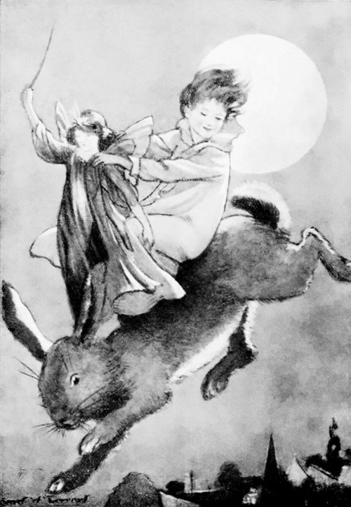
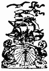

Title: The Book of Stories for the Story-teller
Author: Fanny E. Coe
Release date: August 3, 2008 [eBook #26177]
Language: English
Other information and formats: www.gutenberg.org/ebooks/26177
Credits: Produced by Sankar Viswanathan, Delphine Lettau, and the
Online Distributed Proofreading Team at http://www.pgdp.net


here is no need here to enter a plea for story-telling. Its value in the home and in the school is assured. Miss Bryant, in her charming book, How to Tell Stories to Children, says, "Perhaps never, since the really old days, has story-telling so nearly reached a recognized level of dignity as a legitimate and general art of entertainment as now." And, in the guise of entertainment, the story is often the vehicle conveying to the child the wholesome moral lesson or the bit of desirable knowledge so necessary to his well-being at the time. Thus it has come to be recognized that the ability to tell a story well is an important part of the equipment of the parent or the teacher of little children.
The parent is often at a loss for fresh material. Sometimes he "makes up" a story, with but poor satisfaction to himself or his child. The teacher's difficulty is quite otherwise. She knows of many good stories, but these same stories are scattered through many books, and the practical difficulty of finding time in her already overcrowded days for frequent trips to the library is well-nigh insurmountable. The[6] quest is indefinitely postponed, with the result that the stories are either crowded out altogether, or that the teacher repeats the few tales she has at hand month after month, and year after year, until all freshness and inspiration are gone from the story time.
The stories in the present collection are drawn from many nations and from widely differing sources. Folk tales, modern fairy tales, and myths have a generous showing; and there is added a new field as a source for stories. This is Real Life, in which children soon begin to take decided interest. Under this heading appear tales of child life, of child heroes, of adult heroes, and of animals.
Mr Herbert L. Willett, of the University of Chicago, has said: "It is not through formal instruction that a child receives his impulses toward virtue, honour and courtesy. It is rather from such appeal to the emotions as can be made most effectually through the telling of a story. The inculcation of a duty leaves him passionless and unmoved. The narrative of an experience in which that same virtue finds concrete embodiment fires him with the desire to try the same conduct for himself. Few children fail to make the immediate connection between the hero or heroine of the story and themselves."
Because of this great principle of imitation,[7] a large number of the stories in this little volume have been chosen for their moral value. They present the virtues of persistence, faithfulness, truthfulness, honesty, generosity, loyalty to one's word, tender care of animals, and love of friends and family. Some themes are emphasized more than once. "Hans the Shepherd Boy," "The Story of Li'l' Hannibal," and "Dust under the Rug," teach wholesome facts in regard to work. "The Feast of Lanterns" and "The Pot of Gold" emphasize the truth that
Filial devotion shines from the stories of "Anders' New Cap," "How the Sun, the Moon, and the Wind went out to Dinner," and "The Wolf-Mother of Saint-Ailbe."
The form of each story is such that the parent or teacher can tell or read the story, as it appears in the book, with only such slight modification as his intimate knowledge of the individual child or class would naturally prompt him to make.
The compiler wishes especially to express her appreciation for many helpful suggestions as to material received from Mrs Mary W. Cronan, teller of stories at various branches of the Boston Public Library.
nce upon a time there was a fox so shrewd that, although he was neither so fleet of foot, nor so strong of limb, as many of his kindred, he nevertheless managed to feed as comfortably as any of them.
One winter's day, feeling rather hungry, he trotted out of his lair to take a look round. The neighbouring farmers guarded their hen-roosts so carefully from his depredations that a nice fat hen was out of the question, and the weather was too cold to tempt the rabbits out of their snug warren. Therefore Mr Fox set his wits to work and kept his eyes open for what might come along.
After a while, as he slunk along the bottom of a dry ditch, he descried in the distance an old man driving a cart. This was Truvor, the fisherman, who, since two or three days of December sunshine had melted the ice, had had a good catch of fish in the lake by the mountain-side.
"Aha!" said the fox to himself, "I should[12] relish a dinner of fine, fresh trout. Truvor is far too selfish to share them with me, so I will have them all."
To achieve the purpose in view, he laid himself flat in the road over which the fisherman must pass and pretended to be dead. The fisherman beheld him with surprise when he drew near, and jumping from his seat poked his sleek sides with his whip. The fox did not move a muscle, and Truvor decided that he had been frozen to death by the cold of the preceding night.
"I will take him home to my wife," he remarked, as he flung the limp body into his cart. "His coat will make a very nice rug for our parlour, and she can use his brush to dust with."
The fox had much ado to refrain from laughing when he heard this and found himself amongst the fish. They smelt delicious, but he did not think it wise to eat them then, so he silently dropped them one by one into the road, and when the cart was empty, sprang out himself. Knowing nothing of what had been going on, the old man drove on until he reached his cottage.
"Come and see what I have brought you!" he called to his wife. You can imagine the good woman's disgust when she found the cart quite empty. Not only was[13] she without the rug, but they would have no dinner.
Meanwhile, the fox was thoroughly enjoying himself. The fish that he could not eat he hid away under a heap of grasses that he might make use of them some other time. While engaged in this occupation a wolf came up.
"Won't you give me a taste, little brother?" he asked. "I have had no food for the last two days, and know not where to seek it."
"You have nothing to do but to go to the lake and dip your tail over the edge of the bank, or through a hole in the ice if the water has frozen over again, as I expect it has done from the nip in the air. If you say these words: 'Come, little fish and big fish. Come!' the finest fish will take hold of the bait, and when you feel them hanging on you will have only to whisk your tail out of the water."
The wolf was a dull and stupid fellow and, never doubting the fox, hied him off to the lake. Sure enough the water had once more frozen over, but, finding a hole, he thrust in his tail and rammed it through, and sat down to wait till the fish should come. The fox was delighted to find him still sitting there as he passed by, and looking at the sky above[14] him murmured: "Sky, sky, keep clear! Water, water, freeze, freeze!"
"What are you saying?" inquired the wolf, without turning his head.
"Nothing at all," replied the fox. "I was only trying to help you." Then he went his way, and the wolf sat on all through the night.
When morning came he was cramped with cold, and tried to draw out his tail. Finding this impossible, since the water had frozen fast around it, he congratulated himself on having caught so many fish that their weight prevented him from lifting his tail. He was still pondering how to transfer them to the surface when some women came to fill their water jars.
"A wolf! a wolf!" they exclaimed excitedly. "Oh, come and kill it!"
Their cries soon brought their husbands to their sides, and all united in belabouring the wolf. With a great effort, however, he managed to free his tail, and ran off howling into the woods.
The fox, meantime, had profited by the absence of the householders to make a good meal, visiting the various larders, and feasting at will on the daintiest morsels he could find. Having eaten rather more than was good for him, he felt disinclined for much exercise,[15] and determined to go in search of the wolf that he might induce him to carry him home.
His sense of hearing being unusually keen, even for a fox, he was soon guided to the wolf's retreat by his mournful howls.
"Look at my tail," cried the wretched animal, as the fox poked his nose through the bushes. "See what trouble you brought upon me with your advice! I am in such pain that I can scarcely keep still."
"Look at my head," returned the fox, who had carefully dipped it into a flour bin after greasing it with butter that it might have the appearance of having been skinned. The wolf was kind-hearted, though stupid, and his sympathy was at once aroused.
"Jump on my back, little brother," he said, "and I will carry you home."
This was exactly what the fox had been scheming for, and the words were hardly out ere he had taken a comfortable seat. As he rode home in this way he hummed to himself a sly little song to the effect that he who was hurt carried him who had no hurt. Arrived at the end of his journey, he scampered off without a word of thanks, and, as he made a hearty supper on the remaining fish, he chuckled at the remembrance of the trick he had played the stupid wolf.
n a certain forest there once lived a fox, and near to the fox lived a man who had a cat that had been a good mouser in its youth, but was now old and half blind.
[1] From Cossack Fairy Tales (London: George G. Harrap and Company).
The man didn't want Puss any longer, but not liking to kill it he took it out into the forest and lost it there. Then the fox came up and said: "Why, Mr Shaggy Matthew, how d'ye do? What brings you here?"
"Alas!" said Pussy, "my master loved me as long as I could bite, but now that I can bite no longer and have left off catching mice—and I used to catch them finely once—he doesn't like to kill me, but he has left me in the wood, where I must perish miserably."
"No, dear Pussy!" said the fox; "you leave it to me, and I'll help you to get your daily bread."
"You are very good, dear little sister foxey!" said the cat, and the fox built him a little shed with a garden round it to walk in.
Now one day the hare came to steal the man's cabbage. "Kreem-kreem-kreem!" he squeaked. But the cat popped his head out of the window, and when he saw the hare he put up his back and stuck up his tail and said: "Ft-t-t-t-t-Frrrrrrr!"
The hare was frightened and ran away, and told the bear, the wolf and the wild boar all about it.
"Never mind," said the bear. "I tell you what, we'll all four give a banquet, and invite the fox and the cat, and do for the pair of them. Now, look here! I'll steal the man's mead; and you, Mr Wolf, steal his fat-pot; and you, Mr Wildboar, root up his fruit-trees; and you, Mr Bunny, go and invite the fox and the cat to dinner."
So they made everything ready as the bear had said, and the hare ran off to invite the guests. He came beneath the window and said: "We invite your little ladyship Foxey-Woxey, together with Mr Shaggy Matthew, to dinner," and back he ran again.
"But you should have told them to bring their spoons with them," said the bear.
"Oh, what a head I've got!—if I didn't quite forget!" cried the hare, and back he went again, ran beneath the window and cried: "Mind you bring your spoons!"
"Very well," said the fox.[18]
So the cat and the fox went to the banquet, and when the cat saw the bacon he put up his back and stuck out his tail, and cried: "Mee-oo, mee-oo!" with all his might. But they thought he said: "Ma-lo, ma-lo!"[2]
[2] "What a little! What a little!"
"What!" said the bear, who was hiding behind the beeches with the other beasts, "here have we four been getting together all we could, and this pig-faced cat calls it too little! What a monstrous cat he must be to have such an appetite!"
So they were all four very frightened, and the bear ran up a tree, and the others hid where they could.
But when the cat saw the boar's bristles sticking out from behind the bushes he thought it was a mouse, and put up his back again and cried: "Ft! ft! ft! Frrrrrrr!" Then they were more frightened than ever. And the boar went into a bush still farther off, and the wolf went behind an oak, and the bear got down from the tree, and climbed up into a bigger one, and the hare ran right away.
But the cat remained in the midst of all the good things and ate away at the bacon, and the little fox gobbled up the honey, and they ate and ate till they couldn't eat any more, and then they both went home licking their paws.
nce upon a time there lived a little old man and a little old woman in a house all made of hemp stalks. And they had a little dog named Turpie who always barked when anyone came near the house.
One night when the little old man and the little old woman were fast asleep, creep, creep, through the woods came the Hobyahs, skipping along on the tips of their toes.
"Tear down the hemp stalks. Eat up the little old man, and carry away the little old woman," cried the Hobyahs.
Then little dog Turpie ran out, barking loudly, and he frightened the Hobyahs so that they ran away home again.
But the little old man woke from his dreams, and he said:
"Little dog Turpie barks so loudly that I can neither slumber nor sleep. In the morning I will take off his tail."
So when morning came, the little old man took off little Turpie's tail to cure him of barking.[20]
The second night along came the Hobyahs, creep, creep, through the woods, skipping along on the tips of their toes, and they cried:
"Tear down the hemp stalks. Eat up the little old man, and carry away the little old woman."
Then the little dog Turpie ran out again, barking so loudly that he frightened the Hobyahs, and they ran away home again.
But the little old man tossed in his sleep, and he said:
"Little dog Turpie barks so loudly that I can neither slumber nor sleep. In the morning I will take off his legs."
So when morning came, the little old man took off Turpie's legs to cure him of barking.
The third night the Hobyahs came again, skipping along on the tips of their toes, and they called out:
"Tear down the hemp stalks. Eat up the little old man, and carry away the little old woman."
The little dog Turpie barked very loudly, and he frightened the Hobyahs so that they ran away home again.
But the little old man heard Turpie, and he sat up in bed, and he said:
"Little dog Turpie barks so loudly that I can neither slumber nor sleep. In the morning I will take off his head."[21]
So when morning came, the little old man took off Turpie's head, and then Turpie could not bark any more.
That night the Hobyahs came again, skipping along on the tips of their toes, and they called out:
"Tear down the hemp stalks. Eat up the little old man, and carry off the little old woman."
Now, since little dog Turpie could not bark any more, there was no one to frighten the Hobyahs away. They tore down the hemp stalks, they took the little old woman away in their bag, but the little old man they could not get, for he hid himself away under the bed.
Then the Hobyahs hung the bag which held the little old woman up in their house, and they poked it with their fingers, and they cried:
"Look you! Look you!"
But when daylight came, they went to sleep, for Hobyahs, you know, sleep all day.
The little old man was very sorry when he found that the little old woman was gone. He knew then what a good little dog Turpie had been to guard the house at night, so he fetched Turpie's tail, and his legs, and his head, and gave them back to him again.[22]
Then Turpie went sniffing and snuffing along to find the little old woman, and soon came to the Hobyahs' house. He heard the little old woman crying in the bag, and he saw that the Hobyahs were all fast asleep. So he went inside.
Then he cut open the bag with his sharp teeth, and the little old woman hopped out and ran home; but Turpie got inside the bag to hide. When night came, the Hobyahs woke up, and they went to the bag, and they poked it with their fingers, crying:
"Look you! Look you!"
But out of the bag jumped little dog Turpie, and he ate every one of the Hobyahs. And that is why there are not any Hobyahs now.
nce upon a time the Sun, the Moon, and the Wind went to dine with their uncle and aunt, the Thunder and the Lightning. They said good-bye to their mother, the Evening Star, crossed the great dark arching sky, and came to the deep cave where live Thunder and Lightning.
[3] A folk-story of India.
Here a wonderful feast was spread, and all sat down to enjoy it.
Now the Sun and the Wind were very greedy. They bent their heads low over their plates and they ate and ate of every dish that was passed to them. They thought of nothing but themselves and the good food before them.
But the Moon remembered her mother at home. Of every delicious dish she saved a portion for the Star.
At last the evening was over and they returned to their home.
"Well, my children, what have you brought to me?" asked their mother, the Star.
"I have brought you nothing," said the Sun. "I was having a jolly evening with my friends, and, of course, I couldn't fetch a dinner to you!"
"Neither have I brought you anything, mother!" said the Wind. "How it would have looked to be taking double portions of every dish!"
Then the Moon stepped forward. "Bring a plate, mother, for see!" She opened her hands and showered down rich fruit and delicious cakes which she had saved for her mother.
Then the Star turned to the Sun and said: "Because you forgot your mother at home, in the midst of your selfish pleasures, this is your doom. You shall burn, and burn, and burn with great heat, and men shall hate you. They shall cover their heads when you appear and seek the spots where your heat cannot beat upon them."
And that is why the Sun is so hot even to-day.
Then the Star turned to the Wind and said: "Because you also forgot your mother at home, in the midst of your selfish pleasures,[25] this is your doom. You shall blow, blow, blow the hot sand and dust before you until men shall hate you. They shall flee from your face to the cool hills and even to faraway lands where the trees and grass are not parched and shrivelled by your fiery breath."
And that is why the Wind in the hot weather is so disagreeable.
Then the Star turned to the Moon and said: "Because you thought of your mother, in the midst of your happiness, receive my blessing. Henceforth your light shall be so soft, so cool, and so silvery, that all men shall delight in you and your beams. They shall seek to have you smile with favour upon all their loves and all their plans. They shall call you blessed."
And that is why the light of the Moon is so cool, and so bright, and so beautiful to this very day.
orth wind likes a bit of fun as dearly as a boy does, and it is with boys he likes best to play.
One day, North Wind saw a brave little fellow eating his lunch under a tree. Just as he went to bite his bread, North Wind blew it out of his hand and swept away everything else that he had brought for his lunch.
"You hateful North Wind!" cried the little fellow. "Give me back my supper, I'm so hungry."
Now North Wind, like all brave beings, is noble, and so he tried to make up for the mischief he had done.
"Here, take this tablecloth," said North Wind, "and in whatever house you stay, spread it on the table; then wish, and you shall have everything you wish for to eat."
"Thank you!" said the boy, and he took the tablecloth and ran as fast as he could to the first house, which proved to be an inn.[27]
"I have enough to pay for lodging, so I'll stay all night," he said to himself.
"Bring me a table," he ordered the innkeeper, as he went to his room.
"Ha! ha!" laughed the innkeeper. "You mean bring me a supper."
"No, I don't. I want only a table and that right quick. I'm hungry."
The innkeeper brought the table, but after the door was shut he watched through the keyhole to see what would happen.
"Beans, bread and bacon," ordered the boy, as he spread out his tablecloth. On came beans, bread and bacon through the open window, whirled in by North Wind. Smoking hot they all were, too, for the dishes were tightly covered. After supper was over, the boy fell sound asleep.
North Wind did not waken him as the innkeeper took the table and the tablecloth and carried them downstairs. Next morning the boy was hungry again, but there was no tablecloth and so no breakfast.
"You are a cheat, North Wind; you have taken back your tablecloth."
"No," said North Wind, "that is not the sort of thing I do." But the boy did not get his tablecloth.
After a time North Wind met him again out under the trees.[28]
"This time I will give you a sheep," he said. "Each time that you rub his wool, out will drop a gold-piece. Take care of him."
The boy ran back and found the sheep at the door of the stable, behind the inn. He caught the sheep by a strap which was round its neck, and led it slowly up the stairs of the inn, to the room from which the tablecloth had disappeared the night before.
As the boy was hungry for his breakfast, he obeyed North Wind's command and patted the sheep upon its back. A gold-piece fell out of its fleece upon the floor.
"Good old North Wind!" said the boy. "Here's my breakfast and some hay for my sheep. Come breakfast, come hay," and through the open window came first a bundle of hay, and then a fine breakfast for the hungry boy. After breakfast, the boy paid for a week's lodging with the gold-piece.
He slept soundly that night with his sheep for a pillow, and the next night also, but the third morning, when the boy awoke, his head lay upon the floor and the sheep was gone.
Perhaps too many gold-pieces had been seen in the boy's hand, for he had patted his sheep very often.
He blamed North Wind again. "You have taken back your sheep. I don't like you. You are as cold-hearted as you can be."[29]
But North Wind said nothing. He put a queer stick into a bag and gave it to the boy and told him to go back and lock his door as tightly as before.
"Talk to the bag," he said, "and guard it as carefully as if there were a jewel in it."
That night the boy was wakened out of his soundest sleep by screams for help in his room. There was the innkeeper running about, and that queer stick was pounding him, first on the head, then on the feet, then on his back, then in his face.
"Help! help!" he cried.
"Give me back my sheep," said the boy.
"Get it, it is hidden in the barn," said the innkeeper.
The boy went out and found his sheep in the barn and drove it away as fast as he could, but he forgot about the innkeeper, and maybe that stick is pounding him to this day.
ong ago in the far North, where it is very cold, there was only one fire. A hunter and his little son took care of this fire and kept it burning day and night. They knew that if the fire went out the people would freeze and the white bear would have the Northland all to himself. One day the hunter became ill, and his son had all the work to do.
For many days and nights he bravely took care of his father and kept the fire burning.
The white bear was always hiding near, watching the fire. He longed to put it out, but he did not dare, for he feared the hunter's arrows.
When he saw how tired and sleepy the little boy was, he came closer to the fire and laughed to himself.
One night the poor boy could endure the fatigue no longer and fell fast asleep.
The white bear ran as fast as he could and jumped upon the fire with his wet feet, and[31] rolled upon it. At last he thought it was all out and went happily away to his cave.
A brown robin was flying near and saw what the white bear was doing.
She waited until the bear went away. Then she flew down and searched with her sharp little eyes until she found a tiny live coal. This she fanned patiently with her wings for a long time.
Her little breast was scorched red, but she did not stop until a fine red flame blazed up from the ashes.
Then she flew away to every hut in the Northland. Wherever she touched the ground, a fire began to burn. Soon, instead of one little fire, the whole North country was lighted up.
The white bear went farther back into his cave in the iceberg and growled terribly. He knew that there was now no hope that he would ever have the Northland all to himself.
This is the reason that the people in the North countries love the robin, and are never tired of telling their children how its breast became red.
ong ago, as you know, the Indians roved over the plains and through the forests of America. Their leaders were called chiefs. This story tells about an Indian chief and his son.
[4] This story is based upon a legend of the Algonquin Indians. John Greenleaf Whittier has a poem with a similar title, written upon the same theme.
The Indian chief was very strong and very brave. He could bear cold, hunger and pain without a word. He was a wonderful hunter and a fierce enemy. Nothing ever made him afraid.
He had one son, whom he loved with all his heart. He hoped that this son would grow up to be a warrior, greater than his father.
But the lad was slender and white-faced. He did not seem strong; long marches wearied him. When the Indian boys are about eighteen years of age, they like to show that they will make brave warriors. To do this they take certain tests. These are some of them. They go without food and water, five, seven, or even ten days. Again they go without sleep for ten days. They let [33]their friends cut them with knives and never even cry out.
The time came when the son of the chief must take the test. He went away to the wigwam, or lodge, where the testing took place. His father hoped that he would act like a brave young man.
When some days had passed, the father went to see his son. Pale and weak, he lay on the ground. He had not eaten nor slept.
"Father," he whispered, "I cannot bear this. Let me go free."
"Ah no, my boy," said the chief. "They will call you woman, if you fail. It is but two days more. Then you shall have good meat and deep sleep. Think of the time when you will be a great chief, with a hundred scalps at your belt. Be strong."
But the lad only shook his head.
Two days later, the father rose with the sun. He heaped moose-meat and corn into a wooden bowl and set off to his son.
As he drew near the wigwam he called, "Here is food, my son."
There was no reply.
He entered, and there, on the ground before him, lay his boy, dead.
They dug his grave close by the lodge, and brought his bow, pipe, and knife to bury with him.[34]
As they were placing the youth in his grave, they heard a strange, new song. They looked up and saw, on the top of the lodge, an unknown bird. It had a brown coat and a red breast. As they watched, it began to sing. Its song seemed to say:
"I was once the chief's son. But now I am a bird. I am happier than if I had lived to be a fierce warrior, with scalps at my belt. Now I shall make all glad with my song. I shall tell the little children when spring has come. Then they will search for pussy-willows and anemones. I am the robin, a little brother to man! Who so happy as I?"
Even the father's grief was comforted by the bright little messenger. "It is best after all," he said. "My son could not kill men nor beasts; he is happier as a singer, even as this little bird."
ong, long ago, there lived an old woman in a little cottage by the forest. She was not a poor old woman. She had plenty of wood to burn in winter, and plenty of meal to bake into bread all the year round. Her clothes were old-fashioned but warm. She always wore a grey dress and a little red cap.
[5] This story is told in verse in Phœbe Cary's A Legend of the Northland.
Late one summer afternoon, the cottage door was open. The old woman stood by her fire, baking cakes for her evening meal. How good they smelled!
A tall old man who was passing by the cottage stopped a moment. Then he pushed open the garden gate and walked up the path to the door.
The old woman was bending low over the cakes, but she saw his shadow and looked up.
"Will you give me one of your cakes?" said the man.
The woman thought to herself, "Why did I leave the door open? The smell of these hot cakes will bring every beggar within miles to my house." Then she looked a second time at the man and saw that he was no beggar. He stood like a king in the doorway. His blue eyes were kind but very keen.
She looked at the six cakes that lay crisp and hot on the hearth. "Well, I will give him one," she thought, "but these are all too large."
She took a small handful of meal from the barrel and began to bake it into a cake. The man watched her from the door. As she turned the cake, it seemed to her too large to give away.
"I will bake a smaller one," she said to herself. She did not glance toward the stranger, but caught up a wee bit of meal and began to cook the second cake.
But that also looked too large to give away. She cooked a third cake that was no larger than a thimble. But when it was done, she shook her head, for it also was too large to give away. And still the old man waited patiently in the doorway, watching it all.
Then the old woman gathered up the cakes, large and small, and put them on a plate. The plate she set on the pantry shelf and then locked the door.[37]
"I have no food for you," she said to the old man. "My cakes seem very small when I eat them, but they are far too large to give away. Ask bread at another door."
The old man's blue eyes flashed with fire as he drew himself up proudly.
"I have been round the world but never have I met a soul so small. You have shelter, food, and fire, but you will not share with another. This is your punishment. You shall seek your scanty food with pain. You shall bore, bore, bore in hard tree-trunks for your food."
The old man struck his staff on the floor. A strong gust of wind carried the old woman up the chimney. The flames scorched her grey clothes black; but her red cap was unharmed.
A woodpecker flew out of the chimney and away to the wood. Rap! rap! rap! you can hear her tapping her beak on the tree-trunks as she hunts for food. But always and everywhere, she wears a black coat and a little red cap. Watch for the woodpecker and see if it is not so.
oney," said Uncle Remus to the little boy, "why don' you git some flesh on yo' bones? If I wuz ole Brer Wolf en you wuz a young rabbit, I wouldn't git hongry 'nuff fer ter eat you, caze you's too bony."
[6] From Uncle Remus and his Friends.
"Did Brother Wolf want to eat the young rabbit, Uncle Remus?" inquired the little boy.
"Ain't I done tole you 'bout dat, honey? Des run over in yo' min' en see ef I ain't."
The youngster shook his head.
"Well," said Uncle Remus, "ole Brer Wolf want ter eat de little Rabs all de time, but dey wuz one time in 'tickeler dat dey make his mouf water, en dat wuz de time when him en Brer Fox wuz visitin' at Brer Rabbit's house. De times wuz hard, but de little Rabs wuz slick and fat, en des ez frisky ez kittens. Ole Brer Rabbit wuz off som'ers, en Brer Wolf en Brer Fox wuz waitin' fer 'im. De little Rabs wuz playin' 'roun', en dough dey wuz little dey kep' der years open. [39]Brer Wolf look at um out'n de cornder uv his eyes, en lick his chops en wink at Brer Fox, en Brer Fox wunk back at 'im. Brer Wolf cross his legs, en den Brer Fox cross his'n. De little Rabs, dey frisk en dey frolic.
"Brer Wolf ho'd his head to'rds um en 'low, 'Dey er mighty fat.'
"Brer Fox grin, en say, 'Man, hush yo' mouf!'
"De little Rabs frisk en dey frolic, en play furder off, but dey keep der years primed.
"Brer Wolf look at um en 'low, 'Ain't dey slick en purty?'
"Brer Fox chuckle, en say, 'Oh, I wish you'd hush!'
"De little Rabs play off furder en furder, but dey keep der years open.
"Brer Wolf smack his mouf, en 'low, 'Dey er joosy en tender.'
"Brer Fox roll his eye en say, 'Man, ain't you gwine ter hush up, 'fo' you gi' me de fidgets?'
"Der little Rabs dey frisk en dey frolic, but dey hear ev'ything dat pass.
"Brer Wolf lick out his tongue quick, en 'low, 'Less us whirl in en eat um.'
"Brer Fox say, 'Man, you make me hongry! Please hush up!'
"De little Rabs play off furder en furder, but dey know 'zackly what gwine on. Dey[40] frisk en dey frolic, but dey got der years wide open.
"Den Brer Wolf make a bargain wid Brer Fox dat when Brer Rabbit git home, one un um ud git 'im wropped up in a 'spute 'bout fust one thing en den anudder, whiles tudder one ud go out en ketch de little Rabs.
"Brer Fox 'low, 'You better do de talkin', Brer Wolf, en lemme coax de little Rabs off. I got mo' winning ways wid chilluns dan what you is.'
"Brer Wolf say, 'You can't make gourd out'n punkin, Brer Fox. I ain't no talker. Yo' tongue lots slicker dan mine. I kin bite lots better'n I kin talk. Dem little Rabs don't want no coaxin'; dey wants ketchin'—dat what dey wants. You keep ole Brer Rabbit busy, en I'll ten' der de little Rabs.'
"Bofe un um know'd dat whichever cotch de little Rabs, de tudder one ain't gwine smell hide ner hair un um, en dey flew up en got ter 'sputin', en whiles dey wuz 'sputin', en gwine on dat way, de little Rabs put off down de road—blickety-blickety,—fer ter meet der daddy. Kase dey know'd ef dey stayed dar dey'd git in big trouble.
"Dey went off down de road, de little Rabs did, en dey ain't gone so mighty fur 'fo' dey meet der daddy comin' 'long home. He had[41] his walkin' cane in one han' en a jug in de udder, en he look ez big ez life, en twice ez natchul.
"De little Rabs run to'rds 'im en holler, 'What you got, daddy? What you got, daddy?'
"Brer Rabbit say, 'Nothin' but er jug er 'lasses.'
"De little Rabs holler, 'Lemme tas'e, daddy! Lemme tas'e, daddy!'
"Den ole Brer Rabbit sot de jug down in de road en let um lick de stopper a time er two, en atter dey is done get der win' back, dey up'n tell 'im 'bout de 'greement dat Brer Wolf en Brer Fox done make, en 'bout de 'spute what dey had. Ole Brer Rabbit sorter laugh ter hisse'f en den he pick up his jug en jog on to'rds home. When he git mos' dar he stop en tell de little Rabs fer stay back dar out er sight, en wait twel he call um 'fo' dey come. Dey wuz mighty glad ter do des like dis, kaz dey done seed Brer Wolf tushes, en Brer Fox red tongue, en dey huddle up in de broom-sage ez still ez a mouse in de flour bar'l.
"Brer Rabbit went on home, en sho 'nuff, he fin' Brer Wolf en Brer Fox waitin' fer 'im. Dey'd done settle der 'spute, en dey wuz settin' dar des ez smilin' ez a basket er chips. Dey pass the time er day wid Brer Rabbit, en den[42] dey ax 'im what he got in de jug. Brer Rabbit hummed en haw'd, en looked sorter sollum.
"Brer Wolf looked like he wuz bleedz ter fin' out what wuz in de jug, en he keep a-pesterin' Brer Rabbit 'bout it; but Brer Rabbit des shake his head en look sollum, en talk 'bout de wedder en de craps, en one thing en anudder. Bimeby Brer Fox make out he wuz gwine atter a drink er water, en he slip out, he did, fer to ketch de little Rabs. Time he git out de house, Brer Rabbit look all 'roun' ter see ef he lis'nen, en den he went ter de jug en pull out de stopper.
"He han' it ter Brer Wolf en say, 'Tas'e dat.'
"Brer Wolf tas'e de 'lasses, en smack his mouf. He 'low, 'What kinder truck dat? Hit sho is good.'
"Brer Rabbit git up close ter Brer Wolf en say, 'Don't tell nobody. Hit's Fox-blood.'
"Brer Wolf looked 'stonish'. He 'low, 'How you know?'
"Brer Rabbit say, 'I knows what I knows!'
"Brer Wolf say, 'Gimme some mo'!'
"Brer Rabbit say, 'You kin git some mo' fer yo'se'f easy 'nuff, en de fresher 'tis, de better.'
"Brer Wolf 'low, 'How you know?'
"Brer Rabbit say, 'I knows what I knows!'[43]
"Wid dat Brer Wolf stepped out, en start to'rds Brer Fox. Brer Fox seed 'im comin', en he sorter back off. Brer Wolf got little closer, en bimeby he make a dash at Brer Fox. Brer Fox dodge, he did, en den he put out fer de woods wid Brer Wolf right at his heels.
"Den atter so long a time, atter Brer Rabbit got done laughin', he call up de little Rabs, gi' um some 'lasses fer supper, en spanked um en sont um ter bed.'"
"Well, what did he spank 'em for, Uncle Remus?" asked the little boy.
"Ter make um grow, honey,—des ter make um grow!"
"Did Brother Wolf catch Brother Fox?"
"How I know, honey? Much ez I kin do ter foller de tale when it keeps in de big road, let 'lone ter keep up wid dem creeturs whiles dey gone sailin' thoo de woods. De tale ain't persoo on atter um no furder dan de place whar dey make der disappear'nce. I tell you now, when I goes in de woods, I got ter know whar I'm gwine."
ne evening Uncle Remus was telling the little boy a mighty tale of how Brer Rabbit got the better of ole Brer Lion. He ended in this way: "All de creeturs hear 'bout it, en dey go 'roun' en say dat Brer Rabbit sholy is got deze 'ere things up here." Uncle Remus tapped his forehead, and the little boy laughed.
[7] From Uncle Remus and his Friends.
"I don't think Brother Lion had much sense," remarked the little boy.
"Yes, he had some," said Uncle Remus. "He bleedz ter had some, but he ain't got much ez Brer Rabbit. Dem what got strenk ain't got so mighty much sense.
"After Brer Rabbit done make way wid ole Brer Lion, all de yuther creeturs say he sholy is a mighty man, en dey treat 'im good. Dis make 'im feel so proud dat he bleedz ter show it, en so he strut 'roun' like a boy when he git his fust pa'r er boots.
"'Bout dat time, Brer Wolf tuck a notion dat ef Brer Rabbit kin outdo ole Brer Lion, he can't outdo him. So he pick his chance one [45]day whiles ole Miss Rabbit en de little Rabs is out pickin' sallid for dinner. He went in de house, he did, en wait fer Brer Rabbit ter come home. Brer Rabbit had his hours, en dis was one un um, en 't wan't long 'fo' here he come. He got a mighty quick eye, mon, en he tuck notice dat ev'ything mighty still. When he got a little nigher, he tuck notice dat de front door wuz on de crack, en dis make 'im feel funny, kaze he know dat when his ole 'oman en de chillun out, dey allers pulls de door shet en ketch de latch. So he went up a little nigher, en he step thin ez a batter-cake. He peep here, en he peep dar, yit he ain't see nothin'. He lissen in de chimbley cornder, en he lissen und' de winder, yit he ain't hear nothin'.
"Den he sorter wipe his mustach en study. He 'low ter hisse'f, 'De pot rack know what gwine up de chimbley, de rafters know who's in de loft, de bed-cord know who und' de bed. I ain't no pot-rack, I ain't no rafter, en I ain't no bed-cord, but, please gracious! I'm gwine ter fin' who's in dat house, en I ain't gwine in dar nudder. Dey mo' ways ter fin' out who fell in de mill-pond widout fallin' in yo'se'f.'
"Some folks," Uncle Remus went on, "would 'a' rushed in dar, en ef dey had, dey wouldn't 'a' rushed out no mo', kaze dey[46] wouldn't 'a' been nothin' 'tall lef' un um but a little scrap er hide en a han'ful er ha'r.
"Brer Rabbit got better sense dan dat. All he ax anybody is ter des gi' 'im han'-roomance, en den what kin ketch 'im is mo' dan welly-come ter take 'im. Dat 'zackly de kinder man what Brer Rabbit is. He went off a little ways fum de house en clum a 'simmon stump en got up dar en 'gun ter holler.
"He 'low, 'Heyo, house!'
"De house ain't make no answer, en Brer Wolf, in dar behime de door, open his eyes wide. He ain't know what ter make er dat kinder doin's.
"Brer Rabbit holler, 'Heyo, house! Why n't you heyo?'
"House ain't make no answer, en Brer Wolf in dar behime de door sorter move roun' like he gittin' restless in de min'.
"Brer Rabbit out dar on de 'simmon stump holler mo' louder dan befo', 'Heyo, house! Heyo!'
"House stan' still, en Brer Wolf in dar behime de door 'gun ter feel col' chills streakin' up and down his back. In all his born days he ain't never hear no gwines on like dat. He peep thoo de crack er de door, but he can't see nothin'.[47]
"Brer Rabbit holler louder, 'Heyo, house! Ain't you gwine ter heyo? Is you done los' what little manners you had?'
"Brer Wolf move 'bout wuss'n befo'. He feel like sum un done hit 'im on de funny-bone.
"Brer Rabbit holler hard ez he kin, but still he ain't git no answer, en den he 'low, 'Sholy sump'n nudder is de matter wid dat house, kaze all de times befo' dis, it been holler'n back at me, "Heyo, yo'se'f!"'
"Den Brer Rabbit wait little bit, en bimeby he holler one mo' time, 'Heyo, house!'
"Ole Brer Wolf try ter talk like he speck a house 'ud talk, en he holler back, 'Heyo, yo'se'f!'
"Brer Rabbit wunk at hisse'f. He 'low, 'Heyo, house! why n't you talk hoarse like you got a bad col'?'
"Den Brer Wolf holler back, hoarse ez he kin, 'Heyo, yo'se'f!'
"Dis make Brer Rabbit laugh twel a little mo' en he'd a drapt off'n dat ar 'simmon stump en hurt hisse'f.
"He 'low, 'Eh-eh, Brer Wolf! dat ain't nigh gwine ter do. You'll hatter stan' out in de rain a mighty long time 'fo' you kin talk hoarse ez dat house!'
"I let you know," continued Uncle Remus, laying his hand gently on the little boy's[48] shoulder, "I let you know, Brer Wolf come a-slinkin' out, en made a break fer home. Atter dat, Brer Rabbit live a long time wid'out any er de yuther creeturs a-pesterin' un 'im!"
nce upon a time there lived in a village in some country (I do not know where, but certainly nowhere near here), an old man and an old woman who were very poor indeed. They had never been able to save a single penny. They had no farm, not even a garden. They had nothing but a little Duck that walked around on her two feet every day singing the song of famine. "Quack! quack! Who will give me a piece of bread? Quack! quack! Who will give me a piece of bread?" This little duck was so small that she was named Teenchy Duck.
[8] Translated from the French by Joel Chandler Harris.
It so happened one day that Teenchy Duck was paddling in the water near the river's edge when she saw a fine purse filled with gold. At once she began to flap her wings and cry: "Quack! quack! Who has lost his beautiful money? Quack! quack! Who has lost his beautiful money?"
Just at that moment the Prince of the [50]Seven Golden Cows passed along the road. He was richer than all the kings and emperors, but he was mean and miserly. He walked along with a stick in his hand, and as he walked he counted in his mind the millions that he had stored away in his strong-box.
"Quack! quack! Who lost his beautiful money? Quack! quack! Who lost his beautiful money?" cried Teenchy Duck.
"I have lost it," cried the Prince of the Seven Golden Cows, and then he seized the purse full of money that Teenchy Duck held in her bill, and went on his way.
The poor Puddle Duck was so astonished at this that she could scarcely stand on her feet.
"Well, well!" she exclaimed, "that rich lord has kept all for himself and given me nothing. May he be destroyed by a pestilence!"
Teenchy Duck at once ran to her master, and told him what had happened. When her master learned the value of what Teenchy Duck had found, and the trick that had been played on her by the Prince of the Seven Golden Cows, he went into a rage.
"Why, you big simpleton!" he exclaimed, "you find money and you do not bring it to us! You give it to a big lord, who did not lose it, when we poor people need it so much! Go out of this house instantly, and don't dare[51] to come back until you have brought me the purse of gold!"
Poor Teenchy Duck trembled in all her limbs, and made herself small and humble; but she found her voice to say:
"You are right, my master! I go at once to find the Prince of the Seven Golden Cows."
But once out of doors the poor Puddle Duck thought to herself sorrowfully: "How and where can I find the Prince who was so mean as to steal the beautiful money?"
Teenchy Duck was so bewildered that she began to strike her head against the rocks in despair. Suddenly an idea came into her mind. She would follow his tracks and the marks that his walking-stick made in the ground until she came to the castle of the Prince of the Seven Golden Cows.
No sooner thought than done. Teenchy Duck went waddling down the road in the direction taken by the miserly Prince, crying with all her might:
"Quack! quack! Give me back my beautiful money! Quack! quack! Give me back my beautiful money!"
Brother Fox, who was taking his ease a little way from the road, heard Teenchy[52] Duck's cries, and knew her voice. He went to her and said:
"What in the world is the matter with you, my poor Teenchy Duck? You look sad and broken-hearted."
"I have good reason to be," said Teenchy Duck. "This morning, while paddling in the river, I found a purse full of gold, and gave it to the Prince of the Seven Golden Cows, thinking it was his. But now, here comes my master and asks me for it, and says he will kill me if I do not bring it to him soon."
"Well, where are you going in this style?" asked Brother Fox.
"I am going straight to the Prince of the Seven Golden Cows," said Teenchy Duck.
"Shall I go with you?" asked Brother Fox.
"I'd be only too glad if you would," exclaimed Teenchy Duck.
"But how can I go?" said Brother Fox.
"Get into my satchel," said Teenchy Duck, "and I'll try to carry you."
"It isn't big enough," said Brother Fox.
"It will stretch," said Teenchy Duck. So Brother Fox got into the satchel, and Teenchy Duck went waddling along the road, crying: "Quack! quack! Give me back my beautiful money!"
She had not gone far when she met Brother Wolf, who was passing that way.[53]
"What are you crying so for?" he inquired. "One would think you were going to die on the journey."
"It is only too true," said Teenchy Duck, and then she told Brother Wolf about finding the money-purse, just as she had told Brother Fox.
"Perhaps I can be of some service to you," said Brother Wolf. "Shall I go with you?"
"I am willing," said Teenchy Duck.
"But how can I go so far?" Brother Wolf asked.
"Get into my satchel," said Teenchy Duck, "and I'll carry you as best I can."
"It is too small," said Brother Wolf.
"It will stretch mightily," said Teenchy Duck.
So Brother Wolf also got into the satchel with Brother Fox.
Teenchy went on her way again. She didn't walk very fast, for her satchel was heavy; but she never ceased crying: "Quack! quack! Give me back my beautiful money!"
Now it happened, as she was going along, she came up with a Ladder, which said, without asking after her health:
"My poor Teenchy Duck! You do not seem to be very happy."
"I should think not!" exclaimed Teenchy Duck.[54]
"What can the matter be?" the Ladder asked.
Teenchy Duck then told her story over again.
"I am not doing anything at present," said the Ladder, "shall I go with you?"
"Yes," said Teenchy Duck.
"But how can I go, I who never walk?" inquired the Ladder.
"Why, get into my satchel," said Teenchy Duck, "and I'll carry you the best I know how."
The Ladder was soon in the satchel with Brother Fox and Brother Wolf, and Teenchy Duck went on her way, following the tracks of the Prince of the Seven Golden Cows, and always crying:
"Quack! quack! Give me back my beautiful money!"
Going along and crying thus, Teenchy Duck came to her best and oldest friend, the River.
"What are you doing here?" said the River, in astonishment, "and why are you crying so? When I saw you this morning you seemed very happy."
"Ah!" said Teenchy Duck, "would you believe it? I have not eaten since yesterday."
"And why not?" asked the sympathetic River.[55]
"You saw me find the purse of gold," said Teenchy Duck, "and you saw the Prince seize it. Ah, well! my master will kill me if I do not get it and return it to him."
"Sometimes," the River replied, "a little help does a great deal of good. Shall I go with you?"
"I should be very happy," said Teenchy Duck.
"But how can I follow you—I that have no limbs?" said the River.
"Get into my satchel," said Teenchy Duck. "I'll carry you as best I can."
Then the River got into the satchel by the side of the other friends of Teenchy Duck.
She went on her journey, keeping her eyes on the ground, so as not to lose sight of the tracks of the thief, but still crying for her beautiful money. On her way she came to a Bee-Hive, which had a mind to laugh because Teenchy Duck was carrying such a burden.
"Hey, my poor Teenchy Duck! What a big fat satchel you have there," said the Bee-Hive.
"I'm not in the humour for joking, my dear," said Teenchy Duck.
"Why are you so sad?"
"I have been very unfortunate, good little people," said Teenchy Duck, addressing herself to the Bees, and then she told her story.[56]
"Shall we go with you?" asked the Bees.
"Yes, yes!" exclaimed Teenchy Duck. "In these days of sorrow I stand in need of friends."
"How shall we follow you?" asked the Bees.
"Get into my satchel," said Teenchy Duck. "I'll carry you the best I know how."
Then the Bees shook their wings for joy and swarmed into the satchel along with the other friends of Teenchy Duck.
She went on her way always crying for the return of her beautiful money. She walked and walked without stopping to rest a moment, until her legs almost refused to carry her. At last, just as night was coming on, Teenchy Duck saw with joy that the tracks of the Prince of the Seven Golden Cows stopped at the iron gate that barred the way to a splendid castle.
"Ah!" she exclaimed, "I have arrived at my journey's end, and I have no need to knock on the gate. I will creep under."
Teenchy Duck entered the grounds and cried out: "Quack! quack! Give me back my beautiful money!"
The Prince heard her and laughed scornfully.[57] How could a poor Teenchy Duck compel a great lord to return the purse of gold?
Teenchy Duck continued to cry:
"Quack! quack! Give me back my beautiful money!"
It was night, and the Prince of the Seven Golden Cows ordered one of his servants to take Teenchy Duck and shut her up in the henhouse with the turkeys, the geese, and the chickens, thinking that these fowls would kill the stranger, and that her disagreeable song would for ever be at an end.
This order was immediately carried out by the servant, but no sooner had Teenchy Duck entered the henhouse than she exclaimed:
"Brother Fox, if you do not come to my aid, I am lost."
Brother Fox came out of the satchel promptly, and worked so well at his trade that of all the fowls he found there, not one remained alive.
At break of day the servant-girl, whose business it was to attend to the poultry-yard, opened the door of the henhouse, and was astounded to see Teenchy Duck come out, singing the same old song:
"Quack! quack! Give me back my beautiful money!"
The astonished girl immediately told her master, the Prince, what had happened, and[58] the wife of the Prince, who had at that moment learned all, said to her husband:
"This Duck is a witch. Give her the money, or it will bring us bad luck."
The Prince of the Seven Golden Cows refused to listen. He believed that the fox had only happened to enter his henhouse by accident.
Teenchy Duck made herself heard all day, and at night the Prince said to his servants:
"Take this squaller and throw her into the stable under the feet of the mules and horses. We will see in the morning what she will say."
The servants obeyed, and Teenchy Duck immediately cried:
"Brother Wolf, if you do not come quickly to my aid I shall be killed."
Brother Wolf made no delay, and it was not long before he had destroyed the horses and the mules. Next morning, before day, the servants went to get the animals to put them to the ploughs and waggons; but when they saw them lying dead their astonishment was great. In the stable Teenchy Duck stood alone, singing in her most beautiful voice:
"Quack! quack! Give me back my beautiful money!"
When the Prince of the Seven Golden Cows heard the sad news, he became white[59] with rage, and in his fury he wanted to give his servants a thousand lashes for not having taken better care of the animals. But his wife calmed him little by little, then: "My husband, give back to Teenchy Duck this purse you have taken, or else we shall be ruined," she said.
"No," cried the Prince, "she shall never have it!"
All this time Teenchy Duck was walking up and down, to the right and to the left, singing at the top of her voice:
"Quack! quack! Give me back my beautiful money!"
"Heavens!" said the Prince, stopping his ears, "I am tired of hearing this ugly fowl squall and squawk. Quick! throw her into the well or the furnace, so that we may be rid of her."
"What shall we do first?" the servants asked.
"It matters not," said the Prince, "so long as we are rid of her."
The servants took Teenchy Duck and threw her into the well, thinking this the easier, and the quickest way to be rid of her.
As Teenchy Duck was falling, she cried: "Come to my assistance, good Ladder, or I am undone."
The Ladder immediately came out of the[60] satchel, and leaned against the walls of the well. Teenchy Duck came up the rounds, singing:
"Quack! quack! Give me back my beautiful money!"
Everybody was astonished, and the Prince's wife kept saying: "Give the witch her money."
"They would say that I am afraid of a Teenchy Duck," said the Prince of the Seven Golden Cows. "I will never give it up." Then, speaking to his servants, he said: "Heat the oven, heat it to a white heat, and throw this witch in."
The servants had to obey, but they were so frightened that none dared touch her. At last, one bolder than the rest seized her by the end of the wing and threw her into the red-hot oven. Everyone thought that this was the end of Teenchy Duck, but she had had time to cry out:
"Oh! my dear friend River, come to my assistance, or I shall be roasted."
The River rushed out and quenched the fire and cooled the oven.
When the Prince went to see what was left of Teenchy Duck, she met him and began to repeat her familiar song:
"Quack! quack! Give me back my beautiful money!"[61]
The Prince of the Seven Golden Cows was furious.
"You are all blockheads!" he cried to his servants. "You never knew how to do anything. Get out of here! I will drive you off the place. Hereafter I will take charge of this witch myself."
That night, before retiring, the Prince and his wife went and got Teenchy Duck, and prepared to give her such a beating as they had no doubt would cause her death.
Fortunately, Teenchy Duck saw the danger and cried out:
"Friend Bees! come out and help me."
A buzzing sound was heard, and then the Bees swarmed on the Prince and his wife, and stung them so badly that they became frightful to behold.
"Return the money to this ugly witch," groaned the unfortunate wife. "Run, or we are done for."
The Prince did not wait to be told twice. He ran and got the purse full of gold, and returned it to Teenchy Duck.
"Here," said he, "I am conquered. But get out of my grounds quickly."
Full of joy, Teenchy Duck went out into the road singing: "Quack! quack! I have got my beautiful money! Quack! quack! Here is my beautiful money!"[62]
On her way home she returned the friends that had aided her to the places where she had found them, thanking them kindly for their help in time of need.
At break of day Teenchy Duck found herself at her master's door. She aroused him by her loud cries. After that, the family was rich and Teenchy Duck was well taken care of. If she went to the village pond it was only to tell her comrades of her remarkable way of gaining the beautiful money.
nce upon a time there lived a great giant. He had mighty arms and legs and could carry tons upon his back. His name was Offero.
Offero had one wish. He wished to serve the greatest king on earth. He was told that the emperor was the most powerful. So he went to him and said, "Lord Emperor, will you have me for your servant?"
The emperor was delighted with him. "Promise to serve me for ever, my good fellow," he said.
"Ah no," said Offero. "I dare not promise that. But of this be sure, as long as I am your servant, no harm shall come to you."
So they journeyed on together. The emperor was delighted with his new servant. All his soldiers were poor and weak compared to Offero.
In the evening when the soldiers rested, the emperor loved to listen to music. He had with him a harper who would play upon his harp and sing sweetly.
Once the harper sang a song in which the[64] name of Satan was heard. At this name the emperor trembled and made the sign of the cross.
"Why do you tremble, Lord Emperor?" asked the giant.
"Hush!" said the emperor.
"Tell me, or I will leave you," said Offero.
"I tremble because I fear Satan," answered the emperor. "I made the sign of the cross so that he cannot harm me. He is as wicked as he is strong."
"Farewell," said the giant. "I seek Satan now. If he is stronger than you, I must serve him."
So he journeyed through the land and soon found Satan at the head of a large army.
"Where do you go? Whom do you seek?" asked Satan.
"I seek Satan," said Offero. "I would have him for my master, for he is the mightiest king on earth."
"I am he," answered Satan. "Come with me and you shall have happy and easy days."
Offero served Satan for months and was well pleased with his master. At last, as they were marching through the land one day, they came upon a place where four roads met. Just here stood a cross.
When Satan saw the cross, he turned his army and marched quickly away. "What[65] does this mean?" asked the giant. "Are you afraid of that cross, my master?"
Satan was silent.
"Answer me," said Offero, "or I leave you at once."
Then Satan said, "Yes, it is true that I fear the cross. Upon it hung the Son of Mary."
"Then I leave you straightway," said Offero. "I seek the Son of Mary. He shall be my king, since he is stronger than you."
Many days he searched, but alas! few could tell him anything of his new king, the Son of Mary. At last he found an old hermit and asked him the question he had asked so many others.
"How can I serve the Son of Mary?"
"You must fast," said the hermit.
"Ah, no!" said Offero. "If I fasted I should lose my great strength."
"Then you must pray," said the hermit.
"How can I pray?" asked Offero, "I know no prayers."
"Then," said the gentle old man, "I think the Son of Mary would be pleased to have you use your strength in some good work. Why not carry travellers across the stream in the name of the Son of Mary?"
"That is just to my mind," cried Offero, overjoyed. So straightway he built a hut by[66] the swift stream, and cut a stout staff to steady his steps when the river roared high.
Travellers were glad to be helped on their way by this rough yet kindly giant. Sometimes they offered him money, but he always shook his great head. "I do this for the love of the Son of Mary," he said.
Many years went by. Offero's hair was now white as snow and his back was a little bent. But his strength was still great. One night, as he lay asleep, he was awakened by a voice, such a gentle, pleading little voice—"Dear, good, kind Offero, carry me across!"
He sprang to his feet, caught up his staff, and crossed to the farther shore. No one was there.
"I must have been dreaming," thought Offero as he laid himself down in his bed once more.
Again he fell asleep and again the same voice awoke him. How sweet, yet sad it sounded! "Dear, good, kind Offero, carry me across!"
He patiently crossed the deep, swift river, but again no one was to be seen. Once more he lay down in his bed and fell asleep. And once more came the pleading little voice, "Dear, good, kind Offero, carry me across!"
And now, for the third time, the old giant seized his palm-tree staff and pressed[67] through the cold river. There on the shore stood "a tender, fair little boy with golden hair. He looked at the giant with eyes full of trust and love."
Offero tossed him on his shoulder and then turned to the river. Dark and surging it rose to his waist. The child grew heavier and heavier. The giant bent under his burden. Now and then he felt he should surely sink into the river and be swept away.
At last he struggled up the bank and set down the child. "My little Master," he gasped, "do not pass this way again; I have come near losing my life."
But the fair child said to Offero, "Fear not, but rejoice. All thy sins are forgiven thee. Know that thou hast carried the Son of Mary. That thou mayest be sure of this, fix thy staff in the earth."
Offero obeyed, and lo! out of the bare palm-staff sprang leaves and dates. Then Offero knew that it was Christ whom he had borne, and he fell at His feet.
A little hand rested in blessing upon the giant's bowed head. "Henceforth," said the Son of Mary, "thy name shall be, not Offero but Christoffero."
Thus it was that Christopher came by his name. Because he was true to his name we always call him St Christopher.
nce there was a poor farmer who had three sons—Peter, Paul, and Jack.
[9] A fairy-tale of Finland.
Now Peter was big, fat, red-faced, and slow; Paul was slender, awkward, and ill-natured; Jack was quick, and bright, and so little that he might have hidden himself in one of Peter's big boots.
The poor farmer had nothing in the world but a little hut that seemed ready to tumble down every time the wind blew. He worked hard, but it was all he could do to earn bread for his family.
The boys grew very fast, and by-and-by they were old enough to work. Then their father said to them, "Boys, I have taken care of you these many days when you were too little to take care of yourselves. Now I am old, and you are strong. It is time for you to go out and earn your living."
So, early the next morning, the three boys started out to seek their fortunes.
"Where shall we go?" asked Peter.
"Yes, where shall we go?" said Paul. "Things have come to a pretty pass when one can't stay at home."
"Well, I am going to the King's palace," said Jack.
"And what will you do there?" said Paul. "You are a fine fellow to be going to kings' palaces."
"I will tell you," said Jack. "The King's palace is a very grand place. It is built of white stones and it has six glass windows on the front side of it.
"But a huge oak-tree has grown up right against the glass windows. The leaves are so many and so big that they shut out all the sunlight, and the rooms of the palace are dark even in midday."
"Well, what of that?" asked Peter.
"Yes, what of that?" growled Paul. "What have you to do with the oak?"
"The King wants it cut down," said Jack.
"Well, then, why don't his men cut it down?" asked Paul.
"They can't," said Jack. "The tree is so hard that it blunts the edge of every axe; and whenever one of its branches is cut off, two bigger ones spring out in place of it. The King has offered three bags of gold to anyone who will cut the tree down."[70]
"How did you learn all this?" asked Peter.
"Oh, a little bird told me," said Jack. "You see, I can read and you cannot. I am going to the King's palace to see if I can't earn those bags of gold."
"Not till I try it," cried Paul; "for I am older than you."
"I should have the first trial," said Peter; "for I am older than either of you. Come along, boys, let's all go down and take a look at the big oak."
And so all three took the road that led to the King's palace.
Peter and Paul went jogging along with their hands in their pockets. They did not look either to the right or to the left.
But little Jack skipped this way and that, noticing everything by the roadside. He watched the bees buzzing among the flowers, the butterflies fluttering in the sunlight and the birds building their nests in the trees.
He asked questions about everything. "What is this? Why is this? How is this?"
But his brothers only growled and answered, "We don't know."
By-and-by they came to a mountain and a great forest of pine-trees. Far up the side[71] of the mountain they could hear the sound of an axe and the noise of falling branches.
"I wonder who is chopping wood up there," said Jack. "Do you know, Paul?"
"Of course I don't know," growled Paul. "Hold your tongue."
"Oh, he is always wondering," said Peter. "You would think he'd never heard an axe before."
"Well, wonder or no wonder," said Jack, "I mean to go up and see who is chopping wood."
"Go, then," said Paul. "You will tire yourself out and be left behind. But it will be a good lesson to you."
Jack did not stop to listen to these words. For he was already climbing up the mountain toward the place where the chopping was heard.
When he came to the top, what do you think he saw?
He saw a bright steel axe working all alone and cutting down a big pine-tree. No man was near it.
"Good-morning, Mr Axe," he said. "I think you must be tired chopping at that old tree all by yourself."
"Ah, master," said the axe. "I have been waiting for you a long time."
"Well, here I am," said Jack; and he took the axe and put it into his pocket.[72]
Then he ran down the mountain and soon overtook his brothers.
"Well, Mr Why-and-How," said Paul, "what did you find up there?"
"It was really an axe that we heard," answered Jack.
"Of course it was," said Peter. "You might have saved yourself all your trouble by staying with us."
After the boys had passed through the woods they came to a great rocky place between two mountains. The path was narrow and crooked, and steep cliffs towered above it on both sides.
Soon they heard a dull sound high up on the top of a cliff. Thump! Thump! Thud! it went, like someone striking iron against stone.
"I wonder why anyone is breaking stones up there," said Jack.
"Yes, of course you wonder," growled Paul; "you are always wondering."
"It is nothing but a woodpecker tapping on a hollow tree," said Peter. "Come along, and mind your own business."
"Business or no business," said Jack, "I mean to see what is going on up there."
With these words he began to climb up the side of the cliff. But Peter and Paul stood still and laughed at him, and cried, "Good-bye, Mr Why-and-How!"[73]
And what do you think Jack found far up on the great rock?
He found a bright steel pickaxe working all alone. It was so hard and sharp that when it struck a rock it went into it a foot or more.
"Good-morning, Mr Pickaxe," he said. "Are you not tired digging here all by yourself?"
"Ah, my master," answered the pickaxe, "I have been waiting for you a long time."
"Well, here I am," said Jack; and he took the pickaxe and put it into his other pocket.
Then he slid merrily down between the rocks to the place where Peter and Paul were resting themselves.
"Well, Mr Why-and-How," said Paul, "what great wonder did you find up there?"
"It was really a pickaxe that we heard," answered Jack.
About noon the boys came to a pleasant brook. The water was cool and clear, and it flowed in shady places among reeds and flowers.
The boys were thirsty, and they stopped to drink. Then they lay down on the grass to rest.
"I wonder where this brook comes from," said Jack.
"Of course you do," growled Paul. "You[74] are always trying to pry into things and find out where they come from. You are foolish."
"Foolish or not foolish," answered Jack, "I am going to find out all about this brook."
So, while his brothers went to sleep in the shade, he ran along up its banks, looking at this thing and that and wondering at them all.
The stream became narrower and narrower until at last it was not broader than his hand. And when he came to the very beginning of it, what do you think he found?
He found a walnut shell out of which the water was spouting as from a fountain.
"Good-morning, Mr Spring," said Jack. "Are you not tired staying here all alone in this little nook where nobody comes to see you?"
"Ah, my master," answered the spring in the walnut shell, "I have been waiting a long time for you."
"Well, here I am," said Jack; and he took the walnut shell and put it into his cap.
His brothers were just waking up when he rejoined them.
"Well, Mr Why-and-How," said Peter, "did you find where the brook comes from?"
"Indeed, I did," answered Jack. "It spouts up from a spring."[75]
"You are too clever for this world," growled Paul.
"Clever or not clever," said Jack, "I have seen what I wished to see, and I have learned what I wished to learn."
At last the three boys came to the King's palace. They saw the great oak that darkened the windows, and on the gateposts they saw a big poster printed in red and black letters.
"See there, Jack," said Paul. "Read that, and tell us what it says."
"Yes, I wonder what it says," said Jack, laughing. And this is what he read:
NOTICE
Know all men by these presents: If anyone will cut down this oak-tree and carry it away, the King will give him three bags full of gold. If anyone will dig a well in the courtyard so as to supply the palace with water, he may wed the King's daughter and the King will give him half of everything.
The King has said it and it shall be done.
"Better and better," said Peter. "There are three tasks instead of one, and the prize is more than double."
"But it will take someone smarter than[76] you to win it," said Paul; and he stroked his head gently.
"It will take someone stronger than you," answered Peter; and he rolled up his shirt-sleeves and swung his big arms around till their muscles stood out like whipcords.
The boys went into the courtyard. There they saw another placard posted over the door of the great hallway.
"Read that, Jack," said Paul. "Read it and tell us what it says."
"Yes," said Jack, "I wonder what it says."
SECOND NOTICE
Know all men by these presents: If anyone shall try to cut down the oak and shall not succeed, he shall have both his ears cut off. If anyone shall try to dig the well and shall not succeed, he shall have his nose cut off. The King in his goodness has so commanded, and it shall be done.
"Worse and worse," said Peter. "But hand me an axe, and I will show you what I can do."
The sharpest axe in the country was given him. He felt its edge; he swung it over his shoulder. Then he began to chop on the oak with all his might; but as soon as a bough was cut off, two bigger and stronger ones grew in its place.
"I give it up," said Peter. "It cannot be done."[77]
And the King's guards seized him and led him away to prison.
"To-morrow his ears shall come off," said the King.
"It was all because he was so awkward," said Paul. "Now, see what a skilful man can do."
He took the axe and walked carefully round the tree. He saw a root that was partly out of the ground, and chopped it off. All at once two other roots much bigger and stronger grew in its place.
He chopped at these, but the axe was dulled, and with all his skill he could not cut them off.
"Enough!" cried the King; and the guards hurried him also to jail.
Then little Jack came forward.
"What does that wee bit of a fellow want?" asked the King. "Drive him away, and if he doesn't wish to go, cut off his ears at once."
But Jack was not one whit afraid. He bowed to the King and said, "Please let me try. It will be time enough to cut off my ears when I have failed."
"Well, yes, it will, I suppose," said the King. "So go to work quickly and be done with it."
Jack took the bright steel axe from his[78] pocket. He set it up by the tree and said, "Chop, Mr Axe! Chop!"
You should have seen the chips fly.
The little axe chopped and cut and split, this way and that, right and left, up and down. It moved so fast that nobody could keep track of it, and there was no time for new twigs to grow.
In fifteen seconds the great oak-tree was cut in pieces and piled up in the King's courtyard, ready for firewood in the winter.
"What do you think of that?" asked Jack, as he bowed again to the King.
"You have done wonders, my little man," said the King. "But the well must be dug or I shall take off your ears."
"Kindly tell me where you would like to have the well," said Jack, bowing again.
A place in the courtyard was pointed out. The King sat in his great chair on a balcony above, and by him sat his beautiful daughter, the Princess. They wanted to see the little fellow dig.
Jack took the pickaxe from his other pocket. He set it down on the spot that had been pointed out.
"Now, Mr Pickaxe, dig! dig!" he cried.
You should have seen how the rocks flew.
In fifteen minutes a well a hundred feet deep was dug.[79]
"What do you think of that?" asked Jack.
"It is a fine well," said the King, "but it has no water in it."
Jack felt in his cap for his walnut shell. He took it out and dropped it softly to the bottom of the well. As he did so he shouted, "Now, Mr Spring, spout! spout!"
The water spouted out of the walnut shell in a great stream. It filled the well. It ran over into the King's garden.
All the people shouted, and the Princess clapped her hands.
With his cap in his hands Jack went and kneeled down before the King. "Sire," he said, "do you think that I have won the prize?"
"Most certainly I do," answered the King; and he bade his servants bring the three bags of gold and pour the coins out at Jack's feet.
"But, father," said the Princess, "have you forgotten the other part of the prize?" and she blushed very red.
"Oh no," said the King; "but you both are very young. When you are a few years older, we shall have a pretty wedding in the palace. Are you willing to wait, young man?"
"I am willing to obey you in everything," answered Jack; "but I wonder if I might not ask you for one other little favour?"[80]
"Say on; and be careful not to ask too much," answered the King.
"May it please you, then," said Jack, "to pardon my two brothers?"
The King nodded, and in a short time Peter and Paul were brought around into the courtyard.
"Well, brothers," said Jack kindly, "I wonder if I was very foolish when I wanted to know all about things."
"You have certainly been lucky," said Paul; "and I am glad of it."
"You have saved our ears," said Peter, "and we are all lucky."
ang Chih was only a poor man, but he had a wife and children to love, and they made him so happy that he would not have changed places with the Emperor himself.
[10] The story of a Chinese Rip Van Winkle. From Stead's Books for the Bairns, No. 52, Fairy Tales from China. By permission.
He worked in the fields all day, and at night his wife always had a bowl of rice ready for his supper. And sometimes, for a treat, she made him some bean soup, or gave him a little dish of fried pork.
But they could not afford pork very often; he generally had to be content with rice.
One morning, as he was setting off to his work, his wife sent Han Chung, his son, running after him to ask him to bring home some firewood.
"I shall have to go up into the mountain for it at noon," he said. "Go and bring me my axe, Han Chung."
Han Chung ran for his father's axe, and Ho-Seen-Ko, his little sister, came out of the cottage with him.
"Remember it is the Feast of Lanterns to-night, father," she said. "Don't fall asleep up on the mountain; we want you to come back and light them for us."
She had a lantern in the shape of a fish, painted red and black and yellow, and Han Chung had got a big round one, all bright crimson, to carry in the procession; and, besides that, there were two large lanterns to be hung outside the cottage door as soon as it grew dark.
Wang Chih was not likely to forget the Feast of Lanterns, for the children had talked of nothing else for a month, and he promised to come home as early as he could.
At noontide, when his fellow-labourers gave up working, and sat down to rest and eat, Wang Chih took his axe and went up the mountain slope to find a small tree that he might cut down for fuel.
He walked a long way, and at last saw one growing at the mouth of a cave.
"This will be just the thing," he said to himself. But, before striking the first blow, he peeped into the cave to see if it were empty.
To his surprise, two old men, with long, white beards, were sitting inside playing[83] chess, as quietly as mice, with their eyes fixed on the chessboard.
Wang Chih knew something of chess, and he stepped in and watched them for a few minutes.
"As soon as they look up, I can ask them if I may chop down a tree," he said to himself. But they did not look up, and by-and-by Wang Chih got so interested in the game that he put down his axe and sat on the floor to watch it better.
The two old men sat cross-legged on the ground, and the chessboard rested on a slab, like a stone table, between them.
On one corner of the slab lay a heap of small, brown objects which Wang Chih took at first to be date stones; but after a time the chess-players ate one each, and put one in Wang Chih's mouth; and he found it was not a date stone at all.
It was a delicious kind of sweetmeat, the like of which he had never tasted before; and the strangest thing about it was that it took his hunger and thirst away.
He had been both hungry and thirsty when he came into the cave, as he had not waited to have his midday meal with the other field workers; but now he felt quite comforted and refreshed.
He sat there some time longer, and noticed,[84] as the old men frowned over the chessboard, their beards grew longer and longer, until they swept the floor of the cave, and even found their way out of the door.
"I hope my beard will never grow as quickly," said Wang Chih, as he rose and took up his axe again.
Then one of the old men spoke, for the first time. "Our beards have not grown quickly, young man. How long is it since you came here?"
"About half-an-hour, I daresay," replied Wang Chih. But as he spoke, the axe crumbled to dust beneath his fingers, and the second chess-player laughed, and pointed to the little brown sweetmeats on the table.
"Half-an-hour, or half-a-century—ay, half a thousand years—are alike to him who tastes of these. Go down into your village and see what has happened since you left it."
So Wang Chih went down as quickly as he could from the mountain, and found the fields where he had worked covered with houses, and a busy town where his own little village had been. In vain he looked for his house, his wife, and his children.
There were strange faces everywhere; and[85] although when evening came the Feast of Lanterns was being held once more, there was no Ho-Seen-Ko carrying her red and yellow fish, or Han Chung with his flaming red ball.
At last he found a woman, a very, very old woman, who told him that when she was a tiny girl she remembered her grandmother saying how, when she was a tiny girl, a poor young man had been spirited away by the Genii of the mountains, on the day of the Feast of Lanterns, leaving his wife and little children with only a few handfuls of rice in the house.
"Moreover, if you wait while the procession passes, you will see two children dressed to represent Han Chung and Ho-Seen-Ko, and their mother, carrying the empty rice bowl, between them; for this is done every year to remind people to take care of the widow and fatherless," she said.
So Wang Chih waited in the street; and in a little while the procession came to an end; and the last three figures in it were a boy and girl, dressed like his own two children, walking on either side of a young woman carrying a rice bowl. But she was not like his wife in anything but her dress, and the children were not at all like Han Chung and Ho-Seen-Ko; and poor Wang Chih's heart was very heavy as he walked away out of the town.[86]
He slept out on the mountain, and early in the morning found his way back to the cave where the two old men were playing chess.
At first they said they could do nothing for him, and told him to go away and not disturb them; but Wang Chih would not go, and they soon found the only way to get rid of him was to give him some really good advice.
"You must go to the White Hare of the Moon, and ask him for a bottle of the elixir of life. If you drink that you will live for ever," said one of them.
"But I don't want to live for ever," objected Wang Chih; "I wish to go back and live in the days when my wife and children were here."
"Ah, well! For that you must mix the elixir of life with some water out of the Sky-Dragon's mouth."
"And where is the Sky-Dragon to be found?" inquired Wang Chih.
"In the sky, of course. You really ask very stupid questions. He lives in a cloud-cave. And when he comes out of it he breathes fire, and sometimes water. If he is breathing fire, you will be burnt up, but if it is only water, you will easily be able to catch some in a bottle. What else do you want?"[87]
For Wang Chih still lingered at the mouth of the cave.
"I want a pair of wings to fly with, and a bottle to catch the water in," he replied boldly.
So they gave him a little bottle; and before he had time to say, "Thank you!" a White Crane came sailing past, and lighted on the ground close to the cave.
"The Crane will take you wherever you like," said the old men. "Go now, and leave us in peace."
Wang Chih sat on the White Crane's back, and was taken up, and up, and up through the sky to the cloud-cave where the Sky-Dragon lived. And the Dragon had the head of a camel, the horns of a deer, the eyes of a rabbit, the ears of a cow, and the claws of a hawk.
Besides this, he had whiskers and a beard, and in his beard was a bright pearl.
All these things show that he was a real, genuine dragon, and if you ever meet a dragon who is not exactly like this, you will know he is only a make-believe one.
Wang Chih felt rather frightened when he perceived the cave in the distance, and if it[88] had not been for the thought of seeing his wife again, and his little boy and girl, he would have been glad to turn back.
While he was far away, the cloud-cave looked like a dark hole in the midst of a soft, white, woolly mass, such as one sees in the sky on an April day; but as he came nearer he found the cloud was as hard as a rock, and covered with a kind of dry, white grass.
When he got there, he sat down on a tuft of grass near the cave, and considered what he should do next.
The first thing was, of course, to bring the Dragon out, and the next to make him breathe water instead of fire.
"I have it!" cried Wang Chih at last; and he nodded his head so many times that the White Crane expected to see it fall off.
He struck a light, and set the grass on fire, and it was so dry that the flames spread all around the entrance to the cave, and made such a smoke and crackling that the Sky-Dragon put his head out to see what was the matter.
"Ho! ho!" cried the Dragon, when he saw what Wang Chih had done, "I can soon put this to rights." And he breathed once, and the water came from his nose and mouth in three streams.
But this was not enough to put the fire out.[89] Then he breathed twice, and the water came out in three mighty rivers, and Wang Chih, who had taken care to fill his bottle when the first stream began to flow, sailed away on the White Crane's back as fast as he could, to escape being drowned.
The rivers poured over the cloud-rock, until there was not a spark left alight, and rushed down through the sky into the sea below.
Fortunately, the sea lay right underneath the Dragon's cave, or he would have done great mischief. As it was, the people on the coast looked out across the water toward Japan, and saw three inky-black clouds stretching from the sky into the sea.
"My word! There is a fine rain-storm out at sea!" they said to each other.
But of course it was nothing of the kind; it was only the Sky-Dragon putting out the fire Wang Chih had kindled.
Meanwhile, Wang Chih was on his way to the Moon, and when he got there he went straight to the hut where the Hare of the Moon lived, and knocked at the door.
The Hare was busy pounding the drugs which make up the elixir of life; but he left[90] his work, and opened the door, and invited Wang Chih to come in.
He was not ugly, like the Dragon; his fur was quite white and soft and glossy, and he had lovely, gentle brown eyes.
The Hare of the Moon lives a thousand years, as you know, and when he is five hundred years old he changes his colour, from brown to white, and becomes, if possible, better tempered and nicer than he was before.
As soon as he heard what Wang Chih wanted, he opened two windows at the back of the hut, and told him to look through each of them in turn.
"Tell me what you see," said the Hare, going back to the table where he was pounding the drugs.
"I can see a great many houses and people," said Wang Chih, "and streets—why, this is the town I was in yesterday, the one which has taken the place of my old village."
Wang Chih stared, and grew more and more puzzled. Here he was up in the Moon, and yet he could have thrown a stone into the busy street of the Chinese town below his window.
"How does it come here?" he stammered, at last.
"Oh, that is my secret," replied the wise old Hare. "I know how to do a great many[91] things which would surprise you. But the question is, do you want to go back there?"
Wang Chih shook his head.
"Then close the window. It is the window of the Present. And look through the other, which is the window of the Past."
Wang Chih obeyed, and through this window he saw his own dear little village, and his wife, and Han Chung and Ho-Seen-Ko jumping about her as she hung up the coloured lanterns outside the door.
"Father won't be in time to light them for us, after all," Han Chung was saying.
Wang Chih turned, and looked eagerly at the White Hare.
"Let me go to them," he said. "I have got a bottle of water from the Sky-Dragon's mouth, and——"
"That's all right," said the White Hare. "Give it to me."
He opened the bottle, and mixed the contents carefully with a few drops of the elixir of life, which was clear as crystal, and of which each drop shone like a diamond as he poured it in.
"Now, drink this," he said to Wang Chih, "and it will give you the power of living once more in the Past, as you desire."
Wang Chih held out his hand, and drank every drop.[92]
The moment he had done so, the window grew larger, and he saw some steps leading from it down into the village street.
Thanking the Hare, he rushed through it, and ran toward his own house, arriving in time to take from his wife's hand the taper with which she was about to light the red and yellow lanterns which swung over the door.
"What has kept you so long, father? Where have you been?" asked Han Chung, while little Ho-Seen-Ko wondered why he kissed and embraced them all so eagerly.
But Wang Chih did not tell them his adventures just then; only when darkness fell, and the Feast of Lanterns began, he took part in it with a merry heart.
ittle Harweda was born a prince. His father was king over all the land, and his mother was the most beautiful queen the world had ever seen, and Prince Harweda was their only child. From the day of his birth, everything that love or money could do for him had been done. The pillow on which his head rested was made out of the down from humming-birds' breasts. The water in which his hands and face were washed was always steeped in rose leaves before being brought to the nursery. Everything that could be done was done, and nothing which could add to his ease or comfort was left undone.
But his parents, although they were king and queen, were not very wise, for they never thought of making the young prince think of anyone but himself. Never in all his life had he given up one of his comforts that someone else might have a pleasure. So, of[94] course, he grew to be selfish and peevish, and by the time he was five years old he was so disagreeable that nobody loved him. "Dear! dear! what shall we do?" said the poor queen, and the king only sighed and answered, "Ah, what indeed!" They were both very much grieved, for they well knew that little Harweda would never grow up to be really a great king unless he could make his people love him.
At last they determined to send for his fairy godmother to see if she could cure Prince Harweda of always thinking about himself. "Well, well, well!" exclaimed his godmother when they laid the case before her, "this is a pretty state of affairs! And I his godmother, too! Why wasn't I called in sooner?" She told them she would have to think a day and a night and a day again before she could offer them any help. "But," added she, "if I take the child in charge, you must let me have my way for a whole year." The king and queen gladly promised that they would not even speak to or see their son for the year if the fairy godmother would only cure him of his selfishness. "We'll see about that," said the godmother. "Humph, expecting to be a king some day and not caring for anybody but himself—a fine king he'll make!" With that she flew[95] off, and the king and queen saw nothing more of her for a day and a night and another day. Then back she came in a great hurry.
"Give me the prince," said she, "I have a house all ready for him. One month from to-day I'll bring him back to you. Perhaps he'll be cured and perhaps he won't. If he is not cured then, we shall try two months next time. We'll see, we'll see." Without any more ado she picked up the astonished young prince and flew away with him as lightly as if he were nothing but a feather or a straw. In vain the poor queen wept and begged for a last kiss. Before she had wiped her eyes, the fairy godmother and Prince Harweda were out of sight.
They flew a long distance, until they reached a great forest. When they had come to the middle of it, down flew the fairy, and in a minute more the young prince was standing on the green grass beside a beautiful pink marble palace that looked something like a good-sized summer-house.
"This is your home," said the godmother. "In it you will find everything you need, and you can do just as you choose with your time." Little Harweda was delighted at this, for there was nothing in the world he liked better than to do as he pleased. He tossed his cap up into the air and ran into the lovely[96] little house without so much as saying "Thank you" to his godmother. "Humph," said she, as he disappeared, "you'll have enough of it before you have finished, my fine prince." With that, off she flew. Prince Harweda had no sooner set his foot inside the small rose-coloured palace than the iron door shut with a bang and locked itself. This was because it was an enchanted house, as of course all houses are that are built by fairies.
Prince Harweda did not mind being locked in, as he cared very little for the great beautiful outside world. The new home was very fine, and he was eager to examine it. Then, too, he thought that when he was tired of it, all he would have to do would be to kick on the door and a servant from somewhere would come and open it—he had always had a servant to obey his slightest command.
His fairy godmother had told him that it was his house, therefore he was interested in looking at everything in it.
The floor was made of a beautiful red copper that shone in the sunlight like burnished gold and seemed almost a dark red in the shadow. He had never seen anything half so fine before. The ceiling was of mother-of-pearl, with tints of red and blue and yellow and green, all blending into gleaming white, as only mother-of-pearl can.[97] From the middle of this handsome ceiling hung a large gilded bird-cage containing a beautiful bird, which just at this moment was singing a glad song of welcome to the prince. Harweda, however, cared very little about birds, so he took no notice of the singer.
Around on every side were couches with richly embroidered coverings and soft down pillows. "Ah," thought the prince, "here I can lounge at my ease with no one to call me to stupid lessons!" Wonderfully carved jars and vases of gold and silver stood about on the floor, and each was filled with a different perfume. "This is delicious," said Prince Harweda. "Now I can have all the sweet odours I want without the trouble of going into the garden for roses or lilies."
In the centre of the room was a fountain of sparkling water which leaped up and fell back into its marble basin with a faint, dreamy music very pleasant to hear.
On a table near at hand were various baskets of the most tempting pears and grapes and peaches, and near them were dishes of sweetmeats. "Good," said the greedy young prince, "that is what I like best of all." Thereupon he fell to eating the fruit and sweetmeats as fast as he could cram them into his mouth. He ate so much that he had a pain in his stomach, but strange to say,[98] the table was just as full as when he began, for no sooner did he reach his hand out and take a soft, mellow pear or a rich, juicy peach than another pear or peach took its place in the basket. The same thing happened when he helped himself to chocolate drops or marsh-mallows, for of course, as the little palace was enchanted, everything in it was enchanted also.
When Prince Harweda had eaten until he could eat no more, he threw himself down upon one of the couches and fell asleep. When he awoke, he noticed, for the first time, the walls which, by the way, were really the strangest part of his new home. They had in them twelve long, chequered windows which reached from the ceiling to the floor. The spaces between the windows were filled with mirrors exactly the same size as the windows, so that the whole room was walled in with windows and looking-glasses. Through the three windows that looked to the north could be seen far distant mountains, towering high above the surrounding country. From the three windows that faced the south could be seen the great ocean, tossing and moving and gleaming with white and silver. The eastern windows gave each morning a glorious view of the sunrise. The windows on the west looked out upon a great forest of tall[99] fir-trees, and at the time of sunset most splendid colours could be seen between the dark, green branches.
But little Harweda cared for none of these beautiful views. In fact he scarcely glanced out of the windows at all, he was so taken up with the broad handsome mirrors. In each of them he could see himself reflected, and he was very fond of looking at himself in a looking-glass. He was much pleased when he noticed that the mirrors were so arranged that each one not only reflected his whole body, head, arms, feet, and all, but that it also reflected his image as seen in several of the other mirrors. He could thus see his front, and back, and each side, all at the same time. As he was a handsome boy, he enjoyed these many views of himself immensely, and would stand and sit and lie down just for the fun of seeing the many images of himself do the same thing.
He spent so much time looking at and admiring himself in the wonderful looking-glasses that he had very little time for the books and games in the palace. Hours were spent each day first before one mirror and then another, and he did not notice that the windows were growing narrower and narrower and the mirrors wider, until the former had become so small that they hardly admitted[100] light enough for him to see himself in the looking-glass. Still, this did not alarm him very much, as he cared nothing for the outside world. It only made him spend more time at the mirror, as it was now getting quite difficult for him to see himself at all. The windows at last became mere slits in the wall, and the mirrors grew so large that they not only reflected little Harweda but all of the room besides in a dim kind of way.
Finally, however, Prince Harweda awoke one morning and found himself in total darkness. Not a ray of light came from the outside world, and, of course, not an object in the room could be seen. He rubbed his eyes and sat up to make sure that he was not dreaming. Then he called loudly for someone to come and open a window for him, but no one came. He got up and groped his way to the iron door and tried to open it, but it was—as you know—locked. He kicked it, and beat upon it, but he only bruised his fists and hurt his toes. He grew quite angry now. How dare any one shut him, a prince, up in a dark prison like this! He abused the fairy godmother, calling her all sorts of names. In fact, he blamed everybody and everything but himself for his trouble, but it was of no use. The sound of his own voice was his only[101] answer. The whole of the outside world seemed to have forgotten him.
As he felt his way back to his couch, he knocked over one of the golden jars which had held the liquid perfume, but the perfume was all gone now and only an empty jar rolled over the floor. He laid himself down on the couch, but its soft pillows had been removed and a hard iron framework received him. He was dismayed, and lay for a long time thinking of what he had best do with himself. All before him was blank darkness, as black as the darkest night you ever saw. He reached out his hand to get some fruit to eat, but only one or two withered apples remained on the table. Was he to starve to death? Suddenly he noticed that the tinkling music of the fountain had ceased. He hastily groped his way to it, and he found in the place of the dancing, running stream a silent pool of water. A hush had fallen upon everything about him; a dead silence was in the room. He threw himself down upon the floor and wished that he were dead also. He lay there for a long, long time.
At last he heard, or thought he heard, a faint sound. He listened eagerly. It seemed to be some tiny creature not far away, trying to move about. For the first time for nearly a month, he remembered the bird in the[102] gilded cage. "Poor little thing," he cried as he sprang up, "you too are shut within this terrible prison. This thick darkness must be as hard for you to bear as it is for me." He went toward the cage, and, as he drew near, the bird gave a glad little chirp.
"That's better than nothing," said the boy. "You must need some water to drink. Poor thing," continued he, as he filled the drinking-cup, "this is all I have to give you."
Just then he heard a harsh, grating sound as of rusty bolts sliding with difficulty out of their sockets, and then faint rays of light, not wider than a hair, began to shine between the heavy plate mirrors. Prince Harweda was filled with joy. "Perhaps, perhaps," said he softly, "I may yet see the light again. Ah, how beautiful the outside world would look to me now!"
The next day he was so hungry that he began to bite one of the old withered apples, and as he bit it, he thought of the bird, his fellow-prisoner. "You must be hungry too, poor little thing," said he, as he put part of the apple into the bird's cage. Again came the harsh, grating sound, and the boy noticed that the cracks of light were growing larger. Still they were only cracks, as nothing of the outside world could be seen. However, it was a comfort not to have to grope about in[103] total darkness. Prince Harweda felt quite sure that the cracks of light were wider, and on going up to one and putting his eye close to it, as he would to a pinhole in a paper, he was glad to find that he could tell the greenness of the grass from the blue of the sky.
"Ah, my pretty bird, my pretty bird!" he cried joyfully, "I have had a glimpse of the great beautiful outside world, and you shall have it too."
With these words, he climbed up into a chair and, loosening the cage from the golden chain by which it hung, he carried it carefully to the nearest crack of light and placed it close to the narrow opening. Again was heard the harsh, grating sound, and the walls moved a bit, and the windows were now at least an inch wide. At this, the poor prince clasped his hands with delight. He sat down near the bird-cage and gazed out of the narrow opening. Never before had the trees looked so tall and stately, or the white clouds floating through the sky so lovely.
The next day, as he was carefully cleaning the bird's cage so that his little friend might be more comfortable, the walls again creaked and groaned and the mirrors grew narrower by just so many inches as the windows widened. But Prince Harweda saw only the[104] flood of sunshine that poured in, and the beauty of the large landscape. He cared nothing now for the stupid mirrors which could only reflect what was placed before them. Each day he found something new and beautiful in the view from the narrow windows. Now it was a squirrel frisking about and running up some tall tree trunk so rapidly that Prince Harweda could not follow it with his eyes; again it was a mother bird feeding her young. By this time, the windows were a foot wide or more.
One day, as two white doves suddenly soared aloft in the blue sky, the poor little bird, who had become the tenderly cared for comrade of the young prince, gave a pitiful little trill. "Dear little fellow," cried Harweda, "do you also long for your freedom? You shall at least be as free as I am." So saying, he opened the cage door and the bird flew out.
The prince laughed as he watched it flutter about from chair to table and back to chair again. He was so occupied with the bird that he did not notice that the walls had again shaken and that the windows were now their full size, until the added light caused him to look around. He turned and saw the room looking almost exactly as it had done on the day he had entered it with so much[105] pride because it was all his own. Now it seemed close and stuffy, and he would gladly have given it all for the humblest home in his father's kingdom where he could meet people and hear them talk, and see them smile at each other, even if they should take no notice of him.
One day soon after this, the little bird fluttered up against the window-pane and beat his wings against it in a vain effort to get out. A new idea seized the young prince, and taking up one of the golden jars he went to the window and struck on one of its chequered panes of glass with all his force. "You shall be free, even if I cannot," said he to the bird. Two or three strong blows shivered the small pane and the bird swept out into the free open air beyond. "Ah, my pretty one, how glad I am that you are free at last," cried the prince, as he stood watching the flight of his fellow-prisoner. His face was bright with glad, unselfish joy over the bird's liberty.
The small, pink marble palace shook from top to bottom, the iron door flew open, and the fresh wind from the sea rushed in and seemed to catch the boy in its invisible arms. Prince Harweda could hardly believe his eyes as he sprang to the door. There stood his fairy godmother, smiling, and with her hand[106] reached out toward him. "Come, my god-child," said she gently, "we shall now go back to your father and mother, the king and the queen, and they will rejoice with us that you have been cured of your terrible selfishness."
Great indeed was the rejoicing in the palace when Prince Harweda was returned to them a sweet, loving boy, kind and thoughtful to all about him. Many a struggle he had with the old habit of selfishness, but as time passed by he grew to be a great, wise king, loving and tenderly caring for all his people and loved by them in return.
ee-Wun was a little gnome who lived in the Bye-bye Meadow, in a fine new house which he loved. To live in the Bye-bye Meadow was sometimes a dangerous thing, for all the big people lived there. Wee-Wun might have lived on the other common with the other gnomes and fairies if he had liked; but he did not. He liked better to be among the big people on the Bye-bye Meadow. And perhaps if he had not been such a careless fellow he might not have got into so much trouble there; but he was as careless as he could be.
[11] From Little Folks' Magazine. By permission of Messrs Cassell & Co., Ltd.
One day Wee-Wun was flying across the Bye-bye Meadow, with his cap at the back of his head, and his pockets full of blue blow-away seeds, when he saw lying upon the ground two little shoes of blue and silver, with upturned toes.
"Here is a find!" cried he, and he bent down over the little shoes with round eyes.
There they were, and they said nothing [108]about how they had come there, but lay sadly on their sides, as silent as could be.
"I shall certainly take them home to my fine house," said Wee-Wun the gnome, "for they must be lonely lying here. They shall stand upon my mantel shelf, and every morning I shall say, 'Good-morning, little blue shoes,' and every night I shall say, 'Good-night,' and we shall all be as happy as can be."
So he went to put the little shoes into his pockets, but he found they were already full of blue blow-away seeds.
Then Wee-Wun took the blue blow-away seeds, and cast them over the wall into the Stir-about Wife's garden. And he put the little shoes into his pocket, and flew away.
The garden of the Stir-about Wife is full of golden dandelions. That is because the Stir-about Wife likes best to brew golden spells that will make folk happy, and of course dandelions are the flowers you use for golden spells.
But the very next day after Wee-Wun had passed, when she came into her garden to gather every twentieth dandelion she could hardly see a dandelion because of the blow-aways that were growing everywhere, and casting their fluff into the dandelions' eyes.
When the Stir-about Wife saw this mournful[109] sight she wept, because her beautiful spell, which she was about to finish, was quite spoiled. And after a little while she went into her house and made another spell instead.
On the morrow Wee-Wun the gnome came flying over the Bye-bye Meadow, just as careless as ever. He stopped for a moment by the Stir-about Wife's garden to look at the spot where he had found the little blue shoes, to see if there were another pair there. And after he had seen that no one had dropped another pair of little blue shoes, he hung over the Stir-about Wife's wall and looked at her garden, and when he saw the blue blow-aways he laughed so that he fell upon the ground.
"That is a new kind of dandelion," said he, and he picked himself up, laughing still. Then he saw that upon the ground where he had fallen there lay a large seed that shone in the sun. It was as blue as the little blue shoes, and Wee-Wun had never seen any seed like it before. He took it in his hand, and how it twinkled and shone!
"I shall plant this in my garden," said Wee-Wun, "and I shall have a plant which will have sunbeams for flowers."
So he dropped it into his pocket and flew away home. That evening he made a little[110] hole, and when he had dropped the blue seed into it he patted the earth down.
"Grow quickly, little seed," said he. Then he thought of the Stir-about Wife's garden, and he began to laugh, and he laughed now and again the whole night through.
But when he awakened in the morning, alack! he laughed no more, for his fine home was so dark that he could see not a pace in front of him.
"This is very odd, very odd, indeed!" said Wee-Wun the gnome, and he rubbed his eyes very hard. But this was no dream, and no matter how hard he rubbed, he could not rub it away. Then he heard upon the floor a clatter and a rustle, and then a stepping noise—one, two; one, two—and that was the little blue shoes that were marching round and round over the floor very steadily.
And as they marched they sang this song:
And they sang it over and over again.
"Well, this is a fine time to sing, when it is as dark as can be!" cried Wee-Wun. But the little shoes took no notice at all.
So Wee-Wun went outside to his garden,[111] and then he saw that the whole world was not dark, as he had supposed, but only his little home. For in the spot where he had sown the blue seed had sprung up a huge plant which covered over the window of Wee-Wun's fine house, and reached far above its roof.
Wee-Wun began to weep, for he did not see why this thing had come to him. And after he had wept awhile he went close to the fearful plant and walked round it, and looked up and down.
And then he said, "Why, it is a blue blow-away!" And so it was, but far, far larger than any Wee-Wun had ever seen in his life before. And it had grown so high and as big as that in just one night.
"What will it be like to-morrow?" thought Wee-Wun, and he began to weep again. But the blue blow-away took no notice of his tears, and the little shoes inside the house went on singing; so Wee-Wun had to stir his wits, and consider what was to be done. And when he had considered awhile, he set off for the house of the Green Ogre, shaking in his shoes.
The Green Ogre was planting peas, one by one. When he saw Wee-Wun come along, with tears still on his cheeks and shaking in his shoes, he said:[112]
"My little gnome, you had better keep away, lest I plant you in mistake for a pea."
But Wee-Wun said:
"Oh, dear Green Ogre, wouldn't you like a nice blue blow-away for your garden? I have one which is quite big enough for you; it is taller than my little house. You have never seen a blow-away so fine."
"And are you weeping, my Wee-Wun, because you have such a fine blue blow-away?" asked the Green Ogre, and he began to laugh.
But Wee-Wun said:
"I am weeping to see such a fine garden as yours without a blue blow-away in it. That is a sad sight."
"There is something in that," said the Green Ogre, and he set down his peas, and thought. Then he said: "Very well, I will come and look at your blue blow-away." And he set off at once.
Now when the Green Ogre saw the blue blow-away in Wee-Wun's garden he thought it was certainly the best he had ever seen, and much too fine for a little gnome like Wee-Wun. So he dug it up in a great hurry and carried it away.
"There, that was managed very easily," said Wee-Wun the gnome joyously to himself, and he looked at the hole where the blue blow-away had been, and laughed. Then[113] he went into his fine home, but that was no longer empty, for in the seat by the fireside sat a little man in a blue smock and feather cap. And he looked quite happy and at home. And above his head on the mantel shelf were the little blue shoes, as quiet as could be.
"This is a nice thing," said Wee-Wun, opening his eyes wide. "Who are you that you have come into my little house where I like to sit all alone?"
And the little man replied at once:
"I am the Hop-about Man, and since you have let the Green Ogre carry away the blue blow-away in which I lived, I have come to live with you."
"But my fine house is not big enough to hold two people," cried Wee-Wun, and he was in a way.
"It is big enough to hold twelve tigers," said the Hop-about Man, "so it can easily hold two little gnomes. As for me, here I am, and here I mean to stay."
And not another word would he say. At this Wee-Wun was in a terrible way, as you may think. But there was the Hop-about Man, and he did not seem to care, not one bit.
So Wee-Wun went on his way, and when he had made a platter of porridge for his breakfast, the Hop-about Man said:
"Ah, that is my breakfast, I see," and he[114] ate it up in a twink. So Wee-Wun had to make another platterful, and alack, he was careless, and let that porridge burn, and he could not eat it, though he tried hard. Afterwards he went out to fetch wood for his fire, and when he had fetched it, he threw it into a corner, and he left the door wide open, so that a draught fell upon the Hop-about Man. But the Hop-about Man said nothing.
Then Wee-Wun went out to dig in his garden, and he dug there the whole day long, and when he came in in the evening, there was the Hop-about Man sitting in his chair. When Wee-Wun looked at his blue smock and his feather cap he saw that the Hop-about Man looked just like a blue blow-away growing in the chair at Wee-Wun's fireside. But when Wee-Wun the gnome came in the Hop-about Man flew out of his chair, and he flew all around the room, singing this song:
Alack! he had no sooner sung this song than the door which Wee-Wun had left open jumped off its hinges and ran about the floor, and the wood which he had thrown into the corner flew out and rushed about too. The Hop-about Man's platter, which Wee-Wun had forgotten to wash, flew up to the ceiling,[115] and the wooden spoon spun round like a top on the floor, and all the chairs and tables Wee-Wun had left awry began to dance.
"Certainly my fine house will come down about my ears," cried poor Wee-Wun.
Then he felt a tug at his hair, and that was his cap, which he had put on inside out, and which was anxious to be off and join in the fun. And his spade, which he had left lying on the ground outside, came running in at the place where the door had been, stirring everything as it came. That was a muddle, and Wee-Wun began to weep.
"Oh, dear Hop-about Man," he cried, "do tell everything to be quiet again, please, for I can hear the walls of my fine house shaking!"
But the Hop-about Man, who was again sitting in his chair, replied:
"Things will be quiet again when you have put all careless things straight."
So Wee-Wun set to work, and he wept ever so fast. You see it is difficult to put careless things straight when they are running about all the time, and you have to catch them first. But at last Wee-Wun set the door on its hinges, and put the wood in the wood cellar, and washed the Hop-about Man's platter and spoon, and set straight all the chairs and tables, and put the spade in the[116] place where it ought to be, and he was so tired that he could hardly move another step. But the Hop-about Man did not notice him at all, and when Wee-Wun cried out to the little blue shoes:
"See how hard I am working," they were quite silent. And you do not know how silent blue shoes can be.
The Hop-about Man was falling asleep in his chair when all was finished, and Wee-Wun again shed tears.
"Oh, Hop-about Man," he cried, "are you never going away?"
And the Hop-about Man replied:
"Certainly I am very comfortable here, with half of this fine house for my own, and I can only walk away if I have a pair of little blue shoes to walk in, and I can only go when you have set all careless things straight."
Poor Wee-Wun! He took the little blue shoes in a hurry, and his tears were dropping all the time.
"Good-bye, little blue shoes," he said, but the Hop-about Man did not seem to notice. And when Wee-Wun gave them to him he put them upon his feet, but he did not stir, not an inch.
Then Wee-Wun sighed a long sigh, and he flew over the Bye-bye Meadow till he reached[117] the garden of the Stir-about Wife, which is bound about by a wall. And there all night he weeded, pulling up blue blow-aways by the score. But when in the morning he went back to his fine house, the Hop-about Man was gone.
donkey who had carried sacks to the mill for his master a great many years became so weak that he could not work for a living any longer. His master thought that he would get rid of his old servant, that he might save the cost of his food. The donkey heard of this, and made up his mind to run away. So he took the road to a great city where he had often heard the street band play. "For," thought he, "I can make music as well as they."
He had gone but a little way when he came to a dog stretched out in the middle of the road and panting for breath, as if tired from running.
"Why are you panting so, friend?" asked the donkey.
"Oh, dear!" he replied. "Now that I am old and growing weaker and weaker, and am not able to hunt any more, my master has ordered that I should be killed. So I have run away, but how I am to earn a living I am sure I do not know."
"Will you come with me?" said the[119] donkey. "You see, I am going to try my luck as a street musician in the city. I think we might easily earn a living by music. You can play the bass drum and I can play the flute."
"I will go," said the dog, and they both walked on together.
Not long after they saw a cat sitting in the road, with a face as dismal as three days of rainy weather.
"Now what has happened to you, old Whiskers?" said the donkey.
"How can I be happy when I am in fear for my life?" said the cat. "I am getting old, and my teeth are only stumps. I cannot catch mice any longer, and I like to lie behind the stove and purr. But when I found that they were going to drown me, away I ran as fast as my four legs could carry me. But now that I have come away, what am I to do?"
"Go with us to the city," said the donkey. "You often give night concerts, I know, so you can easily become a street musician."
"With all my heart," said the cat, so she walked on with them.
After travelling quite a long distance the three "runaways" came to a farmyard, and on the gate stood a rooster, crowing with all his might.[120]
"Why are you standing there and making such a fuss?" said the donkey.
"I will tell you," replied the rooster. "I heard the cook say that there is company coming on Wednesday and she will want me to put into the soup. That evening my head will be cut off, so I shall crow at the top of my voice as long as I can."
"Listen, Red Comb," said the donkey. "Would you like to run away with us? We are going to the city, and you will find something better there than to be made into soup. You have a fine voice, and we are all musicians."
The rooster was glad to go, and all four went on together.
They could not reach the city in one day, and evening came on just as they reached a wood, so they agreed to stay there all night.
The donkey and the dog lay down under a large tree, the cat stretched herself out on one of the branches, and the rooster flew to the top, where he felt quite safe.
Before they slept the rooster, who from his high roost could see every way, spied far off a tiny light, and calling to his comrades told them he thought they were near a house in which a light was shining.
"Then," said the donkey, "we must rouse[121] up and go on to this light, for no doubt we shall find a good stopping-place there."
The dog said he would be glad of a little piece of meat, or a couple of bones if he could get nothing more.
Very soon they were on their way to the place where the light shone. It grew larger and brighter as they came nearer to it, till they saw that it came from the window of a small hut. The donkey, who was the tallest, went near and looked in.
"What is to be seen, old Grey Horse?" said the rooster.
"What do I see?" answered the donkey. "Why, a table spread with plenty to eat and drink, and robbers sitting at it and having a good time."
"That ought to be our supper," said the rooster.
"Yes, yes," the donkey answered; "how I wish we were inside."
Then they talked together about how they should drive the robbers away. At last they made a plan that they thought would work. The donkey was to stand on his hind legs and place his forefeet on the window-sill. The dog was to stand on his back. The cat was to stand on the dog's shoulders, and the rooster promised to light upon the cat's head.
As soon as they were all ready they began[122] to play their music together. The donkey brayed, the dog barked, the cat mewed, the rooster crowed. They made such a noise that the window rattled.
The robbers, hearing the dreadful din, were terribly frightened, and ran as fast as they could to the woods. The four comrades, rushing in, hurried to the table and ate as if they had had nothing for a month. When they had finished their meal they put out the light, and each one chose a good bed for the night. The donkey lay down at full length in the yard, the dog crouched behind the door, the cat curled herself up on the hearth in front of the fire, while the rooster flew to the roof of the hut. They were all so tired after their long journey that they were soon fast asleep.
About midnight one of the robbers, seeing that the light was out and all quiet, said to his chief: "I do not think that we had any reason to be afraid, after all."
Then he called one of his robbers and sent him to the house to see if it was all right.
The robber, finding everything quiet, went into the kitchen to light a match. Seeing the glaring, fiery eyes of the cat, he thought they were live coals, and held a match toward them that he might light it. But Puss was frightened; she spat at him and scratched his[123] face. This frightened the robber so terribly that he rushed to the door, but the dog, who lay there, sprang out at him and bit him on the leg as he went by.
In the yard he ran against the donkey, who gave him a savage kick, while the rooster on the roof cried out as loud as he could, "Cock-a-doodle-doo."
Then the robber ran back to his chief.
"Oh! oh!" he cried, "in that house is a horrible woman, who flew at me and scratched me down the face with her long fingers. Then by the door stood a man with a knife, who stabbed me in the leg, and out in the yard lay a monster who struck me a hard blow with a huge club; and up on the roof sat the judge, who cried, 'Bring me the scoundrel here.' You may be sure I ran away as fast as I could go."
The robbers never went back to the house, but got away from that place as quickly as they could. The four musicians liked their new home so well that they thought no more of going on to the city. The last we heard of them, they were still there and having happy times together.
here was once upon a time an old man and an old woman. The old man worked in the fields as a pitch-burner, while the old woman sat at home and spun flax. They were so poor that they could save nothing at all; all their earnings went in bare food, and when that was gone there was nothing left. At last the old woman had a good idea:
"Look now, husband," cried she, "make me a straw ox, and smear it all over with tar."
[12] From Cossack Fairy Tales (London: George G. Harrap & Company).
"Why, you foolish woman!" said he, "what's the good of an ox of that sort?"
"Never mind," said she, "you just make it. I know what I am about."
What was the poor man to do? He set to work and made the ox of straw, and smeared it all over with tar.
The night passed away, and at early dawn the old woman took her distaff, and drove the straw ox out into the steppe to graze, and she herself sat down behind a hillock, and began spinning her flax, and cried:
"Graze away, little ox, while I spin my flax. Graze away, little ox, while I spin my flax!" And while she spun, her head drooped down and she began to doze, and while she was dozing, from behind the dark wood and from the back of the huge pines a bear came rushing out upon the ox and said:
"Who are you? Speak, and tell me!"
And the ox said:
"A three-year-old heifer am I, made of straw and smeared with tar."
"Oh!" said the bear, "stuffed with straw and trimmed with tar, are you? Then give me of your straw and tar, that I may patch up my ragged fur again!"
"Take some," said the ox, and the bear fell upon him and began to tear away at the tar.
He tore and tore, and buried his teeth in it till he found he couldn't let go again. He tugged and he tugged, but it was no good, and the ox dragged him gradually off, goodness knows where.
Then the old woman awoke, and there was no ox to be seen. "Alas! old fool that I am!" cried she, "perchance it has gone home." Then she quickly caught up her distaff and spinning board, threw them over her shoulders, and hastened off home, and she saw that the ox had dragged the bear up to the fence, and in she went to her old man.[126]
"Dad, dad," she cried, "look, look! The ox has brought us a bear. Come out and kill it!" Then the old man jumped up, tore off the bear, tied him up, and threw him in the cellar.
Next morning, between dark and dawn, the old woman took her distaff and drove the ox into the steppe to graze. She herself sat down by a mound, began spinning, and said:
"Graze, graze away, little ox, while I spin my flax! Graze, graze away, little ox, while I spin my flax!" And while she spun, her head dropped down and she dozed. And, lo! from behind the dark wood, from the back of the huge pines, a grey wolf came rushing out upon the ox and said:
"Who are you? Come, tell me!"
"I am a three-year-old heifer, stuffed with straw and trimmed with tar," said the ox.
"Oh! trimmed with tar, are you? Then give me of your tar to tar my sides, that the dogs and the sons of dogs tear me not!"
"Take some," said the ox. And with that the wolf fell upon him and tried to tear the tar off. He tugged and tugged, and tore with his teeth, but could get none off. Then he tried to let go, and couldn't; tug and worry as he might, it was no good. When the old woman woke, there was no heifer in sight. "Maybe my heifer has gone home!"[127] she cried. "I'll go home and see." When she got there she was astonished, for by the palings stood the ox with the wolf still tugging at it. She ran and told her old man, and her old man came and threw the wolf into the cellar also.
On the third day the old woman again drove her ox into the pastures to graze, and sat down by a mound and dozed off. Then a fox came running up. "Who are you?" it asked the ox.
"I'm a three-year-old heifer, stuffed with straw and daubed with tar."
"Then give me some of your tar to smear my sides with, when those dogs and sons of dogs tear my hide!"
"Take some," said the ox. Then the fox fastened her teeth in him and couldn't draw them out again. The old woman told her old man, and he took and cast the fox into the cellar in the same way. And after that they caught Pussy Swift-foot[13] likewise.
[13] The hare.
So when he had got them all safely the old man sat down on a bench before the cellar and began sharpening a knife. And the bear said to him:
"Tell me, daddy, what are you sharpening your knife for?"
"To flay your skin off, that I may make a [128]leather jacket for myself and a pelisse for my old woman."
"Oh! don't flay me, daddy dear! Rather let me go, and I'll bring you a lot of honey."
"Very well, see you do it," and he unbound and let the bear go. Then he sat down on the bench and again began sharpening his knife. And the wolf asked him:
"Daddy, what are you sharpening your knife for?"
"To flay off your skin, that I may make me a warm cap against the winter."
"Oh! Don't flay me, daddy dear, and I'll bring you a whole herd of little sheep."
"Well, see that you do it," and he let the wolf go.
Then he sat down, and began sharpening his knife again. The fox put out her little snout, and asked him:
"Be so kind, dear daddy, as to tell me why you are sharpening your knife!"
"Little foxes," said the old man, "have nice skins that do capitally for collars and trimmings, and I want to skin you!"
"Oh! Don't take my skin away, daddy dear, and I will bring you hens and geese."
"Very well, see that you do it!" and he let the fox go.
The hare now alone remained, and the old[129] man began sharpening his knife on the hare's account.
"Why do you do that?" asked Puss, and he replied:
"Little hares have nice little, soft, warm skins, which will make me nice gloves and mittens against the winter!"
"Oh! daddy dear! Don't flay me, and I'll bring you kale and good cauliflower if only you let me go!"
Then he let the hare go also.
Then they went to bed: but very early in the morning, when it was neither dusk nor dawn, there was a noise in the doorway like Durrrrrr!
"Daddy!" cried the old woman, "there's someone scratching at the door: go and see who it is!"
The old man went out, and there was the bear carrying a whole hive full of honey. The old man took the honey from the bear; but no sooner did he lie down again than there was another Durrrrr! at the door. The old man looked out and saw the wolf driving a whole flock of sheep into the courtyard. Close on his heels came the fox, driving before him geese and hens, and all manner of fowls; and last of all came the hare, bringing cabbage and kale, and all manner of good food.[130]
And the old man was glad, and the old woman was glad. And the old man sold the sheep and oxen, and got so rich that he needed nothing more.
As for the straw-stuffed ox, it stood in the sun till it fell to pieces.
nce there was a little girl named Coralie. She had but one fault. She told falsehoods. Her parents tried to cure her in many ways, but in vain. Finally they decided to take her to the enchanter Merlin.
The enchanter Merlin lived in a glass palace. He loved truth. He knew liars by their odour a league off. When Coralie came toward the castle, Merlin was forced to burn vinegar to keep himself from being ill.
Coralie's mother began to explain the reason for their coming. But Merlin stopped her.
"I know all about your daughter, my good lady," he said. "She is one of the greatest liars in the world. She often makes me ill."
Merlin's face looked so stern that Coralie hid her face under her mother's cloak. Her father stood before her to keep her from harm.
"Do not fear," said Merlin. "I am not going to hurt your little girl. I only wish to make her a present."[132]
He opened a drawer and took from it a magnificent amethyst necklace. It was fastened with a shining clasp of diamonds.
Merlin put the necklace on Coralie's neck and said, "Go in peace, my friends. Your little daughter carries with her a sure guardian of the truth."
Then he looked sternly at Coralie and said, "In a year I shall come for my necklace. Do not dare to take it off for a single moment. If you do, harm will come to you!"
"Oh, I shall always love to wear it! It is so beautiful!" cried Coralie. And this is the way she came by the wonderful Necklace of Truth.
The day after Coralie returned home she was sent to school. As she had long been absent, the little girls crowded round her. There was a cry of admiration at sight of the necklace.
"Where did it come from? Where did you get it?" they asked.
"I was ill for a long time," replied Coralie. "When I got well, mamma and papa gave me the necklace."
A loud cry rose from all. The diamonds of the clasp had grown dim. They now looked like coarse glass.
"Yes, indeed, I have been ill! What are you making such a fuss about?"[133]
At this second falsehood the amethysts, in turn, changed to ugly yellow stones. A new cry arose. Coralie was frightened at the strange behaviour of the necklace.
"I have been to the enchanter Merlin," she said very humbly.
Immediately the necklace looked as beautiful as ever. But the children teased her.
"You need not laugh," said Coralie, "for Merlin was very glad to see us. He sent his carriage to the next town to meet us. Such a splendid carriage, with six white horses, pink satin cushions, and a negro coachman with powdered hair. Merlin's palace is all of jasper and gold. He met us at the door and led us to the dining-room. There stood a long table covered with delicious things to eat. First of all we ate——"
Coralie stopped, for the children were laughing till the tears rolled down their cheeks. She glanced at the necklace and shuddered. With each new falsehood, the necklace had become longer and longer, till it already dragged on the ground.
"Coralie, you are stretching the truth," cried the girls.
"Well, I confess it. We walked, and we stayed there only five minutes."
The necklace shrank at once to its proper size.[134]
"The necklace—the necklace—where did it come from?"
"He gave it to me without saying a word. I think——"
She had not time to finish. The fatal necklace grew shorter and shorter till it choked her. She gasped for breath.
"You are keeping back part of the truth," cried her schoolmates.
"He said—that I was—one of the greatest—liars in the world." The necklace loosened about her neck, but Coralie still cried with pain.
"That was why Merlin gave me the necklace. He said that it would make me truthful. What a silly I have been to be proud of it!"
Her playmates were sorry for her. "If I were in your place," said one of them, "I should send back the necklace. Why do you not take it off?"
Poor Coralie did not wish to speak. The stones, however, began to dance up and down and to make a terrible clatter.
"There is something you have not told us," laughed the little girls.
"I like to wear it."
Oh, how the diamonds and amethysts danced! It was worse than ever.
"Tell us the true reason."[135]
"Well, I see I can hide nothing. Merlin forbade me to take it off. He said great harm would come if I disobeyed."
Thanks to the enchanted necklace, Coralie became a truthful child. Long before the year had passed, Merlin came for his necklace. He needed it for another child who told falsehoods.
No one can tell to-day what has become of the wonderful Necklace of Truth. But if I were a little child in the habit of telling falsehoods, I should not feel quite sure that it might not be found again some fine day.
nce upon a time there was a little boy, called Anders, who had a new cap. And a prettier cap you never could see, for mother herself had knitted it, and nobody could make anything quite as nice as mother could. And it was altogether red, except a small part in the middle which was green, for the red yarn had given out; and the tassel was blue.
[14] A Swedish Fairy Tale.
His brothers and sisters walked about squinting at him, and their faces grew long with envy. But Anders cared nothing about that. He put his hands in his trousers pockets and went out for a walk, for he did not begrudge anybody's seeing how fine he was.
The first person he met was a farm labourer walking alongside a load of peat and smacking at his horse. He made a bow so deep that his back came near breaking, and he was dumbfounded, I can tell you, when he saw it was nobody but Anders.
"Dear me," he said, "if I did not think it was the gracious little count himself." And [137]then he invited Anders to ride on the peat load.
But when one has a fine red cap with a blue tassel, one is too fine to ride on peat loads, and Anders trotted proudly by.
At the turn of the road he ran up against the tanner's boy, Lars. He was such a big boy that he wore high boots and carried a jack-knife. He gazed and gazed at the cap, and could not keep from fingering the blue tassel.
"Let's swap caps," he said, "and I will give you my jack-knife to boot."
Now this knife was a splendid one, though half the blade was gone, and the handle was a little cracked; and Anders knew that one is almost a man as soon as one has a jack-knife. But still it did not come up to the new cap which mother had made.
"Oh no, I am not as stupid as all that!"
And then he said good-bye to Lars with a nod; but Lars only made faces at him, for he was very much put out because he could not cheat Anders out of his cap which his mother had made.
Soon after this, Anders met a very old, old woman who curtsied till her skirts looked like a balloon. She called him a little gentleman and said that he was so fine that he might go to the royal court ball.
"Yes, why not?" thought Anders. "Seeing[138] that I am so fine, I may as well go and visit the King."
And so he did. In the palace yard stood two soldiers with shining helmets, and with muskets over their shoulders; and when Anders came, both the muskets were levelled at him.
"Where may you be going?" asked one of the soldiers.
"I am going to the court ball," answered Anders.
"Indeed you are not," said the other soldier, and put his foot forward. "Nobody is allowed there without a uniform."
But just at this instant the Princess came tripping across the yard. She was dressed in white silk with bows of ribbon. When she became aware of Anders and the soldiers, she walked over to them.
"Oh," she said, "he has such an extraordinarily fine cap on his head, that that will do just as well as a uniform."
And she took Anders' hand and walked with him up the broad marble stairs, where soldiers were posted at every third step, and through the magnificent halls where courtiers in silk and velvet stood bowing wherever he went. For, like as not, they must have thought him a prince when they saw his fine cap.[139]
At the farther end of the largest hall a table was set with golden cups and golden plates in long rows. On huge silver platters were pyramids of tarts and cakes, and red wine sparkled in glittering decanters. The Princess sat down under a blue canopy with bouquets of roses; and she let Anders sit in a golden chair by her side.
"But you must not eat with your cap on your head," she said, and was going to take it off.
"Oh yes, I can eat just as well," said Anders, and held on to his cap, for if they should take it away from him, nobody would any longer believe that he was a prince, and, besides, he did not feel sure that he would get it back again.
"Well, well, give it to me," said the Princess, "and I will give you a kiss."
The Princess certainly was beautiful, and he would have dearly liked to be kissed by her, but the cap which his mother had made he would not give up on any condition. He only shook his head.
"Well, but now?" said the Princess; and she filled his pockets with cakes, and put her own heavy gold chain around his neck, and bent down and kissed him.
But he only moved farther back in his chair, and did not take his hands away from his head.[140]
Then the doors were thrown open, and the King entered with a large suite of gentlemen in glittering uniforms and plumed hats. And the King himself wore an ermine-bordered purple mantle which trailed behind him, and he had a large gold crown on his white curly hair.
He smiled when he saw Anders in the gilt chair.
"That is a very fine cap you have," he said.
"So it is," said Anders. "And it is made of mother's best yarn, and she knitted it herself, and everybody wants to get it away from me."
"But surely you would like to change caps with me," said the King, and raised his large, heavy gold crown from his head.
Anders did not answer. He sat as before, and held on to his red cap which everybody was so anxious to get. But when the King came nearer to him, with his gold crown between his hands, then he grew frightened as never before, for a King can do what he likes, and he would be likely to cheat him out of his cap, if he did not take good care.
With one jump Anders got out of his chair. He darted like an arrow through all the halls, down all the stairs, and across the yard. He twisted himself like an eel between the outstretched arms of the courtiers, and over the soldiers' muskets he jumped like a little rabbit.[141] He ran so fast that the Princess's necklace fell off his neck, and all the cakes jumped out of his pockets. But he had his cap. He still held on to it with both hands as he rushed into his mother's cottage.
And his mother took him up in her lap, and he told her all his adventures, and how everybody wanted his cap. And all his brothers and sisters stood round and listened with their mouths open.
But when his big brother heard that he had refused to give his cap for a King's golden crown, he said that Anders was a stupid. Just think what splendid things one might get in exchange for the crown; and Anders could have had a still finer cap.
Anders' face grew red. That he had not thought of. He cuddled up to his mother and asked:
"Mother, was I stupid?"
But his mother hugged him close.
"No, my little son," she said. "If you dressed in silk and gold from top to toe, you could not look any nicer than in your little red cap."
Then Anders felt brave again. He knew well enough that mother's cap was the best cap in all the world.
here was once a mother, who had two little daughters; and, as her husband was dead and she was very poor, she worked diligently all the time that they might be well fed and clothed. She was a skilled worker, and found work to do away from home, but her two little girls were so good and so helpful that they kept her house as neat and as bright as a new pin.
One of the little girls was lame, and could not run about the house; so she sat still in her chair, and sewed, while Minnie, the sister, washed the dishes, swept the floor, and made the home beautiful.
Their home was on the edge of a great forest; and after their tasks were finished the little girls would sit at the window and watch the tall trees as they bent in the wind, until it would seem as though the trees were real persons, nodding and bending and bowing to each other.
In the spring there were birds, in the summer the wild flowers, in autumn the bright leaves, and in winter the great drifts[143] of white snow; so that the whole year was a round of delight to the two happy children. But one day the dear mother came home ill; and then they were very sad. It was winter, and there were many things to buy. Minnie and her little sister sat by the fireside and talked it over, and at last Minnie said:
"Dear sister, I must go out to find work, before the food comes to an end." So she kissed her mother, and, wrapping herself up, started from home. There was a narrow path leading through the forest, and she determined to follow it until she reached some place where she might find the work she wanted.
As she hurried on, the shadows grew deeper. The night was coming fast when she saw before her a very small house, which was a welcome sight. She made haste to reach it, and to knock at the door.
Nobody came in answer to her knock. When she had tried again and again, she thought that nobody lived there; and she opened the door and walked in, meaning to stay all night.
As soon as she stepped into the house, she started back in surprise; for there before her she saw twelve little beds with the bedclothes all tumbled, twelve little dirty plates on a very dusty table, and the floor of the room[144] so dusty that I am sure you could have drawn a picture on it.
"Dear me!" said the little girl, "this will never do!" And as soon as she had warmed her hands, she set to work to make the room tidy.
She washed the plates, she made up the beds, she swept the floor, she straightened the great rug in front of the fireplace, and set the twelve little chairs in a half-circle around the fire; and, just as she finished, the door opened and in walked twelve of the queerest little people she had ever seen. They were just about as tall as a carpenter's rule, and all wore yellow clothes; and when Minnie saw this, she knew that they must be the dwarfs who kept the gold in the heart of the mountain.
"Well!" said the dwarfs, all together, for they always spoke together and in rhyme,
Then they spied Minnie, and cried in great astonishment:
Now when Minnie saw the dwarfs, she came to meet them. "If you please," she[145] said, "I'm little Minnie Grey; and I'm looking for work because my dear mother is sick. I came in here when the night drew near, and——"
Here all the dwarfs laughed, and called out merrily:
They were such dear funny little dwarfs! After they had thanked Minnie for her trouble, they took white bread and honey from the closet and asked her to sup with them.
While they sat at supper, they told her that their fairy housekeeper had taken a holiday, and their house was not well kept, because she was away.
They sighed when they said this; and after supper, when Minnie washed the dishes and set them carefully away, they looked at her often and talked among themselves. When the last plate was in its place they called Minnie to them and said:
Now Minnie was much pleased, for she liked the kind dwarfs, and wanted to help[146] them, so she thanked them, and went to bed to dream happy dreams.
Next morning she was awake with the chickens, and cooked a nice breakfast; and after the dwarfs left, she cleaned up the rooms and mended the dwarfs' clothes. In the evening when the dwarfs came home, they found a bright fire and a warm supper waiting for them; and every day Minnie worked faithfully until the last day of the fairy house-keeper's holiday.
That morning, as Minnie looked out of the window to watch the dwarfs go to their work, she saw on one of the window-panes the most beautiful picture she had ever seen.
A picture of fairy palaces with towers of silver and frosted pinnacles, so wonderful and beautiful that as she looked at it she forgot that there was work to be done, until the cuckoo clock on the mantel struck twelve.
Then she ran in haste to make up the beds, and wash the dishes; but because she was in a hurry she could not work quickly, and when she took the broom to sweep the floor it was almost time for the dwarfs to come home.
"I believe," said Minnie aloud, "that I will not sweep under the rug to-day. After all, it is nothing for dust to be where it can't[147] be seen." So she hurried to her supper and left the rug unturned.
Before long the dwarfs came home. As the rooms looked just as usual, nothing was said; and Minnie thought no more of the dust until she went to bed and the stars peeped through the window.
Then she thought of it, for it seemed to her that she could hear the stars saying:
"There is the little girl who is so faithful and good"; and Minnie turned her face to the wall, for a little voice, right in her own heart, said:
"Dust under the rug! dust under the rug!"
"There is the little girl," cried the stars, "who keeps home as bright as star-shine."
"Dust under the rug! dust under the rug!" said the little voice in Minnie's heart.
"We see her! we see her!" called all the stars joyfully.
"Dust under the rug! dust under the rug!" said the little voice in Minnie's heart, and she could bear it no longer. So she sprang out of bed, and, taking her broom in her hand, she swept the dust away; and lo! under the rug lay twelve shining gold-pieces, as round and as bright as the moon.
"Oh! oh! oh!" cried Minnie, in great surprise; and all the little dwarfs came running to see what was the matter.[148]
Minnie told them all about it; and when she had ended her story, the dwarfs gathered lovingly round her and said:
Minnie thanked the dwarfs for their kindness to her; and early next morning she hastened home with her golden treasure, which bought many things for the dear mother and little sister.
She never saw the dwarfs again; but she never forgot their lesson, to do her work faithfully; and she always swept under the rug.
ot very long ago, and not far from here, lived a little boy named Robby Morgan. Now I must tell at once how Robby looked, else how will you know him if you meet him in the street? Blue-eyed was Rob, and fair-haired, and pug-nosed,—just the sweetest trifle, his mother said.
Well, the day before Christmas, Rob thought it would be a fine thing to run down the High Street and see what was going on. After dinner his mother put on his fur cap and bright scarf, and filled his pockets with biscuits. She told him to be very polite to Santa Claus if he should happen to meet him.
Off he trotted, merry as a cricket, with now a skip, and now a slide. At every corner he held his breath, half expecting to run into Santa himself. Nothing of the sort happened, however, and he soon found himself before the gay windows of a toyshop.
There he saw a spring hobbyhorse, as large as a Shetland pony, all saddled and bridled, too—lacking nothing but a rider. Rob pressed his nose against the glass, and tried[150] to imagine the feelings of a boy in that saddle. He might have stood there all day, had not a ragged little fellow pulled his coat. "Wouldn't you like that popgun?" he piped.
"Catch me looking at popguns!" said Rob shortly. But when he saw how tattered the boy's jacket was, he said more softly, "P'r'aps you'd like a biscuit?"
"Only try me!" said the shrill little voice.
There was a queer lump in Rob's throat as he emptied one pocket of its biscuits and thrust them into the dirty, eager hands. Then he marched down the street without so much as glancing at that glorious steed again.
Brighter and brighter grew the windows, more and more full of toys. At last our boy stood, with open eyes and mouth, before a great shop lighted from top to bottom, for it was growing dark. Rob came near taking off his cap and saying, "How do you do, sir?"
To whom? you ask. Why, to an image of Santa Claus, the size of life, holding a Christmas tree hung with wonderful fruit.
Soon a happy thought struck Rob. "Surely this must be Santa Claus's own store, where he comes to fill his basket with toys! What if I were to hide there and wait for him?"
As I said, he was a brave little chap, and he walked straight into the shop with the stream of big people. Everybody was busy. No one[151] had time to look at our mite of a Rob. He tried in vain to find a quiet corner, till he caught sight of some winding stairs that led up to the next storey. He crept up, scarcely daring to breathe.
What a fairyland! Toys everywhere! Oceans of toys! Nothing but toys! Excepting one happy little boy! Think of fifty great rocking-horses in a pile; of whole flocks of woolly sheep and curly dogs, with the real bark in them; stacks of drums; regiments of soldiers armed to the teeth; companies of firemen drawing their hose-carts; no end of wheel-barrows and bicycles!
Rob screwed his knuckles into his eyes, as a gentle hint, that they had better not play him any tricks, and then stared with might and main.
Suddenly Rob thought he heard a footstep on the stairs. Fearing to be caught, he hid behind a go-cart. No one came, however, and as he felt rather hungry, he took out the remaining biscuits and had a fine supper.
Why didn't Santa Claus come?
Rob was really getting sleepy. He stretched out his tired legs, and, turning one of the woolly sheep on its side, pillowed his curly head upon it. It was so nice to lie there, looking up at the ceiling hung with toys, and with the faint hum of voices in his ears. The blue[152] eyes grew more and more heavy. Rob was fast asleep.
Midnight! The bells rang loud and clear, as if they had great news to tell the world. What noise is that besides the bells? And look, oh, look! who is that striding up the room with a great basket on his back? He has stolen his coat from a polar bear, and his cap, too, I declare! His boots are of red leather and reach to his knees. His coat and cap are trimmed with wreaths of holly, bright with scarlet berries.
Good sir, let us see your face—why! that is the best part of him—so round and so ruddy, such twinkling eyes, and such a merry look about those dimples! But see his long white beard—can he be old?
Oh, very, very old! Over nineteen hundred years! Is that not a long life, little ones? But he has a young heart—this dear old man,—and a kind one. Can you guess his name? "Hurrah for Santa Claus!" Right!—the very one.
He put his basket down near Robby, and with his back turned to him shook the snow from his fur coat. Some of the flakes fell on Rob's face and roused him from his sleep. Opening his eyes, he saw the white figure, but did not stir nor cry out, lest the vision should vanish.[153]
But bless his big heart! he had no idea of vanishing till his night's work was done. He took a large book from his pocket, opened at the first page, and looked at it very closely.
"Tommy Turner" was written at the top, and just below was a little map,—yes, there was Tommy's heart mapped out like a country. Part of the land was marked good, part of it bad. Here and there were little flags to point out places where battles had been fought during the year. Some of them were black and some white; wherever a good feeling had won the fight, there was a white one.
"Tommy Turner," said Santa Claus aloud,—"six white flags, three black ones. That leaves only three presents for Tommy: but we must see what can be done for him."
So he bustled among the toys, and soon had a ball, a horse, and a Noah's ark tied up in a parcel, which he tossed into the basket.
Name after name was read off, some of them belonging to Rob's playmates, and you may be sure that the little boy listened with his heart in his mouth.
"Robby Morgan!" said Santa Claus.
In his excitement that small lad nearly upset the cart, but Santa did not notice it.
"One, two, three, four, five, six, seven"—Rob's breath came very short—"whites!"
He almost clapped his hands.[154]
"One, two, three, blacks! Now I wonder what that little chap would like—here's a drum, a box of tools, a knife, a menagerie. If he hadn't played truant from school that day, and then told a fib about it, I'd give him a rocking-horse."
Rob groaned in anguish of spirit.
"But, bless him! he's a fine little fellow, and perhaps he will do better next year if I give him the horse."
That was too much for our boy. With a "hurrah" he jumped up and turned a somersault right at Santa Claus's feet.
"Good gracious!" cried Santa, "what's this?"
"Come along, I'll show you the one," cried Rob.
Santa Claus allowed himself to be led off to the pile of horses. You may believe that Rob's sharp eyes soon picked out the one with the longest tail and thickest mane.
"Well, he beats all the boys that I ever saw! What shall I do with the little spy?"
"O dear Santa Claus!" cried Robby, hugging the red boots, "do just take me along with you; I'll stick tight when you slide down the chimney."
"Yes, no doubt you will stick tight—in the chimney, my little man."
"I mean to your back," said Rob, with a quiver in his voice.[155]
Santa Claus can't bear to see little folks in trouble, so he took the boy into his arms, and asked him where he wanted to go.
"To Tommy Turner's, and oh, you know that boy in the awful old jacket that likes popguns," was the breathless reply.
Of course he knew him, for he knows every boy and girl in Christendom; so a popgun was added to the medley of toys. Santa Claus then strapped Rob and the basket on his back. He next crept through an open window to a ladder he had placed there, down which he ran as nimbly as a squirrel. The reindeer before the sledge were in a hurry to be off, and tinkled their silver bells right merrily. An instant more, and they were snugly tucked up in the white robes—an instant more, and they were flying like the wind over the snow.
Ah! Tommy's home. Santa Claus sprang out, placed the light ladder against the house, and before Rob could wink—a good fair wink—they were on the roof making for the chimney. Whether it swallowed him, or he swallowed it, is still a puzzle to Robby.
Tommy lay sleeping in his little bed and dreaming of a merry Christmas. His rosy mouth was puckered into something between a whistle and a smile. Rob longed to give him a friendly punch, but Santa Claus shook his head. They filled his stocking and hurried[156] away, for empty little stockings the world over were waiting for that generous hand.
On they sped again, never stopping until they came to a wretched little hovel. A black pipe instead of a chimney was sticking through the roof.
Rob thought, "Now I guess he'll have to give it up." But no, he softly pushed the door open and stepped in.
On a ragged cot lay the urchin to whom Robby had given the biscuits. One of them, half-eaten, was still clutched in his hand. Santa Claus gently opened the other little fist and put the popgun into it.
"Give him my drum," whispered Rob, and Santa Claus, without a word, placed it near the rumpled head.
How swiftly they flew under the bright stars! How sweetly rang the bells!
When Santa Claus reined up at Robby's door, he found his little comrade fast asleep. He laid him tenderly in his crib, and drew off a stocking, which he filled with the smaller toys. The rocking-horse he placed close to the crib, that Rob might mount him on Christmas morning.
A kiss, and he was gone.
P.S. Rob's mother says it was all a dream, but he declares that "it's true as true can be!" I prefer to take his word for it.
nce on a time, 'way down South, there lived a little boy named Hannibal, Li'l' Hannibal. He lived along with his gran'mammy and his gran'daddy in a li'l' one-storey log cabin that was set right down in a cotton field. Well, from morning until night, Li'l' Hannibal's gran'mammy kept him doin' things. As soon as she woke up in the morning it was:
"Oh, Li'l' Hannibal, fetch a pine knot and light the kitchen fire."
"Oh, Li'l' Hannibal, fetch the tea-kettle to the well and get some water for the tea."
"Oh, Li'l' Hannibal, mix a li'l' hoecake for your gran'daddy's brea'fus'."
"Oh, Li'l' Hannibal, take the bunch of turkeys' feathers and dust the hearth."
And from morning until night Li'l' Hannibal's gran'daddy kept him doin' things too.
"Oh, Li'l' Hannibal," his gran'daddy would say, "fetch the corn and feed the turkeys."
"Oh, Li'l' Hannibal, take your li'l' axe and chop some wood for your gran'mammy's fire."[158]
"Oh, Li'l' Hannibal, run 'round to the store and buy a bag of flour."
"Oh, Li'l' Hannibal, fetch your basket and pick a li'l' cotton off the edge of the field."
So they kept poor Li'l' Hannibal at work 'most all day long, and he had only four or five hours to play.
Well, one morning Li'l' Hannibal woke up and he made up his mind to something. Before they could ask him to light the kitchen fire, or fill the tea-kettle, or mix the hoecake, or dust the hearth, or feed the turkeys, or chop any wood, or go to the store, or pick any cotton, he had made up his mind that he was not going to work for his gran'mammy and his gran'daddy any longer. He was going to run away!
So Li'l' Hannibal got out of bed very quietly. He put on his li'l' trousers, and his li'l' shirt and his li'l' suspenders and his li'l' shoes—he never wore stockings. He pulled his li'l' straw hat down tight over his ears and then Li'l' Hannibal ran away!
He went down the road past all the cabins. He went under the fence and across the cotton fields. He went through the pine grove past the schoolhouse, stooping down low so the schoolmistress wouldn't see him, and then he went 'way, 'way off into the country.
When he was a long way from town, Li'l'[159] Hannibal met a Possum loping along by the edge of the road, and the Possum stopped and looked at Li'l' Hannibal.
"How do? Where you goin', Li'l' Hannibal?" asked the Possum.
Li'l' Hannibal sat down by the side of the road and he took off his straw hat to fan himself, for he felt quite warm, and he said:
"I done run away, Br'er Possum. My gran'mammy and my gran'daddy kep' me totin', totin' for them all the time. I doesn't like to work, Br'er Possum."
"Po' Li'l' Hannibal!" said the Possum, sitting up and scratching himself. "Any special place you boun' for?"
"I don't reckon so," said Li'l' Hannibal, for he was getting tired and he had come away without any breakfast.
"You come along of me, Li'l' Hannibal," said the Possum; "I reckon I kin take you somewhere."
So the Possum and Li'l' Hannibal went along together, the Possum loping along by the side of the road and Li'l' Hannibal going very slowly in the middle of the road, for his shoes were full of sand and it hurt his toes. They went on and on until they came, all at once, to a sort of open space in the woods and then they stopped. There was a big company[160] there—Br'er Rabbit, and Br'er Partridge, and Br'er Robin, and Ol' Miss Guinea Hen.
"Here's Po' Li'l' Hannibal come to see you," said the Possum. "Li'l' Hannibal done run away from his gran'mammy and gran'daddy."
Li'l' Hannibal hung his head as if he was ashamed, but nobody noticed him. They were all as busy as they could be, so he just sat down on a pine stump and watched them.
Each one had his own special work and he was keeping at it. Br'er Robin was gathering all the holly berries from the south side of the holly-tree and singing as he worked:
Br'er Partridge was building a new house down low in the bushes. As he hurried to and fro with twigs, he would stop and drum a little, he felt so happy to be busy.
Ol' Miss Guinea Hen was almost the busiest of the whole company, for she was laying eggs. As soon as ever she had had one she would get up on a low branch and screech, "Catch it! Catch it! Catch it!" like to deafen everybody.
But Li'l' Hannibal was most interested to see what Br'er Rabbit was doing. Br'er Rabbit had on a li'l' apron, and he kept bringing things in his market-basket. Then[161] he cooked the things over a fire in the bushes, and when it got to be late in the afternoon, he spread a tablecloth on a big stump and then he pounded on his stew-pan with his soup-ladle. "Supper's ready," said Br'er Rabbit.
Then Br'er Robin and Br'er Partridge and Br'er Possum and Ol' Miss Guinea Hen all scrambled to their places at the table and Li'l' Hannibal tried to find a place to sit at, but there wasn't any for him.
"Po' Li'l' Hannibal!" said Br'er Rabbit as he poured the soup. "Doesn't like work! Cyant have no supper!"
"Catch him! Catch him!" said Ol' Miss Guinea Hen, but no one did it. They were all too busy eating.
They had a grand supper. There was roast turkey and fried chicken, and mutton and rice and potatoes and peas and beans and baked apples and cabbage and hot biscuits and muffins and butter-cakes and golden syrup.
When they had finished eating, it was quite dark, and they all went home, even Br'er Possum, and they left Li'l' Hannibal sitting there all by himself.
Well, after a while it began to get darker. Br'er Mocking Bird came out, and he looked at Li'l' Hannibal and then he[162] began to scream, just like Ol' Miss Guinea Hen:
Br'er Screech Owl looked down from a tree and he said very hoarsely:
Then all the frogs began to say, loud and shrill:
So Li'l' Hannibal got up from his pine stump and he said, "I reckon I better go home to my gran'mammy."
Well, Li'l' Hannibal started for home slowly, because his feet hurt and he was hungry. When he came to the pine grove by the schoolhouse the shadows came out from behind the trees and followed him, and that was much worse than seeing the schoolmistress. But Li'l' Hannibal got away from them all right. He crawled under the fence and ran across the cotton field and there in the door of the cabin was his gran'daddy with a lantern. His gran'daddy had been out looking for Li'l' Hannibal.
"Why, Li'l' Hannibal, where you been all day?" asked his gran'daddy.
"Oh, Li'l' Han," said his gran'mammy,[163] "here's your porridge, I kep' it warm on the hearth, but afore you eat your supper, Li'l' Han, jus' take your li'l' basket and run 'round to the chicken house for a couple of eggs."
So Li'l' Hannibal took his li'l' basket and he started for those eggs, singing all the way. You see, he reckoned he was mighty glad to be at home, and working again.
ne day, as Oh-I-Am the Wizard went over Three-Tree Common, his shoe became unstringed, and he bent down to refasten it. Then he saw Wry-Face, the gnome, hiding among the bracken and looking as mischievous as anything. In one hand he held a white fluff-feather. Now these feathers are as light as anything, and will blow in the wind; and whatever they are placed under, whether light or heavy, they are bound to topple over as soon as the wind blows.
[15] From Cap o' Yellow.
As Oh-I-Am tied his shoe he saw Wry-Face place his fluff-feather carefully in the roadway; and at the same moment there came along One-Eye, the potato-wife, with her cart full of potatoes. The cart went rumble, crumble, crack, crack, crack, over the [165]leaves and twigs, and One-Eye sang to her donkey:
in a most cheerful voice.
Then the cart came to the fluff-feather, and over it went—crash, bang, splutter; and the potatoes flew everywhere, like rain.
Wry-Face, the gnome, laughed to himself so that he ached, and he rolled over the ground with mirth. Then he flew away, laughing as he went.
But One-Eye, the potato-wife, was not laughing. Her tears went drip-drip as she started to gather her potatoes together. And as to getting her cart straight again, she did not know how she was to do it.
But when she turned round from gathering together the potatoes, she found that the cart was all right again, since Oh-I-Am the Wizard had straightened it for her, and the donkey was standing on his legs, none the worse for his fall.
Oh-I-Am looked stern and straight in his brown robe which trailed behind him. He said:
"One-Eye, have you got all your potatoes together?"
One-Eye still wept. She said, "No, I have[166] not found all of them, for some have wandered far. And I must not seek farther, for this is market-day, and I must away to the town."
And she began to gather up the potatoes, and drop them into the cart, thud, thud, thud.
Oh-I-Am stooped then, and he, too, gathered up the potatoes; and he threw them into the cart splish-splash-splutter!
"Alas!" said One-Eye, "if you throw them into the cart, splish-splash-splutter, you will bruise and break them. You must throw them in gently, thud, thud, thud."
So Oh-I-Am held back his anger, and he threw the potatoes in gently, thud, thud, thud. But when the potato-wife had gone on her way, he flew off to his Brown House by the Brown Bramble; and he began to weave a spell.
He put into it a potato, and a grain of earth, and a down from a pillow, and a pearl, and an apple-pip from a pie. And when the spell was ready, he lay down, and fell asleep.
Wry-Face had gone round to all the neighbours to tell them the grand joke about One-Eye, the potato-wife. Sometimes he told it through the window, and sometimes he stood at the door. Sometimes he told it to a gnome who was fine and feathery, and sometimes to[167] one who was making bread. But all the time he laughed, laughed, laughed, till he was scarcely fit to stand.
Now he did not call at Oh-I-Am's fine house to tell him, not he! And it was quite unnecessary, since Oh-I-Am knew the joke already, every bit.
Oh-I-Am had hidden the spell in his cupboard. When it was evening-time, he stole out and laid it by Wry-Face's door. Then he went home, and went to bed.
Wry-Face was making a pie for his supper. Suddenly the room became dark as dark. The darkness was not night coming on, for this was summer-time and night never came on as quickly as all that.
"Dear me, what can be the matter?" thought Wry-Face; for he could hardly see to finish making his pie.
Then he heard a little voice from his window, crying, "Here I am, Wry-Face, here I am!" But he could not go out to see what it was yet awhile.
Then the apple-pie was finished, and in the oven; and Wry-Face ran outside as fast as he could. But he did not see the spell which Oh-I-Am had placed by his door.[168]
What he did see was a great potato-plant which had sprung up suddenly close to his window, and was springing up farther still, high, high, and higher.
"Good gracious me!" cried Wry-Face in a rage, "I never planted a potato-plant there, not in my whole life! Now I should just like to know what you are doing by my window?"
The potato-plant took no notice, but went on climbing high, high, and higher; and ever so far above he heard a tiny faint voice crying:
"Here I am, Wry-Face, here I am!"
"Well, I never did!" cried Wry-Face, and he began to weep; for he saw that the potato-plant would climb up to his roof and round his chimney and he would never be able to get rid of it.
And he wept and wept.
At last he went in, and took his pie out of the oven, and set it in the pantry, for it was quite done. And he found a spade, and went out, and began to dig and dig at the root of the potato-plant. But his digging did not seem to make any difference; and the evening began to grow darker.
Wry-Face fetched his little lamp, which is named Bright-Beauty, and which always burns without flickering. Then he went on digging, and he dug, and dug, and dug.[169]
And when he had dug for hours and hours, so that he was tired to death, the potato-plant began suddenly to dwindle and dwindle. It dwindled as fast as anything, the leaves disappeared, and the stem disappeared and all the horrid stretching arms. They sank down, down, and down, till at last there was nothing left at all but—a big brown potato!
"Well, I do declare!" cried Wry-Face. "I should like to know what you have to do with my fine garden!"
The potato replied, "I jumped here from the cart of One-Eye, the potato-wife, and it is quite certain that, unless I am taken back to her immediately, I shall start again, growing, and growing, and growing!"
"Dear potato, you must not start growing again!" cried Wry-Face, in a great way. "To-night I am so tired I cannot do anything, but if you will but wait till to-morrow I will take you back to One-Eye, the potato-wife—I will, indeed!"
At first the potato would not listen to this at all; but after a while it said, "Well, well, I will wait till to-morrow. But remember, if to-morrow you do not carry me home to One-Eye, the potato-wife, I shall grow into a potato-tree, without a doubt!"
So Wry-Face carried the potato into his house, and stored it in his bin. But he never[170] noticed the spell which Oh-I-Am had placed by his door.
"I am so tired, I can hardly yawn," said Wry-Face. "It is quite time I had my supper, and went to bed."
So he fetched the apple-pie from the pantry, and set it upon the table; and presently he sat down to his meal.
And he forgot for a moment how tired he was, thinking how delightful it was to sit down to a supper of apple-pie.
Then he lifted his knife and fork to cut off a large piece; but alas, the fork stuck fast. As for the knife, it would not move either, not an inch. Wry-Face began to weep.
"Alack, what has happened to my apple-pie?" cried he; and his tears fell round as round.
Then he got upon his feet, and he caught hold of the knife and fork and pulled, and pulled, and pulled. And with the last pull the top of the apple-pie came off, sticking to the knife and fork, and Wry-Face saw that within the pie there was not one piece of apple, but—a big brown potato!
Wry-Face wept again with horror at the sight.[171]
"I should like to know," cried he, "what are you doing in my fine apple-pie."
But the brown potato replied, as cool as cool, "I am one of the potatoes belonging to One-Eye, the potato-wife, and I turned the apples out, that I might hide here a while. But this I must tell you, my Wry-Face, unless you take me home immediately to the potato-wife, here, in this pie-dish, I intend to remain."
"Alas," cried Wry-Face, "to-night I am so tired I could never find One-Eye; but if you will but wait till to-morrow, I will carry you home to the potato-wife—I will indeed!"
At first the potato would not agree to this at all, but after a while it said, "Very well, I will wait till to-morrow. But remember, my Wry-Face, if to-morrow you do not carry me home to One-Eye, I will creep into every pie you make; and you will die at last of starvation without a doubt!"
So Wry-Face stored the potato in the potato-bin, and he went supperless to bed. And he knew nothing of the spell which Oh-I-Am had placed by his door.
Now he got into bed, and thought he would go to sleep; but, oh, how hard the mattress[172] was! Wry-Face lay this way, then that, but no matter what way he lay, he found a great lump just beneath him which was as hard as hard, and as nobbly as could be.
Wry-Face tossed and tossed till it was nearly morning; and his bones were so sore that he could lie no longer.
Then he pulled the mattress from the bed and cut a great hole in it, and when he had searched and searched he found in the middle of the mattress—a big brown potato!
"This," cried Wry-Face, "is why I have not slept the whole night through!" and he wept like anything.
But the potato was as cool as cool.
"I belong," it said, "to One-Eye, the potato-wife; and let me tell you, my little gnome, unless you take me to her immediately, I shall climb into your mattress again; and there I shall remain!"
"Alas," cried Wry-Face, "I have tossed about for hours and hours, and am too tired to do anything. But if you will wait till to-morrow, dear potato, I will carry you to One-Eye, the potato-wife—I will, indeed!"
At first the potato was unwilling to listen to this, but after a while it said: "Very well, then, I will wait till the morning. But this much I know, my Wry-Face, if you do not carry me then to One-Eye, the potato-wife,[173] I shall get into your mattress and roll again every night!"
So Wry-Face put the potato in the bin. When he had done that he went back to bed, and slept, and slept.
When the sun was shining he awakened, and he remembered that he had to carry the potatoes back to One-Eye, the potato-wife; and he was as cross as anything.
"Well, I suppose I must!" he said. And when he had had his breakfast, he went to his cupboard to get a sack.
Then he found that his sack was full of pearls which he had gathered together for Heigh-Heavy the Giant, whose daughter So-Small he wished to marry.
So he thought, "First of all I will carry the pearls to Heigh-Heavy, for that is more important." And away he went with the sack upon his back. And he never saw the spell which Oh-I-Am had placed beside his door.
When he reached the Most-Enormous-House of Heigh-Heavy the Giant, there the giant was, sitting in his parlour lacing his shoes.
So Wry-Face cried out in a gay little voice, "Here I am, Heigh-Heavy, here I am! And[174] here is a bag of pearls which I have brought you in exchange for your beautiful daughter So-Small!"
When Heigh-Heavy heard this, he stopped lacing his shoes, and he said, "You must bring me in exchange for my daughter So-Small as many pearls as will cover my palm."
Then Wry-Face skipped forward, and he tipped up the sack; and he shook out all that it held into the hand of Heigh-Heavy the Giant, standing high upon his toes.
Now all that it held was—one brown potato!
Wry-Face the gnome stared, and stared, and stared, his eyes growing rounder and rounder; but he had no time to weep on account of Heigh-Heavy the Giant who had fallen into a rage terrible to see.
"Now there is one thing quite certain," said Heigh-Heavy, "and that is that you shall never marry my daughter So-Small; for, my Wry-Face, I will turn you into a brown potato, and a brown potato you shall remain your whole life through!"
When Wry-Face heard this terrible threat, he took to his heels, and ran from the Most-Enormous-House of Heigh-Heavy the Giant. And he ran, and ran, till his coat was torn and his ears were red. And he never rested till he reached his cottage door, and got inside.[175]
Heigh-Heavy laughed till he cried to see the little gnome run. "He will play no tricks on me!" said he. And he went in and shut the door.
But Wry-Face said to himself as, weeping, he carried the potatoes to the potato-wife:
"I will never play a trick on anyone again, not as long as I live!"
nce upon a time there stood by the roadside an old red house. In this house lived three people. They were an old grandmother; her grandchild, Rhoda; and a boy named Christopher. Christopher was no relation to Rhoda and her grandmother. He was called Chrif for short.
The grandmother earned her living by picking berries. Every day in fair weather she went to the pastures. But she did not take the children with her. They played at home.
Rhoda had a flower garden in an old boat. The boat was filled with earth. There grew larkspur and sweet-william. Rhoda loved her flowers and tended them faithfully.
Chrif did not care much for flowers. He preferred to sail boats. He would cut them out of wood with his jack-knife, and load them with stones and grass. Then he would send the boats down the little stream that flowed past the old red house.[177]
"This ship is going to India," he would say to Rhoda. "She carries gold and will bring back pearls and rice."
"How much you know, Chrif," said Rhoda.
"I mean to go to India some day," said Chrif. "People ride on elephants there."
Rhoda would sail little twigs in the stream. Her boats were small, but they sometimes went farther than Chrif's. His were loaded so heavily that they often overturned.
One day the children were sailing boats when a thunder-storm arose. How fast the rain fell! And how fast they ran to the house!
"Poor grandmother will be all wet!" said Rhoda. She and Chrif were watching the falling rain from the window.
Suddenly the sun came out. A little rain was still falling, but the children ran into the yard.
"Look, there's a rainbow!" cried Chrif. "What pretty colours! and how ugly our old red house looks! I wish I were where the rainbow is."
"I see just the colour of my larkspur in the rainbow," said Rhoda.
"O pooh!" said Chrif, "only a flower! That's not much. Now if I were only rich, I wouldn't stay here. I'd go off into the world.[178] How grand it must be over there beyond the rainbow."
"One end is quite near us," said Rhoda.
"Are ye looking for a pot of gold, children?" said a voice behind them. It was the old broom-woman. She had a little house in the woods and sold brooms for a living.
"A pot of gold!" cried Chrif. "Where is it?"
"It's at the foot of the rainbow," said the broom-woman. "If ye get to the foot of the rainbow and then dig and dig, ye'll come to a pot of gold."
"Rhoda! let's go quick!" said Chrif.
"No," said Rhoda, "I ought to weed my flowers."
"Ye must hurry," laughed the old broom-woman. "The rainbow won't stay for lazy folks."
"I'm off!" cried Chrif; and away he went in search of the pot of gold. Rhoda watched him out of sight. Then she turned to weed the boat-garden.
When her grandmother came from the berry pasture, Rhoda told her where Chrif had gone. "We shall all be rich when he comes back with his pot of gold," said the little girl.
"He will not find it," said the grandmother. Rhoda, however, was not so sure.[179]
Chrif ran straight across the fields toward the glowing rainbow. One end of the lovely arch seemed to touch the top of a distant hill. Chrif climbed the hill, but the rainbow was no longer there. It rested on the far side of a valley. He hurried down the hill and into the valley. When he reached the spot where the end of the rainbow had rested, the rainbow was gone. Chrif could see it nowhere.
The lad stopped and looked around him. Not far away a flock of sheep were feeding. A shepherd-boy lay on the ground near them. He was reading a book.
Chrif crept to the shepherd-boy's side and read over his shoulder. This is what he read: "Beyond the setting of the sun lies the New Land. Here are mountains, forests, and mighty rivers. The sands of the streams are golden; the trees grow wonderful fruit; the mountains hide strange monsters. Upon a high pillar near the coast is the famous pot of gold."
"Oh, where is this country?" cried Chrif.
"Will you go?" asked Gavin, the shepherd-boy.
"Go! That I will," said Chrif. "The pot of gold is there, and that is what I have set out to find."[180]
"Yes," said Gavin, "the pot of gold is there and many other things. I long to see them all. Let us hurry on our way."
The two boys first went through a forest. Then they came out upon the ocean side. The sun was setting in the sea. A path of gold lay across the water.
A gay ship was about to set sail. Her white canvas was spread; her oars were in place. Her deck was crowded with lads. They were all starting for the wonderful New Land across the sea.
Chrif and Gavin climbed on board and the ship bounded from the land.
On and on they went, straight into the sunset. The rowers sang as they worked. Gavin tried to read his book, but Chrif looked eagerly ahead. How he longed to see the new country to which they were going!
And very soon the New Land came in sight. Then a party landed; Chrif, Gavin, and a boy named Andy were among them.
They walked some distance and then night darkened down around them. The mountains looked cruel; the fields barren. "Let us return to the ship," said many.
But Chrif would not turn back. "I must find the pot of gold," he said, "it cannot now be far away." And Gavin and Andy went with him.[181]
"I should like to dip my fingers into your pot of gold," said Andy.
"You shall have your share," said Chrif. "It is on the top of a pillar not far from the coast. If you'll stand below, I'll get on your shoulders, and then perhaps I can reach it."
"Only don't let it drop on my head," said Andy, with a laugh.
They walked along the shore in silence. After a time Chrif cried out with joy, "Here is a path leading into the woods. And I do believe I see the pillar!"
"Hurrah!" cried Andy, "let's push on!"
And now the three stood at the foot of the pillar and looked up to the top. By the faint light of the moon they saw the pot of gold.
"Climb on Andy's shoulders, Gavin, and then I will stand on yours," said Chrif.
"I don't want the pot of gold," said Gavin. "I have seen it; that is enough. I will go to see the Magic Fountain," and Gavin turned into the forest.
The other two friends stood by the pillar. "I must have that pot of gold. I want it for Rhoda and the old grandmother."
As Chrif spoke, he looked at the pillar. Lo! a picture was on its side. He saw the old red house, the grandmother at the window,[182] and Rhoda in the garden. Rhoda was watering the flowers in the dear old boat. Now and then she would turn her head and look up the road. She seemed hoping that Chrif would come.
The pillar and the pot of gold faded away; then the picture of home went too. Chrif was left in darkness.
Then Andy spoke. "Hark!" he whispered, "I hear something."
Chrif listened and he too heard distant music. Its notes were very sweet.
"Come, let us go where the music is!" said Andy.
Chrif and Andy made their way through the woods and entered a shining city. Every street was blazing with lights; the fronts of the houses were hung with lanterns; fireworks were being set off in the public squares. All the people wore their finest clothes.
"How gay they all are! I wonder why?" said Andy.
"Hush!" cried Chrif.
A man on a prancing horse had just come in sight. He reined in his horse and blew a horn. Then he cried with a loud voice these words: "This night there is a ball in the[183] palace. All are welcome. The Pot of Gold will be given to the one with whom the Princess shall dance."
"Hurrah!" cried the people. "Hurrah! hurrah!" cried Chrif, louder than them all.
When Chrif and Andy entered the palace, they saw the Princess upon her throne. Dancing was going on, but the Princess did not dance. She was waiting for the handsomest dancer. All who thought themselves good-looking stood in a row not far from the Princess. Each lad was trying to look handsomer than the others in the line.
Over the throne was a pearl clock. It was that kind of clock called a cuckoo clock. When the hours struck, a golden cuckoo would come out of a little door. He would cuckoo as many times as there were hours and then go back, shutting the door after him.
When Chrif and Andy entered the hall, the Princess saw them at once. "Those two are the handsomest of all," she thought, "and one of them is handsomer than the other."
She looked at Chrif again. Then she stepped down from the throne.
"Dance with me," she said, "and you shall have the pot of gold," and she held out her hand to Chrif.[184]
"What was I to do with it?" asked Chrif. "Oh, I know. I was to take it home to Rhoda."
That moment the little bird burst open the pearl door. "Cuckoo! cuckoo! cuckoo!" he cried.
But to Chrif he seemed to say: "Rhoda sits by the window watching for Chrif. The flowers are dead in the boat-garden. 'Chrif will never come back,' says grandmother, 'he cares nothing for us.'"
Again Chrif saw the beautiful hall and the Princess standing before him. Then, suddenly, the music grew harsh; the palace walls fell; the dancers were gone. Chrif was all alone.
When day dawned, Chrif was walking over a wide plain. On the far side of the plain stood a ruined house. Between a row of poplar-trees a path led to the door.
Chrif knocked, but no one came. Then he pushed open the door and entered. An old man sat at a table. The table was covered with great books and many papers. Overhead a lamp burned dimly.
The old man was bent over the books. He seemed to study busily, but when Chrif went near, he saw that the old man was dead.[185]
There were two doors to this room. One was the door by which Chrif had entered. The other was opposite. This door was of stone. On it was written: "Behind this door is the Pot of Gold. To open you must first read the words written below."
The words written below were strange; the letters too were strange.
"These books may help me read the writing," thought Chrif. "This old man has spent his life in the search. Shall I be more successful I wonder?"
Then he buried the old man, lighted the lamp, and read the books. Weeks passed and even months. Chrif ate little and slept less.
At last, one day, he lifted a shining face. "I have found the secret!" he cried, "the letters are plain."
Then stepping to the door, he read: "Knock and this door will open."
Chrif knocked once, and the door flew open. One shining spot he saw in the darkness. It was the pot of gold.
Chrif put out his hand to take it, when lo! burning words shone on its side. And Chrif read:
"I am the Pot of Gold; I can give thee all things save one. If thou hast me, thou canst not have that. Close thine eyes. Then, if thou choosest me, open them again."[186]
Chrif closed his eyes. He saw the old red house dark and cold. No one lived there now. The boat-garden was hidden under the snow. Someone in white passed him by. She was weeping bitterly. "Rhoda!" he cried and followed in her steps.
Suddenly a warm hand fell upon his shoulder.
"Chrif, dear Chrif!"
He opened his eyes, and O joy! Rhoda stood beside him.
"I have come to look for you," said Rhoda. "Why, Chrif, you have been gone three years!"
"Three years!" gasped Chrif.
"When grandmother died, last winter, I was so lonely, I said, 'When spring comes I will find Chrif.'"
"Grandmother dead! Why, it was but yesterday that I left home!"
"Ah, no," answered Rhoda. And she looked at Chrif and smiled.
And so they came again to the old red house. There was the dear old boat-garden. Sweet-peas were in bloom and morning-glories climbed up the side of the house. It was very pleasant.
As they stood by the boat-garden, a voice[187] called to them. The old broom-woman stood in the road.
"Have ye found the pot of gold?" she asked.
"No; but I have found something else far better!" said Chrif, "I have found home."
n a certain kingdom, in a certain Empire, there lived a Tsar with his Tsaritsa, and he had three sons, all of them young, valiant, and unwedded, the like of whom is not to be told in tales nor written by pens, and the youngest of them was called the Tsarevich Ivan.
[16] From Russian Fairy Tales [Adapted]. (London: George G. Harrap and Company.)
And the Tsar spoke these words to them: "My dear children, take unto you your darts, gird on your well-spanned bows, and go hence in different directions, and in whatsoever courts your arrows fall, there choose ye your brides!"
The elder brother discharged his arrow and it fell into a boyar's[17] court, right in front of the terem[18] of the maidens. The second brother discharged his arrow and it flew into the court of a merchant and remained sticking in a beautiful balcony, and on this balcony was standing a lovely young maiden soul, the merchant's daughter. The youngest brother [189]discharged his arrow, and the arrow fell into a muddy swamp, and a quacking-frog seized hold of it.
[17] Nobleman.
[18] The women's apartments.
The Tsarevich Ivan said to his father: "How can I ever take this quacker to wife? A quacker is not my equal!"
"Take her!" replied his father, "'tis thy fate to have her!"
So the Tsareviches all got married—the eldest to the boyar's daughter, the second to the merchant's daughter, and the youngest to the quacking-frog. And the Tsar called them to him and said: "Let your wives, to-morrow morning, bake me soft white bread."
Ivan returned home, and he was not happy, and his impetuous head hung down lower than his shoulders. "Qua! qua! Ivan Tsarevich! wherefore art thou so sad?" asked the Frog. "Or hast thou heard unpleasant words from thy father the Tsar?"
"Why should I not be sad? My father and sovereign lord hath commanded thee to bake soft white bread to-morrow."
"Do not afflict thyself, O Tsarevich! lie down and rest. The morning is wiser than the evening."
She made the Tsarevich lie down and rest, then, casting her frog-skin, she turned into a maiden soul, went out upon her beautiful[190] balcony, and cried with a piercing voice: "Nurseys—nurseys! assemble, set to work and make me soft white bread such as I myself used to eat at my dear father's!"
In the morning Ivan awoke. The frog had got the bread ready long ago, and it was so splendid that the like of it is neither to be imagined nor guessed at, but is only to be told of in tales. The loaves were adorned with various cunning devices, royal cities were modelled on the sides thereof, with moats and ditches.
The Tsar praised Ivan greatly because of his bread, and gave this command to his three sons: "Let your wives weave me a carpet in a single night."
Ivan returned home, and he was sad, and his impetuous head hung lower than his shoulders. "Qua! qua! Tsarevich Ivan! wherefore art thou so sad? Or hast thou heard cruel, unfriendly words from thy father the Tsar?"
"Have I not cause to grieve? My father and sovereign lord commands thee to weave him a silk carpet in a single night!"
"Fret not, Tsarevich! come, lay thee down and sleep. The morning is wiser than the evening!" Then she made him lie down to sleep, and turning into the lovely maiden went forth upon her beautiful balcony, and cried with a piercing voice: "Nurseys—nurseys![191] assemble, set to work and weave me a silk carpet such as I was wont to sit upon at my dear father's!"
No sooner said than done. In the morning Ivan woke, and the frog had had the carpet ready long ago, and it was such a wondrous carpet that the like of it can only be told in tales, but may neither be imagined nor guessed at. The carpet was adorned with gold and silver and with divers bright embroiderings.
The Tsar greatly praised Ivan for his carpet, and there and then gave the new command that all three Tsareviches were to appear before him on the morrow to be inspected together with their wives.
Again Ivan returned home and he was not happy, and his impetuous head hung lower than his shoulders.
"Qua! qua! Tsarevich Ivan! wherefore art thou grieved? Or hast thou heard words unkind from thy father the Tsar?"
"Have I not cause to be sad? My father and sovereign lord has commanded me to appear before him with thee to-morrow! How can I show thee to people?"
"Fret not, Tsarevich! Go alone to the Tsar and pay thy visit, and I will come after thee. The moment you hear a rumbling, and a knocking, say: 'Hither comes my dear little Froggy in her little basket!'"[192]
And behold! the elder brothers appeared, to be inspected with their richly attired and splendidly adorned consorts. There they stood and laughed at the Tsarevich Ivan and said: "Why, brother! Why hast thou come hither without thy wife? Why, thou mightest have brought her with thee in a kitchen clout. And where didst thou pick up such a beauty? I suppose thou didst search through all the swamps fairly?"
Suddenly there was a great rumbling and knocking, the whole palace shook. The guests were all terribly frightened and rushed from their places, and knew not what to do; but Ivan said: "Fear not, 'tis only my little Froggy coming in her little basket!"
And then a golden coach drawn by six horses flew up the steps of the Tsar's balcony, and out of it stepped such a beauty as is only to be told of in tales, but can neither be imagined nor guessed at. Ivan took her by the hand and led her behind the oaken table, behind the embroidered tablecloth. The guests began to eat and drink and make merry.
The lovely Tsarevna drank wine, but the dregs of her cup she poured behind her left sleeve; she ate also of the roast swan, but the bones thereof she concealed behind her right sleeve.[193]
The wives of the elder brothers watched these devices, and took care to do the same.
Afterward, when Tsarevna began dancing with Ivan, she waved her left hand and a lake appeared; she waved her right hand and white swans were swimming in the water.
The Tsar and his guests were astonished.
And now the elder brides began dancing. They waved their left hands and all the guests were squirted with water; they waved their right hands and the bones flew right into the Tsar's eyes. The Tsar was wroth, and drove them from court with dishonour.
Now one day the Tsarevich waited his opportunity, ran off home, found the frog-skin and threw it into a great fire. Soon the Tsarevna missed her frog-skin, was sore troubled, fell a-weeping, and said to the Tsarevich: "Alas! Tsarevich Ivan! what hast thou done? If thou hadst but waited for a little, I should have been thine for ever more, but now farewell! Seek for me beyond lands thrice-nine, in the Empire of Thrice-ten, at the house of Koshchei."[19] Then she turned into a white swan and flew out of the window.
[19] Koshchei Bezsmertny, the deathless skeleton.
Ivan wept bitterly, turned to all four points of the compass and prayed to God, and went straight before his eyes. He went on and on,—whether it was near or far, or long or short, [194]matters not; when there met him an old, old man. "Hail, good youth!" said he, "what dost thou seek, and whither art thou going?"
The Tsarevich told him all his misfortune. "Alas! Tsarevich Ivan, why didst thou burn that frog-skin? Thou didst not make, nor shouldst thou therefore have done away with it. Vasilisa, thy wife, was born wiser and more cunning than her father; he was therefore angry with her, and bade her be a frog for three years. Here is a little ball for thee, follow it whithersoever it rolls."
Ivan thanked the old man, and followed after the ball. He went along the open plain, and there met him a bear. "Come now!" thought Ivan, "I will slay this beast." But the bear implored him: "Slay me not, Tsarevich Ivan, I may perchance be of service to thee somehow."
He went on farther, and lo! behind them came waddling a duck. The Tsarevich bent his bow; he would have shot the bird, when suddenly she greeted him with a human voice: "Slay me not, Ivan Tsarevich! I also will befriend thee!"
Ivan had pity upon her, and went on farther to the blue sea, and behold! on the beach lay gasping a pike. "Alas! Tsarevich Ivan!" sighed the pike, "have pity on me and[195] cast me into the sea." And he cast it into the sea, and went on along the shore.
The ball rolled a short way, and it rolled a long way, and at last it came to a miserable hut; the hut was standing on hen's legs and turning round and round. Ivan said to it: "Little hut, little hut! stand the old way as thy mother placed thee, with thy front to me, and thy back to the sea!" And the little hut turned round with its front to him, and its back to the sea. The Tsarevich entered in, and saw the bony-legged Baba-Yaga lying on the stove, on nine bricks and grinding her teeth.
"Hillo! good youth, why dost thou visit me?" asked the Baba-Yaga.
"Fie, thou old hag! thou call'st me a good youth, but thou shouldst first feed and give me drink, and prepare me a bath, then only shouldst thou ask me questions."
The Baba-Yaga fed him and gave him to drink, and made ready a bath for him, and the Tsarevich told her he was seeking his wife, Vasilisa.
"I know," said the Baba-Yaga; "she is now with Koshchei. 'Tis hard to get thither, and it is not easy to settle accounts with Koshchei. His death depends upon the point of a needle. That needle is in a hare, that hare is in a coffer, that coffer is on the top of a[196] high oak, and Koshchei guards that tree as the apple of his eye."
The Baba-Yaga then showed him in what place that oak grew: Ivan went thither, but did not know what to do to get at the coffer. Suddenly, how who can tell, the bear rushed at the tree and tore it up by the roots, the coffer fell and was smashed to pieces, the hare leaped out, and with one bound had taken cover.
But look! the other hare bounded off in pursuit, hunted him down and tore him to bits; out of the hare flew a duck and rose high, high in the air, but the other duck dashed after her, and struck her down, whereupon the duck laid an egg, and the egg fell into the sea.
Ivan, seeing the irreparable loss of the egg, burst into tears, when suddenly the pike came swimming ashore, holding the egg between its teeth. He took the egg, broke it, drew out the needle and broke off its little point. Then he attacked Koshchei, who struggled hard, but wriggle about as he might he had to die at last.
Then Ivan went into the house of Koshchei, took Vasilisa, and returned home. After that they lived together for a long, long time, and were very, very happy.
eyvind was his name. A low, barren cliff overhung the house in which he was born; fir and birch looked down on the roof, and wild cherry strewed flowers over it. Upon this roof there walked about a little goat, which belonged to Oeyvind. He was kept there that he might not go astray; and Oeyvind carried leaves and grass up to him. One fine day the goat leaped down, and away to the cliff; he went straight up, and came where he never had been before.
[20] From A Happy Boy in J. G. Whittier's Child Life in Prose.
Oeyvind did not see him when he came out after dinner, and thought immediately of the fox. He grew hot all over, looked round about, and called, "Killy-killy-killy-goat!"
"Bay-ay-ay," said the goat, from the brow of the hill, as he cocked his head on one side and looked down.
But beside the goat there kneeled a little girl. "Is it yours—this goat?" she asked.
Oeyvind stood with eyes and mouth wide open, thrust both hands into the breeches he had on, and asked, "Who are you?"
"I am Marit, mother's little one, father's fiddle, the elf in the house, granddaughter of Ole Nordistuen of the Heide farms, four years old in the autumn, two days after the frost nights, I!"
"Are you really?" he said, and drew a long breath, which he had not dared to do so long as she was speaking.
"Is it yours, this goat?" asked the girl again.
"Ye-es," he said, and looked up.
"I have taken such a fancy to the goat. You will not give it to me?"
"No, that I won't."
She lay kicking her legs, and looking down at him, and then she said, "But if I give you a butter-cake for the goat, can I have him then?"
Oeyvind came of poor people, and had eaten butter-cake only once in his life; that was when grandpa came there, and anything like it he had never eaten before or since. He looked up at the girl. "Let me see the butter-cake first," said he.
She was not long about it, and took out a large cake, which she held in her hand. "Here it is," she said, and threw it down.
"Ow, it went to pieces," said the boy. He gathered up every bit with the utmost care; he could not help tasting the very smallest,[199] and that was so good he had to taste another, and, before he knew it himself, he had eaten up the whole cake.
"Now the goat is mine," said the girl.
The boy stopped with the last bit in his mouth, the girl lay and laughed, and the goat stood by her side, with white breast and dark brown hair, looking sideways down.
"Could you not wait a little while?" begged the boy; his heart began to beat. Then the girl laughed still more, and got up quickly on her knees.
"No, the goat is mine," she said, and threw her arms round its neck, loosened one of her garters, and fastened it round. Oeyvind looked up. She got up, and began pulling at the goat. It would not follow, but twisted its neck downward to where Oeyvind stood.
"Bay-ay-ay," it said.
But she took hold of its hair with one hand, pulled the string with the other, and said gently, "Come, goat, and you shall go into the room and eat out of mother's dish and my apron." And then she sang:
There stood the boy.
He had taken care of the goat since the winter before, when it was born, and he had never imagined he could lose it; but now it was done in a moment, and he would never see it again.
His mother came up humming from the beach, with wooden pans which she had scoured; she saw the boy sitting with his legs crossed under him on the grass, crying, and she went up to him.
"What are you crying about?"
"Oh, the goat, the goat!"
"Yes; where is the goat?" asked his mother, looking up at the roof.
"It will never come back again," said the boy.
"Dear me! How could that happen?"
He would not confess immediately.
"Has the fox taken it?"
"Ah, if it only were the fox!"
"Are you mad?" said his mother. "What has become of the goat?"[201]
"Oh-h-h, I happened to—to—to sell it for a cake!"
As soon as he had uttered the word, he understood what it was to sell the goat for a cake; he had not thought of it before. His mother said:
"What do you suppose the little goat thinks of you, when you could sell him for a cake?"
And the boy thought about it, and felt sure that he could never again be happy in this world, and not even in heaven, he thought, afterwards. He felt so sorry, that he promised himself never again to do anything wrong, never to cut the thread on the spinning wheel, nor let the goats out, nor go down to the sea alone. He fell asleep where he lay, and dreamed about the goat, that he had gone to heaven; our Lord sat there with a great beard, as in the catechism, and the goat stood eating the leaves off a shining tree; but Oeyvind sat alone on the roof, and could not come up.
Suddenly there came something wet close up to his ear, and he started up. "Bay-ay-ay!" it said; and it was the goat, who had come back again.
"What! have you got back?"
He got up, took it by the two forelegs, and danced with it as if it were a brother; he pulled its beard, and he was just going in to his[202] mother with it, when he heard someone behind him, and, looking, saw the girl sitting on the greensward by his side. Now he understood it all, and let go the goat.
"Is it you who have come with it?"
She sat tearing the grass up with her hands, and said:
"They would not let me keep it; grandfather is sitting up there, waiting."
While the boy stood looking at her, he heard a sharp voice from the road above call out, "Now!"
Then she remembered what she was to do; she rose, went over to Oeyvind, put one of her muddy hands into his, and, turning her face away, said:
"I beg your pardon!"
But then her courage was all gone; she threw herself over the goat, and wept.
"I think you had better keep the goat," said Oeyvind, looking the other way.
"Come, make haste!" said grandpapa, up on the hill; and Marit rose, and walked with reluctant feet upwards.
"You are not forgetting your garter?" Oeyvind cried after her. She turned around, and looked first at the garter and then at him. At last she came to a great resolution, and said, in a choked voice:
"You may keep that."[203]
He went over to her, and, taking her hand, said:
"Thank you!"
"Oh, nothing to thank for!" she answered, but drew a long sigh, and walked on.
He sat down on the grass again. The goat walked about near him, but he was no longer so pleased with it as before.
The goat was fastened to the wall; but Oeyvind walked about, looking up at the cliff. His mother came out and sat down by his side; he wanted to hear stories about what was far away, for now the goat no longer satisfied him. So she told him how once everything could talk: the mountain talked to the stream, and the stream to the river, the river to the sea, and the sea to the sky; but then he asked if the sky did not talk to any one; and the sky talked to the clouds, the clouds to the trees, the trees to the grass, the grass to the flies, the flies to the animals, the animals to the children, the children to the grown-up people; and so it went on, until it had gone round, and no one could tell where it had begun.
Oeyvind looked at the mountain, the trees, the sky, and had never really seen them before. The cat came out at that moment, and lay down on the stone before the door in the sunshine.[204]
"What does the cat say?" asked Oeyvind, pointing. His mother sang:
says the cat."
But then came the cock, with all the hens. "What does the cock say?" asked Oeyvind, clapping his hands together. His mother sang:
says the cock."
But the little birds were sitting on the ridgepole, singing. "What do the birds say?" asked Oeyvind, laughing.
say the birds."[205]
And she told him what they all said, down to the ant who crawled in the moss, and the worm who worked in the bark.
That same summer, one day, his mother came in and said to him, "To-morrow school begins and then you are going there with me."
Oeyvind had heard that school was a place where many children played together, and he had no objection. Indeed, he was much pleased, and he was so anxious to get there that he walked faster than his mother up over the hills.
When he came in there sat as many children around a table as he had ever seen at church. Others were sitting around the walls. They all looked up as Oeyvind and his mother entered, and as he was going to find a seat they all wanted to make room for him. He looked around a long time with his cap in his hand, and just as he was going to sit down he saw close beside him, sitting by the hearth-stone, Marit of the many names. She had covered her face with both hands, and sat peeping at him through her fingers.
"I shall sit here," said Oeyvind quickly, seating himself at her side, and then she laughed and he laughed too.
"Is it always like this here?" he whispered to Marit.[206]
"Yes, just like this; I have a goat now," she said.
"Have you?"
"Yes; but it is not so pretty as yours."
"Why don't you come oftener up on the cliff?" said he.
"Grandpapa is afraid I shall fall over."
"But it is not so very high."
"Grandpapa won't let me, for all that."
"Mother knows so many songs," said he.
"Grandpapa does too, you can believe."
"Yes, but he does not know what mother does."
"Grandpapa knows one about a dance. Would you like to hear it?"
"Yes, very much."
"Well, then, you must come farther over here, and I will tell it to you."
He changed his place, and then she recited a little piece of a song three or four times over so that the little boy learned it, and that was the first he learned at school.
Then the children sang, and Oeyvind stood with Marit by the door. All the children stood with folded hands and sang. Oeyvind and Marit also folded their hands, but they could not sing. And that was the first day at school.
here once lived an Emperor who was so fond of fine clothes that he spent great sums of money in order to be beautifully dressed. He cared little about his army or other affairs of State; he did not care for amusements; nothing pleased him so much as walking abroad to show off his new clothes. He had a coat for every hour of the day; and as they often say of a king, "He is in the council chamber," here it would usually be, "The Emperor is at his toilet."
The great city in which he lived had always something fresh to show; every day many strangers came there. One day two men arrived who said that they were weavers, and knew how to manufacture the most beautiful cloth imaginable. Not only were the material and texture uncommonly beautiful, but clothes made of the stuff possessed this wonderful property that they were invisible to anyone who was not fit for his office, or who was very stupid.
"Those must indeed be splendid clothes," thought the Emperor. "Besides, if I had[208] an outfit, I could find out which of my servants are unfit for the offices they hold; I should know the wise from the stupid! Yes, this cloth must be woven for me." And he gave the men much money that they might begin at once to weave their cloth.
Of course they were impostors, but they put together two looms, and began to move about as if they were working, though they had nothing whatever on the looms. They were also given quantities of the finest silk and the best gold, which they hid.
"I wonder how far they have got on with the cloth," thought the Emperor one day. He remembered that whoever was stupid or not fit for his office would be unable to see the material. He certainly believed that he had nothing to fear for himself, but he decided first to send a high official in order to see how he stood the test. Everybody in the whole town knew by this time what a wonderful power the cloth had, and all were curious to see what was to happen.
"I will send my prime minister to the weavers," thought the Emperor. "He can judge best what the cloth is like, for he is the wisest man in my kingdom."
Accordingly the old minister went to the hall where the impostors sat working at the empty looms. "Dear me!" thought the old[209] man, opening his eyes wide, "I cannot see any cloth!" But he did not say so. "Dear, dear!" thought he, "can I be stupid? Can I be not fit for my office? No, I must certainly not admit that I cannot see the cloth!"
"Have you nothing to say?" asked one of the men.
"Oh, it is lovely, most lovely!" answered the old minister, looking through his spectacles. "What smooth texture! What glowing colours! Yes, I will tell the Emperor that it is certainly very fine."
"We are delighted to hear you say that," said both the weavers, and they proceeded to name the colours and describe the appearance of the texture.
The old minister listened with great attention, so that he could tell the Emperor all about it on his return.
The impostors now demanded more money, and more silk and gold to use in their weaving. They pocketed all, and went on as they had done before, working at the empty loom. The Emperor soon sent another official to report as to when the cloth would be finished. The minister looked and looked, but there was nothing on the empty loom and of course he could see nothing.
"Is it not a beautiful piece of cloth?"[210] asked the impostors, and they appeared to display material which was not there.
"Stupid I am not!" thought the minister, "so it must be that I am not fitted for my office. It is strange certainly, but no one must be allowed to notice it." And he, too, praised the cloth and pretended delight at the beautiful colours and the splendid texture. "Yes, it is indeed beautiful," he reported to the Emperor.
Everybody in the town was talking of the magnificent cloth, and the Emperor decided to see it himself while it was still on the loom. With a great crowd of courtiers, among whom were both the ministers who had been there before, he went to the impostors, who were making believe to weave with all their might.
"Is it not splendid!" said both the old statesmen. "See, your Majesty, how fine is the texture! What remarkable colours!" And then they pointed to the empty loom, believing that all but themselves could see the cloth quite well.
"What is wrong?" thought the Emperor. "I can certainly see nothing! This is indeed horrible! I must be stupid, or unfit to be Emperor! It will never do to let it be known! Yes, it is indeed very beautiful," he said. "It has my entire approval."[211]
And then he nodded pleasantly, and examined the empty loom with an appearance of interest, for he would not admit that he could see nothing.
His courtiers, too, looked and looked, and saw no more than the others; but they said like the Emperor, "Oh! it is beautiful!" Everyone seemed so delighted that the Emperor gave to the impostors the title of Weavers to the Emperor.
Now there was to be a State procession the following week and throughout the night before and the morning of the day on which this was to take place the impostors were working by the light of many candles. The people could see that they appeared to be busy putting the finishing touches to the Emperor's new clothes. They pretended that they were taking the cloth from the loom; they cut nothing with huge scissors, sewed with needles without thread, and at last said, "The clothes are finished!"
The Emperor came himself with his favourites and each impostor held up his arms as if he were showing something and said, "See! here are the breeches! Here is the coat! Here the cloak!" and so on.
"Our clothes are so comfortable that one might imagine one had nothing on; that is the beauty of them!"[212]
"Yes," nodded the courtiers, although they could see nothing, there being nothing there.
"Will it please your Majesty graciously to disrobe," said the impostors.
The Emperor took off all his clothes, and the men busied themselves as if they were putting on various garments, while meantime the Emperor surveyed himself in the mirror.
"How beautifully they fit! How well they suit his Majesty!" said everybody.
"If it please your Majesty, the procession is ready," announced the Master of the Ceremonies.
"I am ready," said the Emperor. And he turned again to the mirror as if to take a last admiring view of his finery.
The courtiers whose duty it was to bear the Emperor's train put their hands near the floor as if to lift the train; then they acted as if they were holding it up. They would not have it known that they could see nothing.
So the Emperor strutted forward in the procession under a splendid canopy, and the people in the streets and at the windows said, "How grand are the Emperor's new clothes! What beautiful silk, how it shines!"
No one would admit that he could see nothing, for that would have proved him unfit for his office, or stupid. None of[213] the Emperor's clothes had ever been so praised.
"But the Emperor has nothing on!" said a child at last.
"Listen to the innocent child!" said the father, and each one whispered to his neighbour what the child had said.
"The Emperor has nothing on!" the people began to call out at last.
This seemed to the Emperor to be true; but he thought to himself, "I must not stop now." And the courtiers walked behind him with pompous air, gravely holding up the train which was not there.
ong ago there lived a Grecian youth named Rhœcus. Just outside the city where Rhœcus dwelt was a wood. This wood was very old. Some said there were oaks in the forest that had been growing for a thousand years.
[21] Based upon the story of James Russell Lowell's poem of the same name.
One day Rhœcus was passing through the wood. Before him he saw a noble oak about to fall. He ran and propped its mossy trunk with great branches that he took from the ground.
As he was turning away, he heard a soft voice say, "Rhœcus." There beside the tree stood a beautiful dryad.
"I am the spirit of this tree," she said. "As long as it lives, I live. When it falls, I die. You, Rhœcus, have just saved my life. Ask what you will and it is yours."
Rhœcus gazed at the dryad with wonder and awe. "You are the fairest being I have ever seen. Give me your love," he cried.
"You shall have it, Rhœcus," replied the [215]dryad sadly. "Meet me here an hour before the sunset."
With a happy heart and a gay step Rhœcus went on his way to the town. He had won a most beautiful bride. To celebrate his joy, he thought he would play a game of dice with his friends.
The game took all his thought, for he was most unlucky. He lost once, twice, and even a third time. He forgot all about the dryad. The sun sank lower and lower and still he played on.
At last a bee entered the window and brushed against his forehead. Rhœcus shook it off. Again and again the bee returned. At last Rhœcus, in anger, struck the little creature and wounded it. Away flew the bee and Rhœcus, looking after it, saw the red sun setting over the trees of the thousand-year-old forest. He was too late!
Through the city and out of its gates he rushed. He sped across the plain and entered the wood. At the tree no fair dryad awaited him. But he heard a voice saying sadly, "Ah, Rhœcus, you forgot your promise to me. You drove away with a cruel blow my little messenger who sought to remind you of me. Because you have been harsh to the little bee, your punishment is this: You shall never see me again."[216]
"Ah, no! sweet spirit," cried Rhœcus. "Forgive me this once. I will never sin again."
"Alas! it cannot be. Farewell," sighed the dryad. And Rhœcus saw her no more.
In that hour he changed from a happy youth to a sad and lonely man. All his life he longed to see the dryad whom he had lost for ever.
ne morning the Queen of Sheba started back to her home in the South. King Solomon and all his court went with her to the gates of the city.
It was a glorious sight. The King and Queen rode upon white horses. The purple and scarlet coverings of their followers glittered with silver and gold.
The King looked down and saw an ant hill in the path before them.
"See yonder little people," he said; "do you hear what they are saying as they run about so wildly?
"They say, 'Here comes the King men call wise, and good, and great. He will trample us under his cruel feet.'"
"They should be proud to die under the feet of such a King," said the Queen. "How dare they complain!"
"Not so, great Queen," replied the King.
He turned his horse aside and all his followers did the same.
When the great company had passed,[218] there was the ant hill unharmed in the path.
The Queen said, "Happy, indeed, must be your people, wise King. I shall remember the lesson. He only is noble and great who cares for the helpless and weak."
ong ago in Greece there lived a young man named Bellerophon. Bellerophon was brave; he was handsome; he was kind-hearted.
Nearly everyone loved Bellerophon; but there was one man who did not like him. This was the King of the country in which Bellerophon lived. The King was jealous. He saw how everyone, rich and poor, high and low, loved Bellerophon. He feared that they might want to have Bellerophon for their King. So he thought, "I must send this young man away."
He wrote letters to his wife's father, the King of Lycia. These letters he sent by Bellerophon.
The King of Lycia welcomed Bellerophon to his court. For nine days there was feasting, and Bellerophon won everyone's heart by his wit and grace.
On the tenth day he gave his letters to the King. The King opened them and read. Then his face changed. He went into the next room and bowed his head upon his hands.[220] He was greatly troubled. His son-in-law had asked that Bellerophon should be killed.
"But he has just eaten my bread," said the King of Lycia. "He is my guest. I cannot kill him." He thought for some time and then spoke again: "I will not kill him myself. I will send him to fight the Chimæra."
Now the Chimæra was a terrible monster that roamed the fields of Lycia. It had the body of a lion and it had three heads. These heads were those of a lion, a goat, and a dragon. With its fiery breath the Chimæra burned up everything that came near it.
Bellerophon was troubled when he heard the orders of the King of Lycia. He went to ask the advice of the wisest man of that country. The wise man said: "Bellerophon, if you can ride Pegasus, you will kill the Chimæra easily."
"What is Pegasus?" said Bellerophon.
"Pegasus is a winged horse. His home is on Mount Olympus. But no one has tamed him except Athene, the goddess of wisdom. I should ask her help."
Bellerophon prayed in the temple of Athene and then fell asleep. He dreamed that Athene herself stood by him. He saw her grey eyes, her golden hair, and her glistening armour. He thought she put a golden bridle into his hand.[221]
When he awoke, he found it was no dream, for he held a golden bridle.
He hastened at once to a certain spring where Pegasus often came to drink. There stood the spirited steed. Bellerophon drew near. Pegasus spread his strong wings and was just about to fly when Bellerophon held out the bridle. Then the noble horse bent his head and walked up to the young man. He knew that the golden bridle came from his mistress.
Bellerophon slipped the bridle upon Pegasus and they soared high into the air. Pegasus was as swift as an eagle.
The next day Bellerophon fought with the ugly Chimæra. With the help of Pegasus he easily slew the monster.
Then the King of Lycia gave him other hard tasks. But he did them all easily, with the help of his winged horse. At last the King gave Bellerophon his daughter as a wife.
And now, just when he was happiest, trouble came to Bellerophon. He grew proud and vain. He thought that with his winged horse, he could do anything.
One day he said, "I should like to visit the gods on Mount Olympus. I can reach their home easily. I should like to see Jupiter and Mars face to face."[222]
He mounted Pegasus and turned his head toward the highest heaven.
"This is too great daring," said Jupiter; "Bellerophon must be punished."
Jupiter sent a gadfly to sting Pegasus. The noble horse reared. He thought his master had struck him and was furious with pain and anger. Bellerophon lost his seat and fell to the earth.
All the rest of his days he went about a blind and lame old man.
Thus the gods punished his too great daring.
his is the story of a poor little Irish baby whose cruel father and mother did not care anything about him. But because they could not sell him nor give him away they tried to lose him. They wrapped him in a piece of cloth and took him up on the mountain-side, and there they left him lying all alone on a bush of heather.
Now an old mother-wolf was out taking her evening walk on the mountain after tending her cubs in the den all day. And as she was passing the heather bush she heard a faint, funny little cry. She pricked up her pointed ears and said, "What's that!" And lo and behold, when she came to sniff out the mystery with her keen nose, it led her straight to the spot where the little pink baby lay, crying with cold and hunger.
The heart of the mother-wolf was touched, for she thought of her own little ones at home, and how sad it would be to see them so helpless[224] and lonely and forgotten. So she picked the baby up in her mouth carefully and ran with him to her den in the rocks at the foot of the mountain. Here the little one, whose name was Ailbe, lived with the baby wolves sharing their breakfast and dinner and supper, playing and quarrelling and growing up with them. The wolf-mother took good care of him and saw that he had the best of everything, for she loved him dearly, indeed. And Ailbe grew stronger and stronger, taller and taller, handsomer and handsomer every day, living his happy life in the wild woods of green Ireland.
Now one day, a year or two after this, a hunter came riding over the mountain on his way home from the chase, and he happened to pass near the cave where Ailbe and the wolves lived. As he was riding under the trees he saw a little white creature run across the path in front of him. At first he thought it was a rabbit; but it was too big for a rabbit, and besides, it did not hop. The hunter jumped down from his horse and ran after the funny animal to find out what it was. His long legs soon overtook it in a clump of bushes where it was hiding, and imagine the[225] hunter's surprise when he found that it had neither fur nor horns nor four feet nor a tail, but that it was a beautiful child who could not stand upright, and whose little, bare body ran on all-fours like a baby wolf! It was little Ailbe, the wolf-mother's pet, who had grown so fast that he was almost able to take care of himself. But he was not quite able, the hunter thought; and he said to himself that he would carry the poor little thing home to his kind wife, that she might take care of him. So he caught Ailbe up in his arms, kicking and squealing and biting like the wild little animal he was, and wrapped him in a corner of his great cloak. Then he jumped on his horse with a chirrup and galloped away out of the woods toward his village.
But Ailbe did not want to leave his forest home, the wolf-den, and his little wolf-brothers. Especially he did not want to leave his dear foster mother. So he screamed and struggled to get away from the big hunter, and he called to the wolves in their own language to come and help him. Then out of the forest came bounding the great mother-wolf with her four children, now grown to be nearly as big as herself. She chased the fleeting horse and snapped at the loose end of the huntsman's cloak, howling with grief and anger. But she could not get the thief, nor[226] get back her adopted son, the little smooth-skinned foundling. So after following them for miles, the five wolves gradually dropped farther and farther behind. And at last, as he stretched out his little arms to them over the hunter's velvet shoulder, Ailbe saw them stop in the road panting, with one last howl of farewell. They had given up the hopeless chase. And with their tails between their legs and their heads drooping low, they slunk back to their lonely den where they would never see their little boy playmate any more. It was a sad day for the wolf-mother.
But the hunter carried little Ailbe home with him on the horse's back. And he found a new mother there to receive him. Ailbe never knew who his first mother was, but she must have been a bad, cruel woman. His second mother was the kind wolf. And this one, the third, was a beautiful Princess. For the hunter who had found the child was a Prince, and he lived in a grand castle by a lake near Tipperary, with hundreds of servants and horses and dogs and little pages for Ailbe to play with. And here he lived and was very happy; and here he learned all the things which in those days made a little boy grow up into a wise and great man. He grew so wise and great that he was made a Bishop and had a palace of his own in the town of Emly.[227] People came to see him from far and near, who made him presents, and asked him questions, and ate his dinners.
But though he had grown so great and famous, Ailbe had never forgotten his second mother, the good wolf, nor his four-footed brothers in their coats of grey fur. And sometimes when his visitors were stupid and stayed a long time, or when they asked too many questions, or when they made him presents which he did not like, Ailbe longed to be back in the forest with the good beasts.
A great many years afterward there was one day a huge hunt in Emly. All the lords for miles around were out chasing the wild beasts, and among them was the Prince, Ailbe's foster father. But the Bishop himself was not with them. He did not see any sport in killing poor creatures. It was almost night, and the people of Emly were out watching for the hunters to return. The Bishop was coming down the village street on his way from church, when the sounds of horns came over the hills close by, and he knew the chase was nearing home.
Louder and louder came the tantaratara! of the horns, and then he could hear the thud[228] of the horses' hoofs and the yelp of the hounds. But suddenly the Bishop's heart stood still. Among all the other noises of the chase he heard a sound which made him think—think—think. It was the long-drawn howl of a wolf, a sad howl of fear and weariness and pain. It spoke a language which he had almost forgotten. But hardly had he time to think again and remember before down the village street came a gaunt figure, flying in long leaps from the foremost dogs who were snapping at her heels. It was Ailbe's wolf-mother.
He recognized her as soon as he saw her green eyes and the patch of white on her right foreleg. And she recognized him too—how I cannot say, for he had changed greatly since she last saw him, a naked little sun-browned boy. But, at any rate, in his fine robes of purple and linen and rich lace, with the mitre on his head and the crozier in his hand, the wolf-mother knew her dear son. With a cry of joy she bounded up to him and laid her head upon his breast, as if she knew he would protect her from the growling dogs and the fierce-eyed hunters. And the good Bishop was true to her. For he drew his beautiful velvet cloak about her tired, panting body, and laid his hand lovingly on her head. Then in the other, he held up his[229] crook warningly to keep back the ferocious dogs.
"I will protect thee, old mother," he said tenderly. "When I was little and young and feeble, thou didst nourish and cherish and protect me; and now that thou art old and grey and weak, shall I not render the same love and care to thee? None shall injure thee."
Then the hunters came tearing up on their foaming horses. Some were angry, and wanted even now to kill the poor wolf, just as the dogs did which were prowling about snarling with disappointment. But Ailbe would have none of it. He forbade them to touch the wolf. And he was so powerful and wise and holy that they dared not disobey him, but had to be content with seeing their prey taken out of their clutches.
But before the hunters and their dogs rode away, Saint Ailbe had something more to say to them. And he bade all the curious towns-folk who had gathered about him and the wolf listen. He repeated the promise which he had made to the wolf, and warned everyone henceforth not to hurt her or her children, either in the village or in the woods or on the mountain. And, turning to her once more, he said:
"See, mother, you need not fear. They[230] dare not hurt you now you have found your son to protect you. Come every day with my brothers to my table, and you and yours shall share my food, as once I so often shared yours."
And so it was. Every day after that, so long as she lived, the old wolf-mother brought her four children to the Bishop's palace and howled at the gate for the porter to let them in. And every day he opened to them, and the steward showed the five into the great dining-hall where Ailbe sat at the head of the table, with five places set for the rest of the family. And there, with her five children about her in a happy circle, the kind wolf-mother sat and ate the good things which the Bishop's friends had sent him. But the child she loved best was none of those in furry coats and fine whiskers that looked like her; it was the blue-eyed Saint at the top of the table in his robes of purple and white.
But Saint Ailbe would look about him at his foster mother and his brothers and would laugh contentedly.
"What a handsome family we are!" he would say. And it was true.
looskap, the Indian chief, had returned from the warpath. His foes were slain or scattered. No other tribe of red men dared to stand before him.
[22] A Tale of the Penobscot Indians.
Glooskap was very proud of what he had done. "My work is over," he often said to himself. "Whom else is there for me to conquer? No one."
One day he walked through the village. He was a tall fierce figure with brightly painted body and brilliant headdress of feathers.
He stopped to speak to an old squaw. He said aloud what he had often thought, "My work is over, my enemies are dead. Whom is there for me to conquer?"
The old squaw raised her hand and pointed toward the wigwam. "There sits one whom no man will ever conquer!" she said.
Glooskap took one stride to the wigwam and raised the canvas door. Within, seated on the floor, was a fat, happy baby. He was happy because he was sucking a bit of maple [232]sugar. He opened his bright black eyes, and stared hard at the gay feathers of the chief.
"Who is he?" asked Glooskap.
"It is the mighty Wasis. But leave him in peace. Otherwise you will be in sore trouble."
Now the Indian chief had never married. He knew nothing of children and their ways. But he thought, as is the manner of such, that he knew everything.
So he knelt on one knee, held out a hand, and smiling sweetly, said, "Baby, come to me!"
Wasis smiled, but did not stir.
Again the chief smiled kindly and said in a coaxing tone, "Baby, come to me."
Wasis looked again at the chief. Then he took a bite of the maple sugar.
Glooskap then arose, frowning; he stamped his foot angrily, and he spoke savagely. "Baby, come to me."
Wasis dropped his maple sugar. "Goo, goo!" he said; "Goo, goo! Goo, goo, goo!"
"These must be his war-cries!" thought the chief. "I'll teach him who is master and must be obeyed."
So he sang his terrible war-songs; he drew his knife and leaped into the air; he roared his orders to Wasis again and again. "Come to me: come to me!"[233]
This was too much for the baby. His little face puckered and grew red. Then he opened his mouth and uttered shrieks so ear-piercing that their like had never been heard before. At least so the chief thought. He rushed from the wigwam and fled a mile before he stopped to breathe deeply.
Meanwhile Wasis had found his maple sugar and was calm again. "Goo, goo!" he said; "Goo, goo! Goo, goo, goo!"
And to this day when you see a baby crowing and saying "Goo, goo!" remember he is thinking of the time when he overcame the Indian chief who had conquered all the world. For of all created things the Baby alone is master.
ans was a little shepherd boy who lived in Germany. One day he was keeping his sheep near a great wood when a hunter rode up to him.
"How far is it to the nearest village, my boy?" asked the hunter.
"It is six miles, sir," said Hans. "But the road is only a sheep-track. You might easily miss your way."
"My boy," said the hunter, "if you will show me the way, I will pay you well."
Hans shook his head. "I cannot leave the sheep, sir," he said. "They would stray into the wood, and the wolves might kill them."
"But if one or two sheep are eaten by the wolves, I will pay you for them. I will give you more than you can earn in a year."
"Sir, I cannot go," said Hans. "These sheep are my master's. If they are lost, I should be to blame."
"If you cannot show me the way, will you get me a guide? I will take care of your sheep while you are gone."
"No," said Hans, "I cannot do that. The[235] sheep do not know your voice—and——" Then he stopped.
"Can't you trust me?" asked the hunter.
"No," said Hans. "You have tried to make me break my word to my master. How do I know that you would keep your word?"
The hunter laughed. "You are right," he said. "I wish I could trust my servants as your master can trust you. Show me the path. I will try to get to the village alone."
Just then several men rode out of the wood. They shouted for joy.
"Oh, sir!" cried one, "we thought you were lost."
Then Hans learned to his great surprise that the hunter was a Prince. He was afraid that the great man would be angry with him. But the Prince smiled and spoke in praise of him.
A few days later a servant came from the Prince and took Hans to the palace.
"Hans," said the Prince, "I want you to leave your sheep to come to serve me. I know you are a boy whom I can trust."
Hans was very happy over his good fortune. "If my master can find another boy to take my place, then I will come to serve you."
So Hans went back and tended the sheep until his master found another boy. After that he served the Prince many years.
ittle Nathan King was driving home his father's cows.
It was a cold night in October. In the clear sky the stars shone bright.
The dry leaves fluttered down upon the road where they lay in drifts.
The air was sharp. Once a chestnut burr dropped at the boy's feet.
"Winter will soon be here," Nathan said to himself. He was thinking of the snug kitchen and the good warm supper that his mother would have ready for him.
It was dark. Nathan could just see the black shapes of the cows.
There were five of them. They were good, kind cows. Nathan liked to take care of them.
He liked to pat their sleek, smooth sides.
The cows were fond of Nathan. Sometimes the black cow would put out her rough tongue and touch his hand.
Now they were all in a hurry to reach the warm barn. They walked along the road as fast as they could.[237]
"I think I will go by the wood path," said Nathan to himself. "It is only half as far, and I know every step of the way."
So he ran on before the cows, and let down the bars into the wood path.
The cows went on after him. They, too, knew every step of the path. Nathan often took them home that way. The end of the wood path was near the door of the barn.
It was very still in the woods. The dry leaves rustled as the cows walked through them. There was no other sound. The trees looked big and black.
Nathan whistled as he walked. He had never been in the woods after dark before. He was glad that he was not far from home.
Once the black cow stepped on a long, dry branch. The other end of the branch flew up in Nathan's face and made him jump.
"What a baby I am!" said he. "There is nothing to be afraid of. I can see the lamp in our kitchen now."
Nathan was now on the top of the hill. The trees were cut down on one side of the path. He could look across a cornfield to his home.
He whistled more loudly than ever and walked bravely on.[238]
"I wonder if there are any bears in these woods," he was thinking. "Tom Shaw's father saw a bear on the mountain last week. Tom says he would like to meet one. I should run if I heard a bear coming."
Nathan stopped a moment to listen. His heart beat fast. He could feel it thump, thump, thump against his jacket. But there was no sound except the breaking of twigs and the rustling of leaves under the heavy step of the cows.
"Home at last!" said Nathan.
His father heard him open the great gate, and came out with a light.
Nathan stood aside to let the cows go through the gateway. He always counted them as they went through.
One, two, three, four, five—one, two, three, four, five—Nathan rubbed his eyes. Then he counted again. One, two, three, four, five, six! Where did the sixth cow come from? Was it a cow? It looked more like a dog.
"Father!" cried Nathan. "Here's a bear with the cows!"
Mr King laughed. He had opened the barn door. The cows were going in, one by one.
"What a boy you are!" he said. "You and Tom Shaw—why, it is a bear!"[239]
Yes, it really was a bear. Mr King swung the lantern close, to make sure.
When the bear saw the bright light, he turned slowly; then he went back through the gateway across the road, into the wood path.
"Let me get my gun!" cried Mr King. "Take the lantern, Nathan!"
"Oh, don't shoot him, father!" begged Nathan. "Please don't shoot him. He came all the way through the woods with me, and he did not hurt me at all."
The boy was almost crying. He was holding his father's arm with both hands.
"Please don't shoot him!" he said again.
"Well," said Mr King, "I don't like to let a bear go like that. He seems gentle enough, but he might do some harm. Where did you find him, Nathan?"
"I did not find him," said the boy, still holding fast his father's arm. "He must have been in the woods. I was counting the cows just now, and there he was! I wish you would let him go. He was good to me when he might have hurt me. I think it would be mean to shoot him now."
"It is strange that the cows were not frightened," said Mr King. "I suppose the old fellow was cold. He thought you looked as if you were a kind boy, Nathan."[240]
Nathan knew that his father would not go after the bear now. He laughed gaily as he went into the barn.
"I wish Tom Shaw had been here," said he. "I think I shall come home by the road to-morrow night. I am not very fond of bears, after all."
nce upon a time some workmen were repairing the tall chimney of a factory. It was so tall that no ladder could reach its top, so the men went up and down on a rope. The rope passed through a pulley which was firmly fixed to the top of the chimney.
At last the work was ended. The workmen came down quickly, glad to be safe on the ground once more.
When the next to the last man reached the ground, by mistake he pulled the rope from the pulley. Then he looked back and saw another man standing alone on the chimney.
"Oh! what have I done!" he cried. "Poor fellow, what will become of him? He cannot get down! He will die!"
The workmen were so alarmed that they could think of no way to help their comrade. They stood helpless, looking first at the coil of rope at their feet and then at their friend high in the air.
"He will starve if he stays there, and he[242] will be killed if he tries to climb down," they said sadly.
Just then the wife of the man appeared. She did not cry, scold, or fret. Instead, she said to herself, "What can I do to save him? There must be some way."
Soon a bright idea came to her, and she shouted to her husband:
"John! John! Unravel your stocking! Begin at the toe!"
John understood at once. He took off the coarse yarn stocking that she had knitted for him, cut off the toe, and began to unravel the yarn.
When he had pulled out a long piece, he tied the end around a small piece of brick. This he very carefully let down to the ground.
How eagerly the men below seized upon it. They fastened the yarn to a ball of twine which John's wife had fetched. Then they shouted:
"Pull up the yarn till you get the twine."
Soon John called to them:
"I have it."
They next fastened the twine to the heavy rope and shouted:
"Pull up the twine till you get the rope."
"All right," said John, and in a very few minutes he held the stout rope in his hand. With its aid, he let himself safely down to the[243] ground. How they all cheered as his foot touched the earth!
Do you think he left the remnant of his stocking on the chimney-top? No, indeed. He brought it down, buttoned under his coat. It was a precious keepsake. He often showed it to his children, as he told them the wonderful story of how his life had been saved by their mother.
ocahontas was a beautiful Indian maiden, the daughter of the great chief, Powhatan, and she was so good and kind that she was loved by all the tribe over which her father ruled.
She lived in the forests of Virginia, with the birds and squirrels for her companions.
She was an Indian princess, but she learned to cook and to sew and to weave mats, just like the other Indian girls. She liked to embroider, too, and spent many happy hours decorating her dresses with the pretty-coloured shells and beads that were given to her father.
One day, when she was twelve years old, an Indian came to Powhatan and told him a white man had been captured and brought to the village.
"He is a wonderful man," said the scout. "He can talk to his friends by making marks on paper, and he can make a fire without a flint."
"Bring him here," said the chief, and Captain John Smith was brought before Powhatan.[245]
The chief received the prisoner in his wigwam, and talked with him, asking him many questions.
Captain Smith told the Indians that the earth was round, and that the sun chased the night around it. He said that the sun that set in the west at night was the same sun that rose in the east in the morning. He showed them his compass and told them how it guided him through the forest.
At last the Indians began to fear him, thinking that so wise and powerful a man might do them some harm. So, after holding him as a prisoner for many days, they decided to put him to death.
In the meantime Captain Smith and Pocahontas had become the best of friends. He told her many stories of his childhood in a land across the sea—of the blue-eyed, fair-haired boys and girls, of their toys and games, their homes and schools, and how they learned to read and write.
So when Pocahontas learned that her dear friend must die, she felt very sad, and tried to think of some way of saving his life.
And she did save his life, for just as Captain Smith was to be killed, the child threw her arms about his neck, and begged her father to spare the white man's life, for her sake.
Powhatan loved his little daughter, and[246] wished to please her in everything, so he promised to set the prisoner free, and to send him at once to his friends.
Pocahontas often visited Captain Smith, and learned to know and love his friends. In later years she went to England to see the fair-haired boys and girls and the homes and schools he had told her about during his captivity.
his is a story of Kit and Kat, twins who lived in Holland. Their real names were Christopher and Katrina, but their mother, Vrouw Vedder, says that they are not to be called Christopher and Katrina until they are four and a half feet high. So they are Kit and Kat while they are on the way to four and a half feet. Kit is the boy and Kat is the girl. Here is the story of the day they went fishing.
One summer morning, very early, Vrouw Vedder opened the door of her little Dutch kitchen and stepped out.
She looked across the road which ran by the house, across the canal on the other side, across the level green fields that lay beyond, clear to the blue rim of the world, where the sky touches the earth. The sky was very blue; and the great, round, shining face of[248] the sun was just peering over the tops of the trees, as she looked out.
Vrouw Vedder listened. The roosters in the barnyard were crowing, the ducks in the canal were quacking, and all the little birds in the fields were singing for joy. Vrouw Vedder hummed a slow little tune of her own, as she went back into her kitchen.
Kit and Kat were still asleep in their little cupboard bed. She gave them each a kiss. The twins opened their eyes and sat up.
"Oh, Kit and Kat," said Vrouw Vedder, "the sun is up, the birds are all awake and singing, and grandfather is going fishing to-day. If you will hurry you may go with him! He is coming at six o'clock; so pop out of bed and get dressed. I will put up some lunch for you in the yellow basket, and you may dig worms for bait in the garden. Only be sure not to step on the young cabbages that father planted."
Kit and Kat bounced out of bed in a minute. Their mother helped them to put on their clothes and new wooden shoes. Then she gave them each a bowl of bread and milk for their breakfast. They ate it sitting on the kitchen doorstep.
Soon Kit and Kat were digging for worms. They did just as their mother said, and did not step on the young cabbages. They[249] sat on them, instead. But that was an accident.
Kit dug the worms, and Kat put them into a basket, with some earth in it to make them feel at home.
When grandfather came, he brought a large fishing-rod for himself and two little ones for the twins. There was a little hook on the end of each line.
Vrouw Vedder kissed Kit and Kat good-bye.
"Mind grandfather, and don't fall into the water," she said.
Grandfather and the twins started off together down the long road beside the canal.
The house where the twins lived was right beside the canal. Their father was a gardener, and his beautiful rows of cabbages and beets and onions stretched in long lines across the level fields by the roadside.
Grandfather lived in a large town, a little way beyond the farm where the twins lived. He did not often have a holiday, because he carried milk to the doors of the people in the town, every morning early. Some time I will tell you how he did it; but I must not tell you now, because if I do, I can't tell you about their going fishing.
This morning, grandfather carried his rod and the lunch-basket. Kit and Kat carried[250] the basket of worms between them, and their rods over their shoulders, and they were all three very happy.
They walked along ever so far, beside the canal. Then they turned to the left and walked along a path that ran from the canal across the green fields to what looked like a hill.
But it wasn't a hill at all, really, because there aren't any hills in Holland. It was a long, long wall of earth, very high—oh, as high as a house, or even higher! And it had sloping sides.
There is such a wall of earth all round the country of Holland, where the twins live. There has to be a wall, because the sea is higher than the land. If there were no walls to shut out the sea, the whole country would be covered with water; and if that were so, then there wouldn't be any Holland, or any Holland twins, or any story. So you see that it was very lucky that the wall was there. They called it a dyke.
Grandfather and Kit and Kat climbed the dyke. When they reached the top, they sat down a few minutes to rest and look at the great blue sea. Grandfather sat in the middle,[251] with Kit on one side, and Kat on the other; and the basket of worms and the basket of lunch were there, too.
They saw a great ship sail slowly by, making a cloud of smoke.
"Where do the ships go, grandfather?" asked Kit.
"To England, and America, and China, and all over the world," said grandfather.
"Why?" asked Kat. Kat almost always said "Why?" and when she didn't, Kit did.
"To take flax and linen from the mills of Holland to make dresses for little girls in other countries," said grandfather.
"Is that all?" asked Kit.
"They take cheese and herring, bulbs and butter, and lots of other things besides, and bring back to us wheat and meal and all sorts of good things from the lands across the sea."
"I think I'll be a sea captain when I'm big," said Kit.
"So will I," said Kat.
"Girls can't," said Kit.
But grandfather shook his head and said:
"You can't tell what a girl may be by the time she's four feet and a half high and is called Katrina. There's no telling what girls will do, anyway. But, children, if we stay here we shall not catch any fish."[252]
They went down the other side of the dyke and out upon a little pier that ran from the sandy beach into the water.
Grandfather showed them how to bait their hooks. Kit baited Kat's for her, because Kat said it made her all wriggly inside to do it. She did not like it. Neither did the worm!
They all sat down on the end of the pier. Grandfather sat on the very end and let his wooden shoes hang down over the water; but he made Kit and Kat sit with their feet stuck straight out in front of them, so that they just reached to the edge—"So that you can't fall in," said grandfather.
They dropped their hooks into the water and sat very still, waiting for a bite. The sun climbed higher and higher in the sky, and it grew hotter and hotter on the pier. The flies tickled Kat's nose and made her sneeze.
"Keep still, can't you?" said Kit crossly. "You'll scare the fish. Girls don't know how to fish."
Pretty soon Kat felt a queer little jerk on her line. She was perfectly sure she did.
Kat squealed and jerked her rod. She jerked it so hard that one foot flew right up in the air, and one of her new wooden shoes went—splash!—right into the water![253]
But that wasn't the worst of it! Before you could say Jack Robinson, Kat's hook flew around and caught in Kit's clothes and pricked him.
Kit jumped and said, "Ow!" And then—no one could tell how it happened—there was Kit in the water, too, splashing like a young whale, with Kat's hook still holding fast to his clothes in the back!
Grandfather jumped then, too, you may be sure. He caught hold of Kat's rod and pulled hard and called out, "Steady, there, steady!"
And in one minute there was Kit in the shallow water beside the pier, puffing and blowing like a grampus!
Grandfather reached down and pulled him up.
When Kit was safely on the pier, Kat threw her arms around his neck, though the water was running down in streams from his hair and eyes and ears.
"Oh, Kit," she said, "I truly thought it was a fish on my line when I jumped!"
"Just like a g-g-girl," said Kit. "They don't know how to f-f-fish!" You see his teeth were chattering, because the water was cold.
"Well, anyway," said Kat, "I caught more than you did. I caught you!"[254]
Then Kat thought of something else. She shook her finger at Kit.
"Oh, Kit," she said, "mother told you not to fall into the water!"
"'T-t-t-was all your fault," roared Kit. "Y-y-you began it! Anyway, where is your new wooden shoe?"
"Where are both of yours?" screamed Kat.
Sure enough, where were they? No one had thought about shoes, because they were thinking so hard about Kit.
They ran to the end of the pier and looked. There was Kat's shoe sailing away toward England like a little boat! Kit's were still bobbing about in the water near the pier.
"Oh! Oh! Oh!" shrieked Kat; but the tide was going out and carrying her shoe farther away every minute. They could not get it; but grandfather reached down with his rod and fished out both of Kit's shoes. Then Kat took off her other one and her stockings, and they all three went back to the beach.
Grandfather and Kat covered Kit up with sand to keep him warm while his clothes were drying. Then grandfather stuck the twins' fish-poles up in the sand and tied the two lines[255] together for a clothes-line, and hung Kit's clothes up on it, and Kat put their three wooden shoes in a row beside Kit.
Then they ate their luncheon of bread and butter, cheese and milk, with some radishes from father's garden. It tasted good even if it was sandy. After lunch grandfather said:
"It will never do to go home without any fish at all."
So by-and-by he went back to the pier and caught one while the twins played in the sand. He put it in the lunch-basket to carry home.
Kat brought shells and pebbles to Kit, because he had to stay covered up in the sand, and Kit built a play dyke all around himself with them, and Kat dug a canal outside the dyke. Then she made sand-pies in clam-shells and set them in a row in the sun to bake.
They played until the shadows of the dyke grew very long across the sandy beach, and then grandfather said it was time to go home.
He helped Kit to dress, but Kit's clothes were still a little wet in the thick parts. And Kat had to go barefooted and carry her one wooden shoe.
They climbed the dyke and crossed the fields, and walked along the road by the canal. The road shone, like a strip of yellow ribbon[256] across the green field. They walked quite slowly, for they were tired and sleepy.
By-and-by Kit said, "I see our house"; and Kat said, "I see mother at the gate."
Grandfather gave the fish he caught to Kit and Kat, and Vrouw Vedder cooked it for their supper; and though it was not a very big fish, they all had some.
Grandfather must have told Vrouw Vedder something about what had happened; for that night, when she put Kit to bed, she felt his clothes very carefully—but she didn't say a word about their being damp. And she said to Kat: "To-morrow we will see the shoemaker and get him to make you another shoe."
Then Kit and Kat hugged her and said good-night, and popped off to sleep before you could wink your eyes.
here was a war in Germany long ago and thousands of soldiers were scattered over the country. A captain of cavalry, who had a great many men and horses to feed, was told by his colonel that he must get food from the farmers near by. The captain walked for some time through the lonely valley, and at last knocked at the door of a small cottage. The man who opened it looked old and lame. He leaned on a stick.
"Good-day, sir," said the captain. "Will you kindly show me a field where my soldiers can cut the grain and carry it off for our army?"
The old man led the soldiers through the valley for about a mile, and in the distance they saw a field of barley waving in the breeze.
"This is just what we want. We'll stop here," exclaimed the captain.
"No, not yet," said the old man. "You must follow me a little farther."
After another mile or two they came to a second field of barley. The soldiers alighted,[258] cut down the grain, tied it in sheaves, and rode away with it.
Then the captain said to the old farmer: "Why did you make us walk so far? The first field of barley was better than this one."
"That is true, sir," answered the honest old man; "but it was not mine."
ore than two thousand years ago two young men who were intimate friends lived in Sicily. Their names were Damon and Pythias.
The ruler of the country, named Dionysius, was a cruel man. He put Pythias in prison and fixed a day for his death. Pythias had done nothing wrong, but he had angered Dionysius.
The father and mother of Pythias lived far away. "May I go home to bid my father and mother good-bye, and to arrange my affairs before I die?" asked Pythias.
The ruler laughed. "That is a strange request," said he. "Of course you would escape and you would never come back."
At that moment Damon stepped forward. "I am his friend," he said. "I will stay in prison till Pythias returns."
Then the ruler asked: "What will happen if Pythias does not return?"
"I will die for him," said Damon.
This surprised Dionysius very much. He put Damon in prison and Pythias went home.[260] Weeks went by and Pythias did not return. At last the day of execution came, and Damon was led out to be put to death. He said: "Pythias will come if he is alive. I can trust him absolutely."
Just then soldiers ran up shouting: "Here he comes! Here he comes!"
Yes, there was Pythias, breathless with haste. He had been shipwrecked on his journey and had been cast ashore many miles away.
Dionysius was greatly moved. "You are both free," said he. "I would give all I have for one such friend. Will you let me become a friend to you both?"
braham Lincoln, the great President of the United States, loved not only men, women and children, but animals as well. If he saw an animal in trouble of any sort he always stopped to aid it. Even in the most crowded day he found time to be merciful.
When Abraham was twenty-one he helped his father to move to the West. Other friends went, too. They packed their goods in large waggons drawn by oxen. It was quite a little company.
They started on their journey in February. The roads were heavy with frost and mud. There were no bridges, and so the streams must be forded. Again and again they had to break the ice to let the wheels pass.
At one of these fords a little dog was left behind on the farther shore. He ran up and down the bank and howled pitifully, but no one seemed to notice him. At last tall, bony Abe Lincoln turned.
The dog looked pleadingly at him. "Am[262] I to be left behind to die in this wilderness?" his soft dark eyes seemed to say.
Lincoln hesitated. The water of the river was icy cold. However, he took off his shoes, turned up his trousers, and waded across. He caught up the shivering little animal, which licked his hands and face in a very passion of gratitude.
When Lincoln set him down on the right side of the river, the little dog showed his gladness by leaping upon everyone and barking wildly.
"His frantic leaps of joy repaid me for what I had done," said Lincoln.
Years afterward, when Lincoln was a busy lawyer, he was one day riding to court on horseback. With him were some friends of his who were also lawyers.
The small party had some distance to go. The day was warm and the roadsides were soft with spring mud.
Suddenly their gay talk was interrupted. "Cheep! cheep! cheep!" they heard. On the ground, not far from the roadside, two little birds lay in the grass. They had fallen from the nest in the tree above them. Their mother fluttered about, uttering pitiful cries.
"See those young robins that have fallen from their nest," said one man.[263]
"That's too bad," said another. "They are sure to die down there."
"Some cat will get them," said a third.
On they went, but soon they missed Abraham Lincoln. They looked behind, but a turn of the road hid him from sight. "We can guess what kept him," laughed the leader. "He has stopped to put those robins back into their nest."
They were right. Abraham Lincoln was even then climbing the tree to the nest with the tiny birds cuddled tenderly in one big kind hand.
Soon he rejoined his friends. One of them raised his riding-whip and pointed at Lincoln's muddy boots. "Confess now, old Abe," he said, "wasn't it those young robins that kept you?"
"We know you, old fellow!" said another.
"Yes, boys, you are right," Lincoln replied. "But if I hadn't put those birds back into the nest I shouldn't have slept a wink all night."
Here is another story of the great-hearted Lincoln. He passed a beetle one day that was sprawling upon its back. It was kicking hard in its efforts to turn over. Lincoln stooped and set it right. "Do you know," he said to the friend beside him, "I shouldn't have felt just right if I'd left that insect[264] struggling there. I wanted to put him on his feet and give him a chance with all the other beetles."
Another time Lincoln and a party of lawyers were riding from one town to another to attend court. Each lawyer wore his best clothes. Lincoln was most careful of his well-worn suit.
On the road the party passed a small pig that had fallen into a ditch. The poor little creature cried in a most pitiful fashion. At a bend of the road Lincoln drew rein. His friends rode on, but he returned. He jumped into the muddy ditch, lifted up the helpless pig, and placed him again on solid ground. Then he galloped after the others.
The splashes of mud told their own story. His friends laughed at the big man with the tender heart. "I could not do otherwise," said Lincoln.
olly and Priscilla were two little cousins. They had been spending a week together at their grandmother's.
When Molly was going home, the two little girls exchanged silver sixpences. Each wished to have a remembrance of the other.
Molly meant to keep Priscilla's sixpence always, but she had not been at home many days before she received a letter from her cousin that altered her intentions. Molly's mamma read it aloud.
"Dear Molly,—I miss you very much. I cried the day you went, for it was so lonely. I have spent your sixpence. I meant to get pink and blue and yellow tissue paper, but Guy Fawkes Day came and I got fireworks instead. They are all gone now, but it was fun while they lasted. They made a splendid noise. I like crackers.
"Please get something to remember me by[266] on my birthday. As I have spent your sixpence, I want you to spend mine, and then we shall be even. My birthday is the eighth of December. I wish you were my sister. Your loving cousin,
"Priscilla Drayton."
"It is the eighth of December to-day, Molly dear," said Mrs Benson.
"Then I think I had better go and look round the shops."
"You will find a great variety of things at Fletcher's," said her mamma; "and if you like, you may go there all by yourself like a grown-up person."
This pleased Molly, and she put on her brown hat and started out with a little shopping bag that her Aunt Ruth had given her last Christmas. Her small purse was in the bottom holding her silver sixpence. Just as she reached the gate, she saw Julia Harding coming out of the big house opposite.
"Where are you going, Molly?" Julia asked. "I was coming over to play with you."
"I am going to do some shopping," said Molly.
"What are you going to buy?"
"I don't know."
"You don't know what you are going to buy?"
"It may be tissue paper, or it may be[267] paper dolls' furniture, or it may be a new dress for Sylvia or Jane, but whatever it is, it must cost just sixpence."
Then Molly told Julia the story of the exchange of the silver sixpences.
"I should get sweets if it were mine," said Julia, "and then we could eat some."
"But I don't want to eat up my lovely present," said Molly.
Fletcher's was a delightful shop. It had almost everything in it that anyone could want. In fact it was so full of charming things that it was hard to make a choice.
Molly's eyes were fascinated by a card full of paper-doll patterns, and their pretty blue, red, and white dresses. There was a back and a front view of each little girl, to be cut out and pasted together so as to make a complete person. There were also on the same card a tennis racket and a hoop and a dear little doll's carriage for the rag-doll children to play with, and a shopping-bag and a green watering-pot. Molly was afraid that these children and their outfit would cost a great deal of money, and that she could not afford to buy them.
"How much are they?" she shyly asked the girl behind the counter.[268]
"Sixpence-halfpenny a card. They are very cheap, for they came from Germany. Would you like one?"
Molly shook her head. "I only have sixpence," she answered with a sigh.
"I will let you have it for sixpence seeing that it is you," the girl said.
She was very pleasant, with kind, grey eyes. "Sixpence is very cheap for two children and their entire wardrobe, not to mention play-things," she added.
"Yes, it is cheap," said Molly.
Julia, meanwhile, had discovered some paper doll furniture. One card was full of kitchen things, and another was devoted to parlour furniture, while a third displayed a bedroom set.
"How perfectly beautiful!" Molly said, as she looked at the little brown dressing-table with white-and-red cover and the red pin-cushion full of pins.
"What a dear little rug!" said Julia, pointing to a charming brown skin rug.
"And look at the towels and the little towel-rack," said Molly.
"And the bed and washstand and the pretty blue screen," added Julia.
"See the brown chairs and the dear little brown clock. What fun it would be to cut them out, Julia!"
"Look at the parlour set," said Julia. "See[269] the piano, and the red sofa and chairs, and the tall piano-lamp with its red shade."
"The kitchen is a dear place," said Molly. "See the table with a lobster on it in a dish, and the sweet little cooking-stove, and the pretty blue dishes in the cupboard; they all seem so real."
"See the spice-box," said Julia. "Pepper, nutmeg, c-i-n-n-a-m-o-n, cinnamon."
"Oh, look at that dear little pussy cat in the kitchen!" said Molly. "How much are these cards?" she asked.
"Sixpence each."
"Only sixpence! I don't know which I want the most."
"I should choose the parlour set," said Julia.
"I like the kitchen and the bedroom set the best, because we could have more fun with them."
"We have the same things at threepence a card in a smaller size," the assistant said.
"At threepence a card! Then I can have two of them, Julia! and I can send one of them to Priscilla, for poor Priscilla has spent all her money on fireworks, and hasn't anything to remember me by."
"I should keep them both," said Julia. "If she chose to spend her money on fireworks, that is her lookout. We could have more fun if you had the kitchen and parlour furniture, too."
"Yes, we could," said Molly. "I must[270] look round a little more before I decide," she added prudently. "Oh, Julia, see that pretty pink stuff with white spots on it! How becoming that would be to Sylvia! It takes only half-a-yard for her dress. How much is it for half-a-yard?"
"It is one shilling and a halfpenny a yard," the assistant replied.
"How much would that be for half-a-yard, Julia?"
"I don't know."
"We don't know how much it would be for half-a-yard," said Molly appealingly.
"Well, we would charge you sixpence."
"Sixpence!" said Molly. She was almost sorry, for if it had cost more she could not have bought it, and it would have been a little easier to choose.
"Look at this sweet doll, Molly," said Julia, from the other end of the shop. "A tiny doll and yet so prettily dressed. How much is it?"
"Sixpence."
"Everything is sixpence in this shop," said Molly, in despair. "I can't ever decide; but I have so many dolls that I don't really need any more."
"Oh, Molly, see this!" and Julia paused before a tall round basket. A white card hung above it, and on this card was printed in large black letters:[271]
THE LUCKY DIP
3d. a Dip
EACH ARTICLE FULLY WORTH DOUBLE
Julia pushed up the cover of the basket, and she and Molly peeped in over the top. There were flat parcels to be seen and three-cornered parcels, and long ones and square ones, and they were all done up in tissue paper. There was something very interesting and mysterious about the dip. Those paper packages might have something in them even rarer and more beautiful than the paper dolls, or the furniture, or the pink stuff.
"You could have two dips for sixpence," Julia suggested. "You could dip and I could dip, and I could give you what I get."
She was longing to know the contents of a certain interesting irregular parcel.
"The furniture is so sweet," said Molly, "and I am sure I want it."
"The paper dolls are sweet, too," said Julia.
"Yes, and so is the pink stuff. I shall have to take a dip to decide it."
Meanwhile a more important customer had come in with whom the assistant was busy, so Molly went over to her and handed her the sixpence.
"We will have two dips," she said.[272]
"Thank you. Did you say you would have three yards, madam?" she asked, turning to the lady customer.
"You dip first," said Julia.
Molly looked from the flat parcels to the three-cornered ones and could not decide which to choose.
"I think I will shut my eyes," she said, and she put in her hand at random and pulled out a small, flat parcel. She opened it eagerly, and took out a block of black paper, to be used as a slate, and a pencil with which to write on it. She was sadly disappointed, and felt very much like crying.
"It is a horrid thing," said Julia. "We don't want a paper slate when you have that nice blackboard. You were very silly to shut your eyes. I shall choose with my eyes open. I am going to take that package that looks as if it might be a doll."
She took out the enticing-looking package and began to untie the string, and presently drew forth a pink-and-white-and-green china vase of a hideous shape. It was too large for dolls, and too small for people, and too ugly to please either.
"That dip is perfectly horrid," said Julia.[273]
Molly was sure that she had never been so unhappy. She knew, now that it was too late, that she wanted the paper doll furniture more than anything in the whole world. The little girls were very sober all the way home. When they reached Molly's gate, Julia handed over the vase.
"Take the old thing," she said. "You have got something to remember Priscilla by always now, and you can send the paper slate to her."
"Well, what did you buy, dear?" her mamma asked cheerfully, as Molly came into the parlour.
The little girl found it hard to keep back her tears. Her Aunt Mary and her brother Fred were sitting there, too. She felt it would have been easier to confess her folly to her mother alone.
She held up the vase and the paper block silently.
"The block was a sensible choice," said her mamma, "but I don't see why you chose the vase."
"I didn't choose either of them," Molly burst out. "We dipped and we got them."
"In short, they chose you," said Fred.
Then the little girl told the whole story. "I did want the paper doll furniture so much," she ended.[274]
"Why didn't you buy it, then?" asked her aunt.
"Because we thought it would be more fun to dip."
"This will be a very good lesson for you, Molly," said her aunt. "It is never well to spend money unless you are sure what you are spending it for. I am sorry for you, but you will never be so foolish again."
"There will be time to go to Fletcher's again before tea," said Fred. "I will go with you, and we will pretend the sixpence I have was Priscilla's and you shall choose what you want all over again."
Molly danced up and down with pleasure, and she and Fred went to Fletcher's together. This time she made her choice very quickly, for she knew just what she wanted. She bought the bedroom set and the kitchen furniture. She remembered Julia's words: "I should keep them both. If Priscilla chose to spend her money on fireworks, that is her lookout."
But now she herself had spent her money foolishly. If Fred had thought as Julia did, that nobody who had made an unwise investment ought to have anything given her, she would never have had the dear paper doll furniture. So she kept the kitchen set and sent the bedroom set to Priscilla.
ar away across the sea, in a country called Switzerland, there once lived a little boy whose name was Hans.
Switzerland is a wonderful country, full of beautiful snowy mountains, where gleaming ice-fields shine, and dark pine forests grow.
Hans lived with his aunt and his uncle in a village up among these mountains. He could not remember any other home, for his father and his mother had died when he was a little baby, and his aunt and his uncle, who had not a child of their own, had taken care of him ever since.
Han's uncle was a guide. He showed the safest ways and best paths to travellers, who came from all over the world to see the mountains.
Every summer the little town where Hans lived was full of strangers. Some of them came in carriages, some on foot; some were rich, some were poor; but all of them wanted to climb to the mountain-tops, where the[276] snows are always white and dazzling against the blue sky.
The paths over the mountains are slippery and dangerous, leading across the ice-fields by cracks and chasms most fearful to see. The travellers dared not climb them without someone to show the way, and nobody in the village knew the way so well as Hans's uncle.
The uncle was so brave and trusty that he was known throughout the whole country, and everybody who came to the mountains wanted him as guide.
One day a Prince came, and no sooner had he rested from his journey than he sent for Hans's uncle.
That very day Hans was five years old, and so his uncle told him that because it was his birthday, he, too, might go to see the Prince.
This was a great treat for Hans, and his aunt made haste to dress him in his best clothes.
"You must be good," she told him a dozen times before he set out with his uncle to the hotel where the Prince was staying.
When they got there they found everything in a bustle, for the place was full of fine ladies and gentlemen who had come with the Prince, and the servants were hurrying here and there to wait on them.
Nobody even saw the little boy, in holiday[277] clothes, who tiptoed so quietly over the beautiful carpets. Nobody, I should say, but the Prince; for after the Prince had finished his business with Hans's uncle, he smiled at Hans and asked his name and how old he was. Hans was very proud to say that he was five years old that very day; and when the Prince heard this he took a gold-piece from his purse and gave it to Hans.
"This is for a birthday present," he said, "and you must buy what you want most."
Hans could scarcely believe his own eyes. He ran every step of the way home, to show the gold-piece to his aunt; and, when she saw it, she was almost as pleased as he was.
"You must buy something that you can keep always," she said. "What shall it be?—a silver chain!" she cried, clasping her hands at the thought of it. "A silver chain to wear upon your coat when you are a man, and have, perhaps, a watch to hang upon it! 'Twill be a fine thing to show—a silver chain that a Prince gave you!"
Hans was not certain that he wanted a chain more than anything else, but his aunt was very sure about it; so she gave the gold-piece to a soldier cousin, who bought the chain[278] in a city where he went to drill before the very Prince who had given Hans the money.
When the chain came, the aunt called all the neighbours to see it. "The Prince himself gave the child the money that bought it," she said again and again.
Hans thought the chain very fine; but after he had looked at it a while he was quite willing that his aunt should put it away in the great chest where she kept the holiday clothes and the best tablecloths.
The chain lay there so long that Hans felt sorry for it, and wondered if it did not get lonely. He got lonely often himself, for there was nobody to play with him at his own home, and his aunt did not encourage him to play with other children. She liked a quiet house, she said, and she supposed that everybody else did.
Hans made no more noise than a mouse. He stayed a great deal in the stable with the cows. The cows and he were good friends. One of them, the oldest of all, had given milk for him when he was a baby, and he never forgot to carry her a handful of salt at milking-time.
He often thought that he would rather have bought a cow with the gold-piece than a silver chain; but he did not tell anybody, for fear of being laughed at.[279]
Once he asked his aunt to let him play with the silver chain; but she held up her hands in amazement at the thought of such a thing. So the chain lay in the dark chest, as I have said, for a long time—nearly a year.
Then there was a great festival in the town, and the aunt took the chain from its wrappings and fastened it about Hans's neck with a ribbon.
She and Hans had on their best clothes, and all the village was prepared for a holiday.
Flags were flying, fiddlers were playing gay tunes on their fiddles, and the drummer boy kept time on his drum and made a great noise.
In the middle of the village square was a merry-go-round, which Hans and the other children liked best of all.
"If you are good, you shall ride," said Hans's aunt, as she hurried him on to the place where the strong men of the village were lifting great stones to show their strength. Then the swift runners ran races, and the skilful marksmen shot at targets.
Oh! Hans was tired before he saw half the sights; and he wished that his aunt would remember about the merry-go-round. He did not like to worry her, though, so he sat down[280] on a doorstep to rest, while she talked to her friends in the crowd.
By-and-by a man with a covered basket came and sat down beside him. He put the basket down on the step, and Hans heard a queer little grumbling sound inside. "Oh yes," said the man, "you want to get out."
"Row, row!" said the thing in the basket.
When the man saw how surprised Hans looked, he lifted the lid of the basket and let him peep in. What do you think was in the basket? The dearest baby puppy that Hans had ever seen.
"There," said the man, shutting down the lid, "there is the finest Saint Bernard dog in Switzerland. Do you know anybody who might want to buy him?"
"Are you going to sell him?" asked Hans.
"Yes, indeed," said the man. "How would you like to buy him yourself?"
"I!" said Hans. "Oh! I would rather have him than anything else in the world; but I haven't any money. I haven't anything of my own but this silver chain."
"Is that yours?" asked the man. "It is a very fine chain."
"Oh yes," cried Hans. "But I would a thousand times rather have a dog."
"Well, then," said the man, "if you are sure that the chain is yours, and if you want the[281] dog so much, I'll let you have him for it, although he's worth a fortune."
And so, in less time than I take to tell it, the chain was off Hans's neck and the dog was in his arms.
Then he ran to find his aunt. "Oh, aunt!" he called, even before he reached her, "look at this beautiful dog. He is my very own. The man let me have him for my silver chain."
"Your silver chain!" cried his aunt angrily, coming to meet him in haste. "Your silver chain! What do you mean, you stupid child? Not the silver chain that was bought for your birthday? Not the silver chain that the Prince gave you? A nice bargain, indeed! Where is the man?" And, catching the child by the hand, she hurried back through the crowd so fast that he almost had to run to keep up with her. The great tears ran down Hans's cheeks and on to the dog's back, but his aunt did not notice them. She scolded and scolded as she made her way back to the doorstep.
When they got there the man was nowhere to be seen, and nobody could tell them which way he had gone. So, although they looked for him until almost dark, they had to go home without finding him.
Hans still carried the dog in his arms, and all the neighbours they met stopped to ask[282] if silly Hans had really given his silver chain for a dog, as they had heard.
His aunt had a great deal to say to them, but Hans said nothing at all. He only hugged the dog the closer, and wondered how long it would be before he would have to give him up.
But Hans's aunt let him keep the dog in spite of her scolding. "A dog is better than nothing," she said.
Hans named him Prince, for, after all, the dog was the Prince's birthday present.
At first Prince did nothing but sleep and eat. Then he began to grow, oh! so fast.
By the time he had lived two years in the house he was a great, fine dog, with long, thick hair and soft, loving eyes. He was very beautiful. All the travellers who came in the summer to see the mountains said so, and even Hans's aunt thought so, although she did not love the dog.
Hans was never lonely after Prince came. Even at night they stayed together; and in the winter Hans would put his arms about his friend's shaggy neck and sleep close beside him to keep warm.
The winters are very cold in the country where Hans lived. The winds whistle through the pine-trees, and the snow comes down for[283] days, till the valleys are as white as the mountain-tops.
Few travellers go to the mountains then. They are afraid of the bad roads, and of the snow, which sometimes slides in great masses, burying everything in its way.
Hans's uncle knew many stories of travellers who had been lost in the snow, and he told, too, of some good men, living in the mountains, who sent their dogs out to find and help people who were lost—"dogs like our Prince here," he would say; and Hans would hug Prince and say: "Do you hear? Your uncles and cousins and brothers save people out of the cold snow."
Prince would bark sharply whenever Hans told him this, just as if he were proud. He knew all about travellers, and snow, for, often, Hans's uncle took him on short trips over the mountains.
Hans always let him go, willingly, with his good uncle; but one day when his soldier cousin (the one who had bought the silver chain in the city) asked if he might take the dog with him for a day, Hans was very sorry to let Prince go.
"Fie!" said his aunt, when she saw his sorrowful face. "What harm could come to a great dog like that?"
But Hans was not satisfied. All day long[284] his heart was heavy, and when, in the afternoon, the little white snowflakes came flying down he watched for the return of his soldier cousin and the dog with anxious eyes.
After a long while he heard great laughing and talking on the road, and he ran out to see who was coming.
It was the soldier cousin with a party of friends, and they laughed still more when they saw Hans.
"Little Hans! Little Hans!" cried one of them, "this fine cousin of yours has forgotten your dog."
"Forgotten my dog!" said Hans. "What do you mean?"
"He was asleep behind the stove at the inn," said the soldier cousin, who looked very much ashamed of himself.
"And he never missed him until now," cried the friends. "Think of that—a great dog like Prince!"
Hans looked from one to another with tears in his eyes; but they were all too busy with their joking to notice him. Only the soldier cousin, who was really sorry for his carelessness, tried to comfort him.
"He'll be here," he said, patting Hans on the head, "by milking-time, I warrant; for he is wise enough to take care of himself anywhere."[285]
"Wiser than you," laughed the rest; and they all went off merrily, leaving the little boy standing in the road.
He scarcely saw them go, for he was thinking of the night so near at hand, and the winds and the snow-slides. How could the dear dog find his way through the darkness alone?
"I will go for him in the morning, if he does not come home to-night," called the soldier cousin.
But morning seemed very far away to the dog's anxious little master, and the big tears began to roll down his cheeks.
Just then a thought sprang into his mind, as thoughts will. "Why not go yourself for him now?" was the thought.
Hans clapped his hands joyfully. Of course he could go. He knew the way, for he had been to the inn only the summer before with his uncle.
The loud winds whistled, and the snowflakes kissed his cheeks and his nose; but he thought of his playmate and started out bravely.
"Moo! moo!" called the old cow from the stable. Hans knew her voice. "Bring me my salt," she seemed to say.[286]
"When I come back," he answered, as he struggled up the frozen road.
He was very cold, for he had even forgotten his cap in his haste; but the snowflakes powdered his hair till he looked as if he wore a white one.
He could scarcely pucker up his mouth to whistle. His feet were numb and his fingers tingled, and the wind sang in his ears till he was as sleepy as sleepy could be.
"I'll sit down and rest," said Hans to himself, "and then I can go faster." But when he sat down he could not keep his eyes open, and before many minutes he was fast asleep and lay in a little dark heap on the white snow.
"Let's cover him up," said the snowflakes, hurrying down; but before they had time to whiten his clothes a great big beautiful Saint Bernard dog came bounding down the road.
It was Prince. He had waked up from his nap behind the stove, and hastened after the soldier cousin as fast as his four feet could carry him. He was not afraid of the night or the snow, and he was as warm as toast in his shaggy coat.
He was thinking of Hans as he hurried along—when, suddenly, he spied him lying there so still by the roadside.
In an instant the good dog sprang to the[287] child's side, barking furiously, for every dog in Switzerland knows that those who sleep on snow pillows seldom wake up.
"Bow-wow! Bow-wow!" he barked, loud and long, "Bow-wow! Bow-wow!" which meant in his language, "Little master, wake up!"
But Hans was dreaming of the mountains where the travellers went, and did not hear.
"Bow-wow! Bow-wow! Wake up! Wake up!" called the dog; and he licked Hans's face and tugged at his coat, pulling him along with his strong teeth.
"You can't wake him up," said the wind.
"Bow-wow! I can," barked Prince; and he ran down the road and called for help: "Bow-wow! Bow-wow! Come here! Come here!"
The sound of his voice reached the village, where everything was as quiet as the snow itself. The cows heard it first and mooed in their stalls. The soldier cousin heard it, on his way to Hans's house, where he was going to find out whether Prince had come back. Hans's uncle and aunt heard it as they searched through the house for their little boy. The neighbours heard it, and opened their doors to listen.
"Bow-wow! Bow-wow! Come here! Come here!"
"Something is wrong," said the people;[288] and they all hurried out of their houses, away from their fires and their suppers, up the mountain-side, till they came to the spot where the faithful dog kept guard over his little master.
Hans's uncle never tired of telling how Prince saved Hans. He tells it on the long winter evenings when the winds whistle through the pines and he tells it in the summer to the travellers as they climb the mountains.
Hans thinks it is more beautiful than a fairy story, and so does his aunt; for ever since that snowy night she has been ready to agree that the dear dog is better than all the silver chains in the world.
How to Tell Stories to Children
And Some Stories to Tell. By Sara Cone Bryant. Thirteenth Impression.
Stories to Tell to Children
By S. C. Bryant. Twelfth Impression.
The Book of Stories for the Story-Teller
By Fanny E. Coe. Seventh Impression.
Songs and Stories for the Little Ones
By E. Gordon Browne. Fourth Impression, Enlarged.
Stories for Character Training
By E. L. Cabot and E. Eyles. Sixth Impression.
Stories for the Story Hour
From January to December. By Ada M. Marzials. Fourth Impression.
Stories for the History Hour
From Augustus to Rolf. By Nannie Niemeyer. Third Impression.
Stories for the Bible Hour
By R. Brimley Johnson. Third Impression.
Nature Stories to Tell to Children
By H. W. Seers. Fourth Impression.
Everyday Stories to Tell to Children
By Mrs H. C. Cradock. Second Impression.
Stories for the Nature Hour
By A. and E. Skinner. Second Impression.
Stories to Tell the Littlest Ones
By S. C. Bryant. Fifth Impression.
Mother Stories
By Maud Lindsay. Fifth Impression.
More Mother Stories
By Maud Lindsay. Third Impression.
More Nature Stories
By H. W. Seers.
Little Stories to Tell
Three Hundred Stories. By F. H. Lee.
Fifty Stories from Uncle Remus
Retold by F. H. Pritchard.
Stories to Read and to Tell
By Fanny E. Coe.
Listen, Children!
Stories for Spare Moments. By Stephen Southwold.